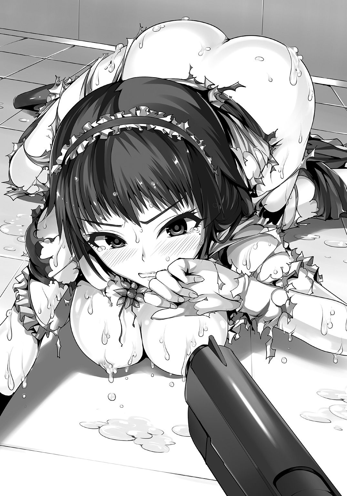
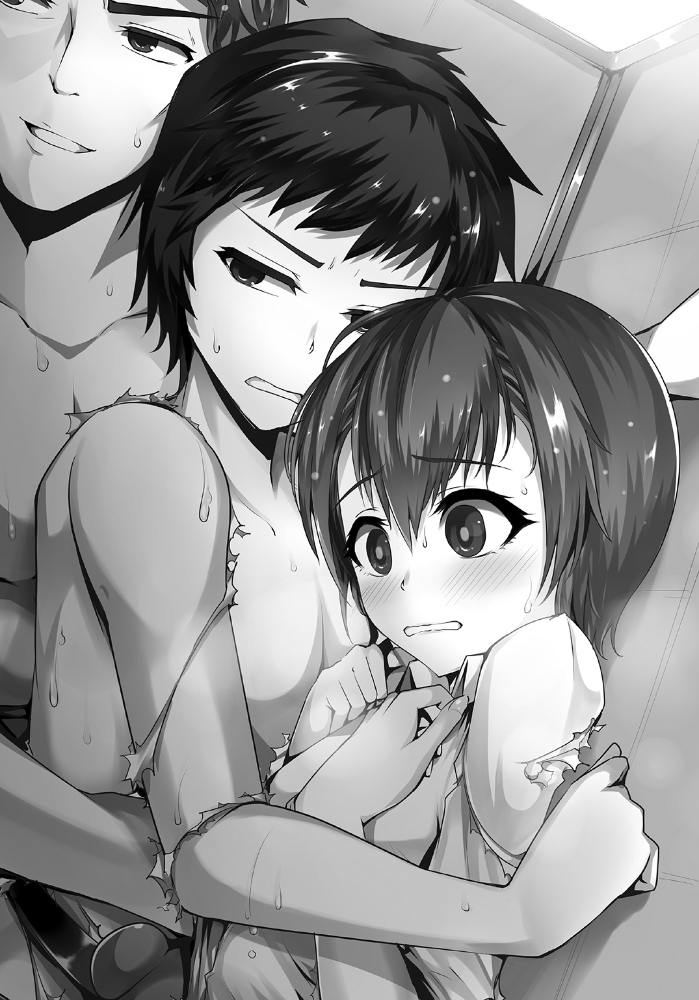

| サバイバルＰゲーム | |
| 櫂末高彰 | |
この本は縦書きでレイアウトされています。
また、ご覧になる機種により、表示の差が認められることがあります。

 ダッシュエックス文庫DIGITAL
ダッシュエックス文庫DIGITAL
サバイバルＰゲーム
櫂末高彰
ＦＩＥＬＤ：？？？
瀬牙達哉は激情のままに白く濁った液体を迸らせた。
「キャアアアアッ!?」
メイド服姿の少女が悲鳴を上げる。
ビュビュビュッと勢いよく飛び出たものが彼女の衣服を汚した。
その髪や頰にまで白い飛沫が散る。
粘りけのある濁った水滴が頰をつうっと垂れ、桃色の唇を穢す。
それから、ドロリと、彼女のエプロンドレスを溶かした。
「くうっ......。よくも、こんな臭くて苦いものをっ。やってくれましたねっ」
少し口内に入ってしまった液体を眉根を寄せて拭いつつ、メイド少女が達哉を睨んだ。
黒くて固くて長い棒状の得物を握りしめ、軽くしごく。
「俺は、戦うって決めたんだっ。倒れていった仲間たちのためにもっ！」
気圧されそうになる自分に活を入れ、達哉は彼女に照準を定めた。
メイド少女も凶悪に黒光りする得物の銃口を向け、応戦しようとする。
しかし、長すぎるそれは近接戦には不向きだ。
素早く回り込み、達哉は容赦なく己のものを彼女にぶっかける。
純白のエプロンが肩紐から溶け落とされ、濃紺のメイドドレスにも穴が広がっていった。
「そっ、そんなとこ、ダメえっ！」
メイド少女が叫ぶ。
しかし達哉は連射をやめない。
次々に剝がされていくメイド服。
足首まであるロングスカートが、自重に耐えかねて腰の位置からズルリと滑り落ちた。
「あ、いやっ！」
ガーターストッキングに包まれた両足が露わになる。
滑らかで艶やかな肉感を持つ太ももがさらされた。
引き締まったふくらはぎの曲線が美しい。
少し大きめのお尻は薄桃色のパンツに覆われていた。
「くっ、屈辱！ お嬢様にも見せたことがないというのに、男子なんかにっ......」
破れかけのエプロンドレスを引っ張り、メイド少女は前を隠そうとする。
だが、そこに隙ができた。
彼女の胸目がけて、白濁液を放つ。
達哉の銃口から大量に吐き出されたものが、べっとりとメイド服の胸元にこびりついた。
「いやあああっ!? こんなにいっぱいっ......けだものぉっ！」
彼女が叫ぶその間にも、白く濁った液体が衣服をドロドロと溶かしていく。
あっけなく薄桃色のブラジャーが露出し、あげくそのブラジャーまで溶け落ちた。
「えっ？」
メイド少女が目を丸くする。
白磁のような肌を伝い落ちる、少し黄ばんだ白濁液。
それが、達哉の眼前にさらされた、ふくよかな乳房の上をたらたらと滑っていった。
ピンク色の突起を覆い、こびりつく。
「......よ、よくもぉっ！」
さすがに涙目になったメイド少女が、無骨な長筒を構え直した。
発射の衝撃に備えるため、足を開く。
ところが、足下に脱げていたスカートが引っかかってしまった。
「あ、噓っ？」
つんのめって床に転ぶ。
衝撃で得物を取り落とした。
こちらに滑ってきたそれを蹴飛ばし、達哉は彼女に狙いをつける。
「ごめん！ でも、俺たちが生き残るためには、戦うしかないんだっ」
四つん這いになって悔しそうにこちらを睨み上げるメイド少女。
そのお尻が白濁に染まった。
薄桃色のパンツが溶け、床に落ちる。
羞恥に震え、首まで真っ赤にした彼女を見下ろし、達哉はその頭に銃口を向けた。
「や......やめてっ......それだけは、ダメぇっ！」
抗う少女の姿に心が痛む。
けれど、仲間たちの無念を思い、彼女の髪を撃った。
その頭につけられたホワイトブリムを。
しかし狙いは逸れ、前髪を汚すに留まる。
メイド少女が叫んだ。
「男子ごときにっ。男子ごときに私の大切なものを奪わせはしませんっ！」
「そんなこと言われても、全裸にしないと倒したことにならないからっ」
「やらせない！ 私の、メイドの魂は決してやらせなぁいっ！」
「うわっ。待って待って止めて！」
身ぐるみ溶かされ、全身を穢された少女が、必死の形相で達哉に飛びかかってきた。

彼女の豊満なおっぱいが偶然にも股間に押しつけられる。
「うわっ？ うわあああっ!?」
達哉は尻餅をついてしまった。
白濁液まみれの少女が覆い被さってくる。
「男子ごときにぃっ！」
「ま、負けるかあっ！」
挫けそうになる心を懸命に支え、達哉は彼女を押し返した。
肩を摑んだつもりが、勢いあまって乳房を鷲摑みにしてしまう。
驚くほど柔らかく手に馴染む感触に、一瞬頭が真っ白になった。
でも、なすべきことは体が覚えている。
「このおおおっ！」
「キャアアッ！」
相手を押し返し、逆に組み伏せた。
そして、彼女の頭からホワイトブリムを奪い取る。
天高く掲げた瞬間、校舎内に設置されたスピーカーからブザー音が鳴った。
少女の脱落がコールされる。
その声を聞くなり、彼女はぐったりと力を失った。
ハアハアと荒い息をつく。
豊かな胸が大きく揺れていた。
涙に濡れた瞳で達哉を見据え、少女は歯がみする。
「覚えてなさいっ......。私の仇は、絶対にお嬢様が取って下さいますからっ。あなたたち男子なんてっ、さっさと全滅すれば良いんですっ......」
少し黄ばんだ液体に汚された姿で、熱い吐息を洩らす彼女。
その上に跨ったまま、達哉は言い返した。
「俺たちは、負けないっ。どんなに絶望的な状況になっても......」
背後から足音が聞こえてくる。
咄嗟に振り返ると、そこには残り少なくなった仲間の一人がいた。
「達哉！ やったんだねっ」
「つばさ！ やっと、やっと一人倒したよっ」
嬉しそうに駆けてくる友人に、達哉はぐっと拳を突き出してみせた。
ＦＩＥＬＤ：１ ｇａｐ《相違》
「ちょっと男子ぃ。ちゃんと掃除しなさいよねぇ。窓の溝に埃たまってるでしょぉ」
「そこの荷物、うちの部室まで運んどいて。ダッシュで」
「こないだ決めたよね？ 食堂で男子が使って良いスペースはここだけだって。ルール守ってくれないと困るんだけど」
「君たち、一年生？ そう。じゃ、そこに正座して。男子が上級生の女子と廊下ですれ違ったときの礼儀作法を教えてあげる。私、すごく親切な先輩だから」
「ねえ、ムシャクシャしてるからビンタさせて。いいよね？ 断るとかあり得ないよね？」
「あっ！ ちょうど良かった。そこの男子、ここで踏み台になって。早くっ」
ｅｔｃ．ｅｔｃ．......
「やってられるかあああああっ！」
裏庭に絶叫が響く。
達哉は苦笑いを浮かべた。
叫んだのは、中学時代からの親友、安芸山千人。
夕暮れ空を仰ぐ彼の目には、怒りの炎が宿っていた。
背が高く、細身ながら筋肉質の彼がそうしていると、意外と絵になる。安芸山は日本人離れした彫りの深い顔立ちなので、ギリシャ彫刻の像のようでもあった。
ただし、その手には裏庭の雑草が握られている。
「落ち着けよ、千人」
ゴミ袋に雑草を放り込みながら、達哉は言った。すぐに親友が振り返る。
「落ち着け、だとっ？ 兄貴、本気かっ？ 本気でそんなこと言ってんのかっ？」
何故か彼は、中学のときから達哉のことを「兄貴」と呼んでいる。
達哉は腰を上げて軽く伸びをした。
「......気持ちは分かるけど、叫んでたって裏庭の雑草取りは終わらないだろ」
「そりゃそうだっ。そりゃそうだよ、兄貴っ。こんなだだっ広い裏庭を俺たちだけで雑草取りっておかしいだろ！ そもそも何で俺たちが雑草取りしないといけないんだって話だっ」
「生徒会で決められたことらしいし......」
「そこ！ そこだ、兄貴っ。この学校、絶対におかしいって。何でこんなに男女格差が激しいんだ？ ぶっちゃけ、男は女子の奴隷状態じゃねえか！」
「まあ、それは俺も思うけど......」
「いくら男の数が少ないからって、こんな理不尽が許されて堪るかっ」
叫ぶ安芸山の声を聞き流し、達哉は再び雑草取りの作業に戻る。
初夏になろうかという四月の終わり。
ほとんど手入れされることのない校舎裏の空き地には雑草が伸び放題だ。
それを引っこ抜きながら、達哉もこの学園のことをぼんやりと思う。
私立成尊学園高等学校。
元は伝統ある女子高だったのだが、十数年前に共学化。
その折、新たな学園長を迎え、大胆な改革が為された。その成果は徐々に現れ、今では全国でも有数の進学校として知られている。
しかし年を追うごとに男子の入学希望者は減少していき、現在は男女比が約一〇対四〇〇となっていた。
そのためか、校内では女子の力が圧倒的に強い。
世間には知られていないけれど、女子生徒優位の環境を学校側が率先して整えており、教師陣も常に女子生徒の味方だ。
男子は女子の「頼み」を一切断ることができない。
生徒会の役員は全て女子で構成されており、彼女らが下した決定に男子は必ず従わなければならない。
そして全寮制のこの学園において、男子に逃げ場などない。
「女子が多いのは覚悟してたけど、こんな学校だったなんてなあ......」
つい洩らしてしまった。
素早く千人が寄り添う。
「兄貴。やっぱ今のうちに決断した方がいいぜ。転校しようっ。俺はどこまでも兄貴についていくから、一緒にやり直そう！」
「......いや」
しかし達哉は頭を振った。
「ここで退いたら、それこそトラウマになる。俺は決心して、この学園に入ったんだから」
「兄貴っ......やっぱ漢だぜ！」
涙ぐむ安芸山。
達哉は申し訳ない気持ちになった。
「俺につき合ってくれるのは嬉しいけど、千人も無理するなよ」
「無理なんかしてねえよ！ 俺たち、これからもずっと一緒だぜっ」
「ありがとう」
親友の暑苦しいくらいの友情には、本当に感謝している。
自分一人だったら、今頃、心が折れていたかもしれないから。
遠く、寂しげな音色が流れてきた。
完全下校時刻を知らせる音楽だ。
「今日はここまでか......」
「っしゃ！ とっとと帰ろうぜ。あのオンボロ寮に」
雑草を詰めたゴミ袋をゴミ置き場に放り込み、帰り支度を整えて帰路につく。
校門前で、見知った人影を見つけた。
とぼとぼと歩いている小さな背中に達哉は声をかける。
「つばさ！ そっちも今、帰り？」
「......あ、達哉。それに安芸山くんも」
相手は弾かれたように振り返り、どこか儚い笑みを浮かべた。
早乙女つばさ。達哉たちの同級生である。
男子の制服がまるで似合っていない小柄で華奢な体つき。
中性的な顔立ちは「可愛らしい」という形容がピッタリだ。
本人には決して言わないよう、達哉は気をつけているのだが。
「おうおう、早乙女。そっちは生徒会の用事、手伝わされてたんだろ？ 女子どもに妙なことされてねえか？」
「アハハ......。それは、大丈夫だよ......」
つばさの返事は、あまり大丈夫そうには見えなかった。
「何かあったら、俺たちに言えよ。一人で抱え込むな」
気弱そうな雰囲気の友人を元気づけようと、達哉は力強く言う。
「うん。ありがとう。本当、大丈夫だから......」
つばさがはにかむように微笑んだ。
普段、男子を好き勝手に扱っている女子より遥かに可愛い。
「達哉たちも、裏庭の掃除お疲れさま。......終わりそう？」
「ありゃ今月、はもうすぐ終わるから、来月いっぱいかかりそうな勢いだぜ」
「この時期は草が伸びるの早いし、抜いても抜いても生えてくるんだよなあ......」
自分たちに課せられた作業についてぼやきながら校門を抜け、男子寮への道を進んだ。
途中、豪勢な造りの高層マンションの前を通る。
成尊学園女子寮だ。
高校生が生活する寮とは思えない豪華さで、セキュリティも万全。
完全個室冷暖房完備はもちろんのこと、各種レクリエーションルームも充実している。
この寮に入りたくて成尊学園を受験する女子中学生も少なくないそうだ。
「......いつ見ても、無駄に豪華だよな」
「......そうだな」
安芸山の呟きに、達哉も頷く。つばさは眉をへの字にしていた。
「それに比べて、俺たちの寮は......」
ほどなくして、男子寮にたどり着く。
そこは古びた三階建ての建物。
築ン十年らしいが、外観はそれ以上に古く見える。壁は一部外装が剝がれており、剝き出しになったコンクリートにヒビが入っていた。
ドアはもちろん手動。冷暖房なし。風呂・トイレ共用。生徒数が少ないので一人一部屋使っているけれど、雨漏りや床が抜けているせいで使えない部屋も多い。
「この落差だよ......。酷すぎんだろ、これ......」
首を振り、安芸山が愚痴をこぼした。
「......じゃあ、ボクはここで。また明日」
男子寮の門前で、つばさが小さく手を振る。達哉も安芸山も振り向き、「じゃあな」と挨拶をした。一人、夕暮れの道を去っていく華奢な背中を見送る。
「あいつも大変だな。週二で通院してんだろ？」
「うん。......早く良くなるといいな」
早乙女つばさは男子寮で暮らしていない。
持病があり、定期的に通院しなければならないので病院近くのアパートを借りているそうだ。学園側もさすがに特例を認めているという。
「ま、こんな汚ぇ寮で暮らすより、断然、環境良さそうだけどなっ。そうだ、今度の休みにでもあいつん家に乗り込もうぜ！」
「あんまりつばさを困らせるなよ。あいつ、優しいから俺たちのバカなノリにもつき合ってくれてるけど、内心、呆れてるんじゃないか」
「そんなことは――」
「大変だあああっ！ ゲス太郎が床の穴にはまって動けねえっ。衛生兵！ 衛生兵ーっ！」
「ここは俺が死守するから、お前たちは先に行け！ 早くっ。早ぁくっ！」
「ガムテープだ！ ガムテープで応急処置をしろっ。それから大本の水道栓を閉めるんだ！」
出入り口のドアを開けるなり、喧噪が耳に飛び込んできた。
達哉と安芸山は、同時に溜息をつく。
「「またか......」」
建てられてから一度もメンテナンスされていないらしく、男子寮では頻繁にトラブルが発生していた。
先日は二階の窓が何の前触れもなく窓枠ごと外れて落下した。
その前は唐突にガスが使用できなくなった。
まだ入学して一ヶ月しか経っていないのに、達哉は男子寮での騒動に慣れつつある。
今回は水道管の一部にひび割れが出来たようだ。
水回り周辺で先輩たちが悪戦苦闘している。その側の床には穴が空いており、ものの見事に男子生徒が一人、腰まではまっていた。
「ゲス太郎！ しっかりしろっ。今、引っ張り上げてやるからなっ」
「いいい痛いでゲスっ。もっと優しく、痛いでゲスうううっ......！」
達哉たちと同じ一年生だ。ロン毛に出っ歯。語尾にやたらと「ゲス」をつけるので皆からはゲス太郎と呼ばれている。
達哉と安芸山は顔を見合わせ、それから手伝いに向かった。
「もう我慢ならないっすよ！」
およそ一時間後。
達哉たち男子寮の面々は、全員、一階の食堂兼談話室に集まっていた。
寮長の三年生に一年生総出で食ってかかっている。
「俺らの生活に悪影響が出てるんですよ！ 学校側が寮の補修をするのは当然でしょ!?」
「寮長！ 生徒会に申請出したって言ってましたけど、あれはどうなったんすかっ？」
「もう埒があかねえから、学園長に直談判しましょう！」
「............」
言い募る一年生たちの声を、寮長は黙って聞くばかりだ。
彼の周りにいる三年生、そして二年生も、渋い顔をして一様に項垂れている。
その光景は、一年生の苛立ちをますます募らせた。
「どうして他の先輩たちも何も言わないんですかっ？ いくら女子の力が強いからって、こんな横暴、学校としてあり得ないですよねっ？ 俺ら、何か間違ってます？」
「............」
しかし、先輩たちからは何の応答もない。
「......すまん」
寮長が一言、口を開いた。
大きな体を折りたたみ、一年生に深々と頭を下げる。
「すまん。俺たちが、不甲斐ないばっかりに......」
「......いや、謝って欲しいわけじゃなくて......先輩たちは、何も悪くないじゃないっすか」
三年生に頭を下げられ、一年生たちは狼狽えた。
寮長が顔を上げる。
「生徒会には、何度も寮の補修申請を出している。先日の返答では、女子寮のリフォーム費用に予算を投じるので、こちらに回す金がないとのことだった......」
「......え？ 女子寮のリフォームって、何をするんすか？」
「......完全防音のオーディオルームを増設するらしい」
「それ、必要っすか!? 学生寮に必要な設備っすか!?」
「より良い環境で美しい音楽を聴くことにより、感受性を高め、創造性を養うための設備だそうだっ......。分かってる！ 俺だって分かってる！ こんなの横暴だと！ しかし......」
再び項垂れ、寮長が小さく呟いた。
「......すまん。俺たちが、負けたばっかりに......」
「負けた？ ......負けたって、何に？」
戸惑う一年生に、周りの先輩たちが口々に告げる。
「お前たちも、もうすぐ嫌でも知ることになる......。この学園の、女子の恐ろしさを......」
「あれがあるから......俺たちは、文句一つ言えねえ......」
「......考え方、変えようぜ。三年間、大人しく従ってれば、そこそこ楽しくやれるからさ」
そう言う彼らの目は、死んでいた。
「なんだよ......」
安芸山が口を開く。
隣に座っていた達哉は、彼の怒りの波動を確かに感じた。
「何なんだよ、それっ！ そんなの、納得できるわけねえよ！ ふざけんなよ！ 先輩！ 何があったか知らねえっすけど、このまま泣き寝入りなんて俺は嫌っすよ！ 女子の恐ろしさ？ 上等だ。やってやろうじゃねえか！ こうなったら戦争だ！」
椅子を蹴って立ち上がった安芸山に、他の一年生たちも呼応する。
次々に立ち上がって、気炎を上げた。
達哉はしかし、座ったまま先輩たちの様子を窺う。
彼らは皆、いきり立つ後輩たちを痛ましそうな目で見つめていた。
「よっしゃあああっ！ 明日、一年生全員で生徒会に乗り込んでやろうぜ！ 生徒会長がなんぼのもんじゃ！ 男の底力、見せたらああっ！」
安芸山のかけ声に合わせ、立ち上がった者たちが拳を突き上げる。
食堂内は異様な熱気に包まれた。
「はい。静かに」
そんな室内を、一瞬にして凍りつかせる声。
達哉は反射的に身を縮こまらせた。
食堂内が静寂に包まれる。
男子たちが振り向いた先。
食堂の出入り口に、女子生徒が二人立っていた。
一人は、烏の濡れ羽のような黒髪をセミロングに流した、冷たい雰囲気をもつ少女。
もう一人は、警察帽にラバー製のボンテージとピンヒールという、およそ女子高生とは思えない格好をした女子だった。
「げ、ゲスうっ!?」
一年生の中から悲鳴が上がる。
ロン毛の出っ歯――ゲス太郎が目を剝いてガタガタと震え出した。
「そ、そちらの黒髪女子は、成尊学園、現・生徒会長、王坂綾女ではないでゲスか!? 二年生でありながら類い希なる統率力によって生徒会を率いる学園の頂点！ 引退した前・生徒会三年生からの信頼も篤く、その冷徹な判断力から『極寒の女王』と呼ばれているでゲス！」
随分と説明口調な発言だったが、その言葉に周囲の男子がどよめく。
「そ、そしてっ。その隣に立つボンテージ姿の彼女は、生徒会副会長、銭形武智子でゲス！ 王坂会長の右腕として荒事全般をこなすという秩序の番人！ その見た目と実力からついた仇名が『灼熱の断罪人』でゲスぅっ！」
さらに大きなどよめきが上がった。
「わざわざ紹介ありがとう。それじゃ全員、座って」
黒髪女子――王坂が淡々と告げる。
有無を言わせぬ雰囲気に押され、一年生たちは腰を下ろしてしまった。
「随分と盛り上がっていたみたいだけど」
彼女が悠然と食堂内の男子を見回す。
誰しもが、目を合わせないよう俯いた。
達哉もそうしようとしたのだが、それより早く王坂の瞳に捉えられる。
目が合った。
全身が総毛立ち、身動きできなくなる。
過去の記憶がゾワゾワと蘇ってきた。思い出したくない、忌まわしい記憶が。
王坂は微かに目を細め――
けれど、すぐに視線を達哉の隣に移した。
安芸山が真っ直ぐ彼女を睨んでいる。
「現在の境遇に、不満があるようね？」
問いかけてきた王坂に対し、彼は堂々と言い返した。
「当然だ！ 会長だって本当は分かってんだろっ？」
「おい貴様！ 会長に、その態度は何だ!?」
ボンテージ女子――銭形が怒声を発する。腰に提げていた鞭をビシッと鳴らした。
「いいのよ、武智子。何も知らない一年生なんだから」
副会長を制し、王坂が余裕の笑みを浮かべる。
「そんな君たち一年生に、朗報よ」
そう言って、食堂のテーブルにダブルクリップで留めたＡ４用紙の束を放った。
一年生たちは何ごとかとそれを覗き込み、上級生たちは眉間に皺を寄せる。
達哉は表紙に印刷された文字を読んだ。
「本年度ＳＰＧ実施要項」
そう書かれてある。
「何だ、これ？ えすぴーじー？」
安芸山が首を傾げて紙束を手に取った。頁を捲る。
「サバイバル・パージ・ゲーム。ＳＰＧはその略称よ。毎年、五月の連休に合わせて行われる男女合同のレクリエーションイベントなの」
食堂内をゆっくりと歩きながら、王坂が説明を始めた。
「サバイバルゲームって知っているかしら？ サバゲーって略されるけど」
「知ってます！」
一年生の中から勢いよく手が挙がる。目を輝かせているものが三人いた。
それに軽く頷いてから彼女は話を進める。
「知らない人のために簡単に説明すると、特定のフィールド内で玩具の銃を使ってＢＢ弾を撃ち合うゲームよ。銃撃戦を模した遊びね」
「きちんとしたレギュレーションがあるからなっ。サバゲーは紳士のスポーツだぜ」
「ちょっとそこ、黙ってて」
テンションを上げている三人を黙らせ、王坂が男子を睥睨した。
「このサバイバルゲームという集団戦を通じて、協調性やリーダーシップ、決断力などを養いながら男女間の親睦を深める。学校側の建前としては、あくまで教育の一環よ」
「......男女間の親睦？」
誰かが呟いたその言葉に、生徒会長は冷たく笑う。
「一年生の君たちも、とっくに理解しているわよね。この学園における男女格差を。別に取り繕う気はないわ。はっきり言ってあげる。君たち男子は、この学園において女子の奴隷よ。君たちは三年間、私たちに傅き、奉仕することによってのみ生かされる奴隷なの。隷属と服従だけが全て。自由も権利も、ここにいる限り一切ないわ」
「ふ、ふざけんなっ！」
安芸山が立ち上がって叫んだ。
「そんな横暴、許されるわけねえだろっ！」
「そうね。全くもって、その通りだわ」
「どんな言い訳しようと......って、え？」
振り上げた拳をテーブルに叩きつけ損ね、安芸山が目を丸くする。
彼の訴えをあっけなく認めた王坂は、唇に人差し指を当て、思案げな顔になった。
「でも、学園の方針はそうなっているのよ。いくら私が生徒会長でも、何の根拠もなく男子を優遇して下さいとは言えないのよね」
「そ、それはっ......」
「そこで、このＳＰＧなのよ」
安芸山が手にしている紙束を指さし、彼女が艶然と微笑む。
「男女の親睦を深めるレクリエーション。この場で君たち男子が目覚ましい活躍をしてみせたら、どうかしら？ きっと学園側も待遇を改めるわ。少なくとも生徒会は君たちの味方をしやすくなる」
王坂の甘言に、一年生は「おおっ」と歓声を上げた。
「それに、このゲーム。君たちにとって凄くオイシイものなのよ」
彼女が銭形を一瞥する。
「おい、お前！ そこに立て」
鞭を鳴らし、銭形が二年生の一人を食堂の片隅に立たせた。
真っ青な顔で立つ彼を王坂が指し示す。
「サバイバル・パージ・ゲームは、サバゲーとは異なる部分が幾つもあるの。詳しいことは実施要項に記載されているけれど、一番の特徴は実際に見てもらった方が早いから」
そう言うなり上着の中に手を入れ、素早く一丁の拳銃を抜いた。
躊躇いなく引き金を引く。
ビュビュッ！
銃声というより、水鉄砲の発射音に近い音がした。
「うぐっ......」
そして着弾。
立たされていた二年生の部屋着に、白濁した液体が二箇所こびりついた。
「ペイント弾ですか？ サバゲーっていうよりペイントボールのような......」
「よく見てなさい」
呟いた一年生を制し、王坂が二年生を指さす。
「!?」
達哉は目を疑った。
他の一年生も同様である。
「服が......」
「服が、溶けてるっ？」
白い液体のこびりついた箇所が、みるみる溶けていく。
そして服の下の肌を露わにした。
「これがＳＰＧ最大の特徴よ。使用する銃弾は学園長が独自に開発した特殊なタンパク質『トロケルンＸ』。このタンパク質は繊維を分解する特性があるの。ちなみに人体には無害なだけでなく健康に良い成分がたっぷり含まれていて、お肌にも良いし滋養強壮作用もあるのよ」
銃を仕舞いながら王坂が解説する。
「専用の銃で、この特別製の銃弾を撃ち合うの。そして、脱落判定は着用している衣服を全て溶かされること。......これがどういう意味か、分かるわよね？」
彼女の言葉が、じわじわと周囲に浸透していく。
「まさか......」
そして一人が、恐る恐る口を開いた。
「まさかっ、対戦相手の女子を倒すには、その、服を全部っ......」
「そう。素っ裸にしないといけないの。というより」
王坂は悪魔的な笑顔になる。
「ルールに則り、堂々と私たちを全裸にできるのよ」
その一言は、抗いがたい力をもって一年生たちの胸に刻み込まれた。
沈黙。
しかし、それは陰鬱なものでも殺気立ったものでもない。
来るべき楽園を妄想する、緩みきった邪念の表れだった。
「チッ」
椅子に座り直した安芸山が、小さく舌打ちする。
そして達哉は、他の一年生と裏腹に嫌な予感に囚われていた。
「それじゃ、細かいルールは実施要項を熟読してね」
王坂が食堂の出入り口へと歩き出す。その後に銭形も続いた。
「あ、そうそう。是非、君たちに勝って欲しいから、今年は参加人数も男子に少しだけ有利にしてあるのよ。みんな頑張ってね」
そう言い残し、生徒会の二人は女子寮に帰っていった。
「............」
しばしの静寂の後。
「いいよっしゃああああああああああああああああああああ!!」
「やってやるぜえええええええっ！」
「お、女の子のっ！ 女の子のっ！ 合法的に!!」
「生徒会長さまバンザーイ！ あの人は、ほんま女神やでえっ！」
「うへへへへへへへへへ！ まさかの大逆転って本当にあるんだね！」
歓喜に沸く一年生たち。
妄想全開で騒ぎまくる。
ところが、上級生は渋い顔のまま。いや、それ以上に辛そうな表情になっていた。
それに気づいたのは、まるで喜べずにいた達哉と安芸山だけだった。
「昨日、寮でそんなことがあったんだ......。それで、朝からみんな元気なんだね」
つばさが教室内の皆を見回す。
翌朝。達哉はつばさにＳＰＧのことを話した。
「ったく。女の裸なんか見て何が楽しいんだっつうの。なあ、兄貴？」
安芸山が不機嫌そうに言う。つばさが困ったように笑った。
「男子は、そういうの好きだよね......」
「いや、お前も男子だろ」
「あ、うん......。そうだね......」
つばさは、どこか表情が暗い。
達哉は腕を組み、あれから浮かれ騒いでばかりいる同級生たちを見回した。
「......あの後、先輩たちに連休のイベントについて訊いて回ったんだ」
「ああ、そういえば。兄貴、首尾はどうだったよ？」
「それが......誰も何も教えてくれなかった。ただ、『すまん』とか『許せ』って謝られるばかりで。ＳＰＧについては、昨日渡された実施要項以上のことは分からない......」
「やっぱ、胡散臭ぇよなあ」
安芸山も腕を組んで難しい顔になる。
「それに俺は、ゲームだとしても女の子と戦いたくないよ。そんなことのために、この学園に入ったわけじゃないし」
「達哉はどうして、この学園に？」
つばさが尋ねてきた。
達哉は苦笑いになって、なるべく軽く言う。
「女の子と仲良くなりたくて、かな......」
きょとんとする友人に少し補足した。
「俺、小学生の頃ちょっと色々あって、女性恐怖症っていうか、同年代の女子が苦手なんだ。中学の頃は女子とまともに話ができなくて、こんなんじゃダメだと思って、あえて女子生徒が多いっていう成尊学園を受けたんだよ」
「俺は兄貴の心意気に打たれて、ついてきたんだ！ 俺と兄貴は一心同体だからな！」
ガッシと安芸山に肩を組まれ、達哉は笑う。
「おーっし！ そんじゃ、クジ引きやんぞーっ」
教壇で同級生の一人が高らかに宣言した。
「ＳＰＧは３ステージ制！ 男子一〇人対女子五人のハンデ戦だっ。しかも、今年は生徒会長さまの心憎い計らいによって第１ステージは男子一一人対女子四人という人数設定になってる。これは確実に勝てるぜ！」
「一年の男子は、ここにいる二一人で全員だから、半数以上が出ることになるのか」
「出たい奴ばかりだろうから、公平にクジ引きだ！」
教卓にクジの入った箱が置かれ、同級生たちが我先にとクジに群がる。
達哉と安芸山、つばさは席から動かず成り行きを見守った。
参加が決まり喜ぶもの。外れて悔しがるもの。
あっという間にクジは残り三つとなった。達哉たちの分だ。
「瀬牙と安芸山。それと早乙女も早くクジ引けよ。って、ちょっと待て。今、参加決まってんの八人？ じゃ、残り全部当たりってことじゃねえかっ。そこの三人、参加決定な！」
思いがけず、クジを引く前に結果が決まってしまう。
達哉は席を立って言った。
「待った！ つばさは激しい運動とか無理だろ。外してやるべきじゃないか？」
「お、それもそうか」
「んじゃ、あと一人、敗者復活戦だな！」
「よっしゃ！ 今度こそ当てるっ」
にわかに活気づく、外れを引いた一〇名。
ところが、そこで申し訳なさそうに手が挙がった。
「あの......。ボク、出るよ」
「えっ？」
クラス全員が振り向く。
つばさは皆の視線に身を竦めながらも、はっきりと言った。
「ボクは、大丈夫だから。連休のＳＰＧに、ボクも出るよ」
一拍置いて、「おおーっ」と歓声が上がる。
「そうか。やっぱ、早乙女も男だからな」
「男には、譲れねえときがあるもんな。分かるぜ、お前の気持ちっ」
生暖かい視線で受け入れられた。つばさはハハハと乾いた笑いを返す。
「っしゃ！ 今回外れた奴らも、第２、第３ステージがあるから安心しろ！」
「いきなり第１ステージで負けて終わりとかやめろよーっ」
「さすがにそれは無いって！」
楽しげに笑い合う同級生たち。
しかし達哉の不安は、どんどん深まっていった。
・～・～・～・～・
「そう。全て順調のようね」
放課後の生徒会室。
生徒会長、王坂綾女は執務机の椅子にゆったりと凭れ、報告に頷いた。
「あなたのお蔭で、男子の情報は全て揃ったといっていいわ。あとは本番で蹂躙するだけ。入学してから一ヶ月間、本当にご苦労様でした」
「......あの」
執務机の前に立って俯いていた少女が、声を洩らした。
「何かしら？」
「......あの、会長。やっぱり、こういうの、間違ってると思います」
声を微かに震えさせ、それでも彼女は綾女に自分の意見を言う。
「女子も男子も、対等に仲良くすればいいじゃないですか。どうしてこんなことを......」
「早乙女、貴様ぁっ！」
綾女の傍らに控える銭形が鞭を鳴らして怒鳴った。
「女子と男子が対等だとぉっ？ 寝言はいい加減にしろ！」
「落ち着いて、武智子」
綾女はゆっくりと席を立ち、執務机を回り込んで少女の斜め前に立つ。
男子の制服を身につけ、入学当初から男子の振りをして学園に通い続けている彼女。
生徒会のスパイ、早乙女つばさの顔を覗き込んだ。
「早乙女さんは優しいわね」
そっと撫でるような声音で告げると、早乙女は不思議そうな目を向けてきた。
「早乙女さんは優しいから、一緒に過ごしてる男子たちのことが可哀想に思えてきたのよね？ それで、さっきみたいなことを口にしてしまっただけ」
「あ、あのっ......。私は......」
「大丈夫よ、早乙女さん。安心して」
彼女の肩に手を置き、真っ直ぐ目を見て言う。
「これは男子にとって、最も良いことなんだから」
「最も......良いこと、ですか？」
「ええ、そう。いい、早乙女さん？ 男っていうのはね、ブレーキが壊れた車なの。あの人たちは目の前に壁が迫ってきたら、急いでハンドルを切るか、アクセルを踏み込んで壁に全力でぶつかるかの二択しかない。そんなの危険よね？」
「......はい」
「それに比べて、女にはちゃんとブレーキが備わってる。女は壁が迫ってきたとき、ブレーキを踏んで止まるという選択肢も持っているの。ハンドルを切るにしても、減速して安全に避けることができるわ」
早乙女の肩から手を離し、ゆっくりと彼女の周りを回る。
「選択肢を多く持つ優れた女性が、選択肢の少なく危なっかしい男性を管理し操る。それこそが、最も理想的な社会なの。学園長も、そんな社会を作り出してくれる女性を育成するために大改革を為されたのよ」
「だ、だけど......」
「『早乙女って男みたいだよなー』」
声音を変え、早乙女の小さな背中に投げつける。
面白いくらい分かりやすく、その肩が跳ねた。
「『スカートとか全然似合わねえしー』」
「『本当は、ち○こついてんじゃねえのー？』」
気丈にも立ち続けているが、足の震えは隠せない。
「酷いことを言う男子がいたものよねえ。早乙女さんはこんなに可愛い女の子なのに。小学生のときの発言とはいえ、とても許せない暴言よね。
ねえ。あなたに心ない言葉を投げつけた男子は、今、どうしているのかしら？ きっと何の罪悪感も抱かず、のうのうと生きているわよ。誰かを平気で傷つけて、そのことに気づくことすらなく、のうのうと」
包み込むように後ろから抱きつき、耳元で囁いた。
「早乙女さんは優しいから、そんな男子でも許してあげるんでしょうね。だけど、心ない言葉に傷つけられている女の子は他にもきっと、たくさんいるわ。彼女たちを助けたいとは思わない？ 誰も心ない言葉を口にすることのない、理想の社会が欲しくはない？」
「それは......その......理想は......欲しい、です......」
「ありがとう、早乙女さん！ あなたなら分かってくれると思っていたわ！」
素早く回り込み、満面の笑顔で彼女の両手を取る。強引に握手をした。
「今度のゲームでも、あなたが最善の行動を取ってくれると、私は信じています。理想の社会のために頑張りましょうねっ」
力強く押し込む。
早乙女は、小声で「はい......」と呟いた。
彼女を退室させ、綾女は再び執務机の椅子に身を預けた。
「早乙女は、本当に大丈夫でしょうか？」
銭形が懸念を口にする。
「朱に交われば赤くなる、とは良く言ったものね。男子に毒されそうになっているわ。でも、ＳＰＧが行われれば解決することよ。男子が無様に敗北し、女子生徒に戻って学園生活を始めれば、彼女もすぐに目が覚めるわ」
「慧眼です」
熱っぽい瞳で銭形が一礼した。
「ゲーム本番が、楽しみね」
綾女はスマートフォンを取り出し、画面を指で弄る。
その口元には、嗜虐的な笑みが浮かんでいた。
ＦＩＥＬＤ：２ ｏｖｅｒｗｈｅｌｍ《圧倒》
「てめえらあああっ！ 気合い入ってっかあああ!?」
ウオオオオオオオオオオオオオオオッ！
五月の連休初日。
達哉たち一年生は、学園の敷地内にある「ＳＰＧフィールド」に集まっていた。
時刻は午前十時になろうとしている。
「いいか！ 今日の狐狩りは、ヒトマルマルマルに作戦決行だ！」
「各々、銃の扱い方を確認しておけよ！ 準備を怠るなっ」
「セーフティーはまだ解除するんじゃないぞ！ フィールド外での発砲は御法度だからなっ」
一際、張り切っているものが三人。
達哉たちが普段の制服姿なのに対し、彼らは迷彩服を着込んで息巻いていた。
「......何で、あいつらが仕切ってんだ？」
用意されていた銃を掲げて同級生たちが雄叫びを上げる中、安芸山が呟く。
「それは、あの三人がサバゲーマニアだからでゲス」
安芸山の疑問に答えたのはゲス太郎だった。
「何か知ってんのか、ゲス太郎？」
「もちろんでゲス」
ロン毛をふわさあっと風になびかせ、彼は前に立つ三人を指さす。
「真ん中に立つガタイのいい彼は、佐藤利夫！ 小学四年生にしてサバゲーの魅力に取り憑かれた、サバゲー同好会の会長でゲス！」
顎のエラが張り、肩幅もあるので全体的に四角い印象の男だ。
「向かって右に立っているのが鈴木太郎！ 中学時代、（サバゲーで）数々の死線を潜り抜けた古強者でゲス！」
丸顔で坊主頭。おまけに太っているので見た目が全体的に丸い。
「そして左側に立つ男こそ田中大翔！ 匍匐前進で彼の右に出るものは数人しかいないという匍匐前進のエキスパートでゲス！」
短い髪を逆立てており、こけた頰と細い顎のせいで逆三角形のような顔をしている。
「彼らサバゲー三人衆が仕切るのは当然の理でゲス！ この第１ステージはもらったも同然でゲスよっ。ゲッスゲスゲス」
独特な笑い声で、ゲス太郎は別に頼んでもいない解説を終えた。
「......何つうか、微妙な連中の気がすんだが」
「ま、まあ。経験者がいるのは心強いよ......」
安芸山のぼやきに、達哉はフォローを入れる。
「つばさは、調子どう？ 無理しないで早めにリタイアしてもいいんだからな」
集まったときから雰囲気の暗い友人に声を掛けた。
「......うん。平気だよ」
つばさは渡された拳銃を両手で握りしめて答える。
しかし、その表情は暗いままだ。
「つばさ。やっぱり、どこか――」
「それでは最後に、寮長からのありがたーいお言葉を伝える！」
達哉の声は佐藤の宣言と周囲の歓声にかき消された。
佐藤が封筒から便箋を取り出し、文面を読み上げる。
「『勇敢なる一年生諸君！ ＳＰＧでの健闘を祈る。なお、ゲームは長丁場になることも予想されるので、必ず男子トイレに行っておくこと！ 最低二回は行くこと！』以上だ！」
ウオオオオオオオオオオオオオオッ！
皆が雄叫びを上げた。
「トイレ行っとけって、小学生かよっ」
安芸山がツッコんだが、その声は周囲の熱に埋もれる。
そのとき、午前十時を告げるチャイムが鳴った。
フィールドの各所に設置された拡声器から、ゲームスタートのアナウンスが流れる。
「いよいよ、始まる......」
達哉は拳銃を握りしめ、ゴクリと唾を飲み込んだ。
「やるからには、勝ちにいくぜ」
サブマシンガン片手に安芸山が獰猛な笑みを浮かべる。
「............」
無言で皆についていくつばさ。
金網で囲まれたフィールド内に、達哉たち一一人が入った。
フィールドを見渡す。
三階建ての廃校舎を含む約二〇〇メートル四方の空間が第１ステージのフィールドだ。男子側のスタート地点は校門前で、女子側は廃校舎内のどこかに潜んでいる。
目の前に広がる運動場跡地には大小様々な障害物が置かれていた。
さらに左右へ目をやる。
フィールドを囲っている金網は、森の木々に遮られてここからでは見えなかった。
「廃校舎まで、運動場を進む方法と木の中に身を隠して回り込む方法、二通りあるのか」
達哉はゲームのおおまかなルールを頭の中でおさらいする。
第１ステージは、男子側一一人女子側四人の殲滅＋フラッグ戦。
プレイ時間は午前十時から完全下校時刻の午後七時まで。
男子側の勝利条件は、時間内に女子を全滅させるか廃校舎のどこかに置いてあるフラッグを獲得すること。
対する女子の勝利条件は、男子を全滅させることのみ。
ゲーム参加者の脱落条件は「全裸」になってしまうこと。
敵に撃たれ、全ての衣服を溶かされると負け。ただし、ベルトや靴等の革製品は溶かせないので、残っていても脱落と見なされる。
フィールド内を監視しているカメラの映像を審判プログラムが解析して判定が下されるので、どちらか一方が贔屓されることはない。
ゲームで使用する銃は原則、男女で差が出ないよう数量、威力等を考慮されている。
さらに学園内での「功績」を鑑みて、特殊な武器の使用が認められている生徒もいる。
フィールド内にある物は、著しく危険な行為でない限り、移動が可能。
脱落した参加者は、係員の手によって速やかにフィールド外へと移送される。その際、所持していた武器は回収されるので、使用したい場合は先に確保すること。
「人数差を考えても、やっぱり男子に有利な気がするけど......。男子は三勝しないといけないから、その分のハンデなのかな？」
「兄貴！ カートリッジもらおうぜ」
安芸山に呼ばれて振り向いた。
古びた門柱の側に、蛇口のついたドラム缶が三つ並んでいる。
中には「銃弾」となるトロケルンＸが大量に入っていた。
専用のカートリッジに「銃弾」を注入し、銃に装塡する。それから予備のカートリッジを幾つか制服のポケットに突っ込んだ。
「弾切れになったら、一旦ここに戻って補給するように！」
「補給は戦闘継続の要だからなっ」
「無駄弾を撃つなよ！」
佐藤、鈴木、田中のサバゲー三人衆が口々に告げる。
「準備が整ったら出発だ！ みんな、俺たちについて来い！」
テンションの高い三人が先導し始めた。
三人揃って手近な障害物に身を隠す。
主に鈴木の横幅が広すぎて、隠れ切れていなかったが。
「よし！ 作戦通りにっ」
「ここからはハンドサインでっ」
「田中、武運を祈る！」
達哉たちが突っ立ったまま成り行きを見守る中、三人は何ごとか小声で打ち合わせる。
田中が慎重に障害物の陰から顔を出して先の様子を窺った。
「......あんなことしなくても、普通に進めるんじゃね？ 女子って校舎の中からスタートだろ？ さっきから俺、校舎の正面玄関見てっけど誰も出てきてねえぞ」
安芸山が言い放つ。達哉は苦笑いになった。
「こういうのは、雰囲気とかも重要なんじゃないか？」
「今だ！」
何のタイミングを計っていたのか分からないが、突然、田中が障害物から飛び出した。前転を決め、素早く地面に身を伏せる。
そしてアサルトライフルを胸に抱いたまま匍匐前進を始めた。
「えっ？ そこで匍匐前進いるっ？」
思わず声が出てしまう。
次の障害物までの数メートルを鮮やかな匍匐前進で進みきった田中は、陰に隠れるなりフウと額の汗を拭った。汗をかいていたかどうかは定かでない。
「......今度は何をやってんだ？」
安芸山が目を細めた。
田中は指を数本立てたり、向きを変えたりしている。
「ハンドサインじゃないか？ 普通に声が届く距離だと思うけど」
「そういや、さっきそんなこと言ってたな」
話している間も、田中は佐藤と鈴木に向けてハンドサインを送り続けた。
ところが二人とも顰め面になっている。
佐藤が人差し指を立て、「もう一回」「もう一回」と声を出さずに言った。
痺れを切らせた田中が匍匐前進で戻ってくる。
「だからっ。『二人ずつペアになって慎重に進め』ってサインだろ！」
「あ、『慎重に』だったか。悪い悪い、ちょっと覚え切れてなかったわ」
「昨日の夜、決めたばっかだからしょうがないって」
「ったく、頼むぜ！」
田中が一つ先の障害物に戻っていく。
普通に歩いて。
「おおいっ！ さすがに、おい！」
ついに安芸山が声を上げた。
「バカ！ 静かにしろ、安芸山っ。敵に気づかれたらどうするんだっ」
「しかも、ボケーッと突っ立ちやがって！ ここは戦場だぞ！ もっと緊張感もてよ！」
「そりゃ、こっちの台詞だ！ 黙って見てりゃまどろっこしいことばっかしやがって！ おい、みんな！ さっさと突っ込むぞ！」
オオーッ！
どうやら皆、安芸山と同意見だったらしい。
銃を構え、背を低くした仲間たちが一斉に駆け出した。敵の姿がないことを確認しながら障害物の間を突き進んでいく。
「あ、ちょっ、置いていくなって！」
「サバゲーはチームワークだぞ！」
「待ってくれ！ 匍匐前進だけが俺の見せ場なんだあっ」
サバゲー三人衆が慌てて追いかけてきた。
達哉は走りながら後ろを見る。
すぐ側をつばさが走っていた。
「つばさ、苦しくなったらすぐに言えよっ。ゲームを中断したっていいんだから」
「......うん。ありがとう」
友人のか細い声は少し気懸かりだったが、そちらにばかり構ってもいられない。
誰も攻撃を受けることなく、廃校舎の正面玄関前までたどり着いた。
達哉たちは玄関脇の壁に背をつけて中の様子を窺う。
「ま、待て！ いきなり入ったら、敵の餌食っ......」
「ここは俺がっ......匍匐前進で斥候を......」
「この格好、暑いよっ......」
迷彩服の三人がバタバタと追いついてきた。
勢い余って校舎内に駆け込んでいく。
「あ、おいっ！」
三人を引き留めようと一人が中に入り、その流れで他の仲間たちも廃校舎に突入してしまった。達哉は安芸山と顔を見合わせ、後に続く。
「き、気をつけろっ。ここは敵の本拠地だ！」
「みんな一緒に行動するんだ！ バラバラになったが最後、各個撃破されるぞ！」
「今度こそ、俺の匍匐前進の真価を見せてやるぜ！」
再び先頭を取り戻したサバゲー三人衆が、廊下の先に銃口を向けながら息巻いていた。
大声で言い合いながら、左右に伸びる廊下を左に進んでいく。
「ってか、ここ土足でいいのか？」
「千人、ルールにあっただろ。安全上、靴は常に履いておくようにって」
「そういや、脱落するときって裸に靴だけって格好になるんだな。何かシュールじゃね？」
「......あまり想像させないでくれ」
達哉は安芸山と二人で最後尾についた。背後を警戒しながら慎重に進む。
「それにしても、全然、女子と遭遇しないな」
「四人しかいねえからな。安心してくれ兄貴。兄貴のケツは俺が守るぜ！」
「背中、な。ケツだと変な意味に聞こえそうだ」
安芸山は、何故か爽やかな笑顔で親指を立ててきた。
「......守るんだったら、俺よりつばさを見ててくれ。体、弱いんだし」
「俺は兄貴のケツを守ることしか頭にねえぜ！」
「何を言ってんだ......」
廃校舎は予想外に掃除が行き届いている。窓ガラスもドアも取り除かれており、ガランとした印象は否めないが、机や椅子、カーテンその他諸々は残されていた。
何ごともなく、上り階段までたどり着く。
佐藤の指示で鈴木と田中が先行した。油断なく階段を上がり、踊り場でまた意味の分からない動きをしてから仲間を呼ぶ。
全員が二階に上がったところで鈴木が悲鳴を上げた。
「敵だあああっ？」
「落ち着け、鈴木！ それは鏡だっ」
三階への階段前に大きな鏡が据え付けられ、行く手を遮っている。
鈴木はそれに向かってライフルを構えていた。
「......くそっ。こっちの階段は封鎖されてやがるっ」
キャスター付きだったので佐藤が鏡を押しのけたが、その先には無数の机が積み上げられていた。踊り場までを埋め尽くしている。
「これをどけるのは無理だな。廊下の反対側にある階段を使うしかないってわけだ」
佐藤が二階の廊下を見据えた。
長い廊下の先。
ほぼ中間地点に机が組み上げられてあった。
通り抜けるためには、手前のドアから教室に入って迂回するしかなさそうだ。
「ありゃ、一〇〇パー待ち伏せしてんな」
安芸山が呟く。
「ここは俺たちに任せろっ。なあに、この程度の死線、いくらでも潜り抜けてきたからな！」
サバゲー三人衆が前に出た。
皆の期待を受け、廊下を走る。教室のドア手前まで来ると三人揃って壁に張りついた。
「よし。ここは俺が援護する。鈴木、行け！」
「いや、俺が援護する。田中、出番だっ」
「いやいや、俺が援護するから佐藤、ＧＯ！」
「何でだよっ。俺は会長だぞっ」
「会長が率先して前に出ろよ！」
「ここで自慢の匍匐前進しろよっ」
「匍匐前進は関係ないだろっ」
揉めだした。
「じゃ、せーので行こうぜ。せーの、で」
「お前、それ絶対行く気ないだろっ？」
「行くよっ。絶対行くって。お前の方こそ行かないんじゃないのー？」
「行くに決まってんだろ！ 俺はサバゲー歴――」
「誰でもいいから、さっさと行け！」
駆け込んだ安芸山が三人まとめて蹴飛ばす。
「「「うおおおおっ？」」」
佐藤、鈴木、田中が教室内に転がり込んだ。
そして――
「「「ギャアアアアアアアアアアアアアアア!?」」」
絶叫とともに廊下へ飛び出してくる。
高速で何かが回転する音。
そして腹を打つ重低音とともに夥しい数の銃弾が三人を襲った。
サバゲー三人衆の体が瞬く間に白く汚されていく。
迷彩服がズタボロになって飛び散り、インナーシャツが、トランクスが、溶け落ちた。
達哉たちはその場から動けない。
安芸山が驚愕に目を見開き、急いでこちらに駆け戻ってきた。
全身、白濁した液体にまみれ、佐藤が、鈴木が、田中が床に沈む。
三人ともヒクヒクと四肢を痙攣させた。
ブーッとブザー音が鳴る。
「佐藤、鈴木、田中。脱落を確認」
無機質な声がサバゲー三人衆の脱落を告げた。
「ウウォーッホホホホホ！」
校舎内に高笑いが響く。
「力の差を思い知りまして、男子の皆さん？」
ゴロゴロと何かが転がってくる音。
教室の中から、車輪付きの台座に乗せられたガトリングガンが姿を現した。
それを押して出てきたのは、金髪を優雅にウェーブさせた一人の女子生徒。
達哉たちにガトリングガンの銃口を向け、傲然と腰に手を当てて胸を張る。
着ているのは成尊学園の制服だが、明らかに高級な生地で仕立てられていた。胸元には花のブローチが輝き、刺繡等のアレンジも入っている。
「で、出たでゲスーっ！」
ゲス太郎が悲鳴を上げた。
「まさか、まさか彼女が出てくるとは大変なことでゲスよーっ！」
「知っているのか、ゲス太郎っ？」
仲間に尋ねられ、彼は「ゲス」と頷く。
「あの女子生徒は、一年Ａ組の永家鷹子でゲス！ わしらと同じ一年生でありながら、入学初日に生徒会書記として迎え入れられた、永家グループの令嬢なんでゲス！ その気性の荒さと猪突猛進っぷりから、ついた二つ名が『暴走する豪華列車』！ 行く手を阻むものを金の力で蹴散らしていくのでゲスぅっ！」
「二つ名、ひでえな！」
「というか、入学して一ヶ月くらいなのに、もうそんな二つ名があるのかっ？」
「ウウォーッホホホホホ！ 私、すでに有名人ですのねっ。でも、それは当然のこと。何しろ王坂会長の跡を継ぐのは、この私！ 永家鷹子なのですから！ さあ、男子の皆さん。早々に死んで下さいまし！」
永家がガトリングガンを構えた。
引き金を引く。
「みんな、逃げろおおおおっ！」
白濁液の銃弾が容赦なく浴びせかけられた。
達哉たちは急いで一階への階段に飛び込み、壁に背をつけて身を隠す。
「そんなことをしても無駄ですわよおおっ！ どこに隠れたところで、私のガトリングガンからは......あら？」
銃弾の雨が止んだ。
「お嬢様。あれほど、無駄弾はお控え下さいと申し上げましたのに」
永家とは違う声が聞こえてくる。
そっと廊下を覗き込むと、永家の隣にメイドが立っていた。
呆れた顔で永家にアサルトライフルを手渡している。
「お嬢様は、本当に前しか見ていないポンコツですね」
「う、うるさいですわよ仁桜っ。こんなものなくても、男子などアサルトライフル一丁で充分ですわ！ これはハンデ、そうっ、ハンデですの！」
そう言って高笑いを上げた。
「たった今、思いついた言い訳を堂々と言い切るハートの強さ。さすが、お嬢様です」
「そうでしょう！ さすが、私っ」
「褒めてないのに褒めていると受け取るおバカっぷりも、お見事です」
「ウウォーッホホホホホ！ ......仁桜、気のせいかしら？ 私、バカにされた気がしますわ」
「私、お嬢様のことが大好きです」
「それは当然よねっ。さあ、気を取り直して男子の皆さんを殲滅致しましょう！」
アサルトライフルを構えた永家が駆け出す。
「みんな！ 永家さんが来るぞっ」
達哉は振り返り――
「何やってんだ、瀬牙！ 早く逃げ......一旦、退くぞ！」
すでに皆が一階へと下りているのを知って急いで後を追った。
「ウウォホホホホホホ！ どこへ逃げようと、私からは逃れられませんのよ！」
高笑いと銃声がものすごい速さで追いすがってくる。
半ば恐慌をきたした仲間たちは我先にと廃校舎から飛び出し、運動場に点在している障害物の陰へと逃げ込んでいった。
達哉も手近な一つに身を隠す。
そこには安芸山とつばさ、ゲス太郎もいた。
「兄貴、無事で良かった！ 悪ぃ、さすがの俺もあれには焦っちまった......」
「達哉、良かった......」
安芸山とつばさに迎えられる。
「でも、いきなり三人やられた......。残り八人か」
達哉は他の場所に隠れている仲間たちの様子を窺った。
「安心するでゲスよ」
正面玄関の方を見つめていたゲス太郎が、ニヤリと笑う。
「今度は何だよ、ゲス太郎？」
「こっちも、やられてばかりではないでゲスよ！ 反撃でゲス！」
その言葉が聞こえたのか、周りの仲間たちが「おおっ」と歓声を上げた。
そして一人の勇者が動き出す。
「仕方ねえ。俺がやってやるよ」
身を低くし、四股を踏むかのように大きく両足を開いた彼は、まるで獲物に飛びかかる前の肉食獣のような雰囲気をまとっていた。
「あいつ、誰だ？」
安芸山の質問にゲス太郎が笑みを深くする。
「彼は岩田。『横移動に定評のある岩田』でゲス！」
「「何だ、その二つ名!?」」
達哉と安芸山の声が重なった。
ところが周囲の仲間たちからは更なる歓声が上がる。
「岩田！ 岩田和己かっ」
「横移動に定評のある岩田なら、きっと何とかしてくれるぜ！」
「あいつが、横移動に定評のある岩田だったとは！」
「意外と有名なのかっ？」
ついゲス太郎を見てしまう。
「岩田和己。中学時代はバスケ部で、中学三年間はもちろんのこと、入学してすぐの体力測定でも反復横跳び学年トップの記録を叩き出した、横移動のスペシャリストでゲス！」
「横移動のスペシャリストって何だよ!?」
「シッ！ 静かにするでゲス！」
高笑いとともに、永家が校舎から飛び出してきた。
「隠れてないで出てきなさいな、男子の皆さん！ 私は逃げも隠れも致しませんわよ！」
アサルトライフルを乱射する。
達哉たちの隠れている障害物にも白い飛沫が飛んだ。
とても飛び出せそうにない状況だ。
「いいぜ、お嬢ちゃん。俺が勝負してやるよ！」
そのとき、岩田が動いた。
ゴッ、と空気を切り裂き、「横移動に定評のある岩田」が瞬時に障害物から障害物へと横移動を決める。それに気づいた永家が銃口を向けるも、全く追いつけない。
「もらったあああっ！」
彼女の背後に回り込んだ岩田が、ライフルを構える。
ドン！
銃声。
岩田が吹っ飛んだ。
全身を白く染めて。
「岩田ああああああああああああああっ？」
仲間たちが叫ぶ。
目を剝く達哉の視界に入ってきたもの。
それは、いつの間にか永家の背に立ち、岩田にショットガンの銃口を向けたメイドだった。
「ゲゲゲゲスぅっ？」
ゲス太郎が唾を飛ばして絶叫する。
「あれは永家鷹子の専属メイド、才賀仁桜でゲス！ 幼稚園から高校一年の今まで永家と同じ学校に通い、同じクラスになり、常に後ろの席をキープしている鉄壁の守護者！ ちなみに隠れ巨乳という噂があるのでゲス！」
「お前、何でも知ってるな!?」
才賀は、半裸状態になった岩田をゴミを見るような目で見下ろし、言い放った。
「男子ごときが、お嬢様の背後に立つだなんて無礼にも程がありますね。消えなさい」
黒光りする得物をコッキング。
第二射。
ショットガンから放たれた無数の銃弾が、岩田の衣服を根こそぎ吹き飛ばす。
白濁した池を作り、岩田は地に伏した。
脱落のブザーが鳴り響く。
「岩田が、岩田がやられたあああっ！」
「そ、そんな、そんなバカなあああっ......」
悲痛に泣き叫ぶ仲間たち。
「ちくしょおおおおおおおおおおっ！」
その中から、眼鏡を掛けた男が一人、飛び出した。
「早まるな、長友！」
制止の声も聞かず、サブマシンガンを連射しながら永家に突っ込んでいく。
「うわああああああああああああ！」
「そんな撃ち方をしても、当たるわけがありませんわ」
長友の銃弾は、しかし彼女にかすりもしなかった。
「もっと腰を入れて、銃身のブレを押さえないといけませんのよっ」
永家がアサルトライフルを構えた。
フルオート射撃。
あまりにもあっけなく、眼鏡男子が蜂の巣にされた。
「ウウォーッホホホホホ！ 他愛もないですわ！」
「......まだ、だ」
永家の高笑いを遮ったのは、蜂の巣にされた長友。
衣服は全てドロドロに溶かされ、一糸まとわぬ姿になっている。
いや、違った。
彼にとっては、違ったのだ。
「俺は、まだ、全裸になっちゃいない」
堂々と仁王立ちする。
彼の股間にこびりついた白い液体が日差しを反射し、光り輝いた。
「......まだ、全裸じゃないですって？ そんなはずありませんわっ」
永家が相手から少し視線を逸らして言い返す。
長友はフッと笑った。
「お前は何も分かっちゃいない」
そしてサブマシンガンを構え直す。
「まさかっ、彼は長友鯖人でゲスか!?」
「また何か知ってんのかよ、ゲス太郎!?」
「長友鯖人。千の眼鏡を持つという彼にとって、トランクスを失うことなど大した問題ではないのでゲスっ」
「いや、大問題だろっ？」
「トランクスを脱がされることよりも恐れていることがあるのでゲス！ それは......」
「それはっ？」
長友が眼鏡の奥の目を光らせた。
さしもの永家も身動きが取れない。
彼女に狙いを定め、彼は心の底から叫ぶ。
「俺はまだ、眼鏡を着用している！」
パアン
瞬間、彼のこめかみに白濁液が着弾した。
「撃たれたあああああああああああああああああっ？」
白く染まる長友の顔から、眼鏡が吹き飛ばされる。
仲間が悲鳴を上げる中、長友はがっくりと膝を落とし、力なく地面に倒れた。
「み、見ないで、くれっ......。眼鏡を掛けていない、俺の、恥ずかしい、姿を......」
白く濁った液体が、彼の頰を涙のように伝い落ちる。
「長友おおおおおおおおおおおおおおおおおおおおおっ！」
「ど、どういうことだっ？ 永家は銃を撃っていないぞ!?」
「後ろの才賀もだっ。一体、誰が長友をっ？」
「あ、あそこでゲスぅっ！」
ゲス太郎が廃校舎の屋上を指さした。
そこには小さな人影が一つ。
達哉は目を凝らした。
「......スナイパー、か？」
屋上に立つ少女は、何故かスクール水着にサイハイソックスという出で立ち。
桃色のマフラーが風に揺れていた。
「あれはもしや、一年Ｃ組の愛知・Ｌ・クロエたんではないでゲスか!?」
「うん。もう驚かないから全部説明してくれ」
「愛知・Ｌ・クロエたんはイギリス人の母親が日本人と再婚して日本に引っ越してきた、銀髪がトレードマークの無口な子でゲス！ イギリスではクレー射撃をしていたそうで、小柄で可愛らしくて、わしの好みど真ん中でゲス！」
「最後の情報はいらねえだろ」
「とにかくっ、あの可愛いクロエたんまで参戦しているとは大変なことになってしまったでゲス！ あそこから、わしたち丸見えだと思うでゲス！」
「それを先に言え！」
「まずい！ 場所を変えろおっ」
残った仲間たちが障害物の間を走り出す。
「逃がしは致しませんわよ！」
永家がアサルトライフルの引き金を引くが、すぐに弾が切れた。
「ちょっと！ いいところなのに何で弾切れなんですのっ？」
「ご自分がフルオートで撃ったせいなのに、すっかり忘れているポンコツっぷりも可愛いですよ、お嬢様」
「仁桜！ いいから早く換えのカートリッジ！」
「人にものを頼むときは土下座ですよ、お嬢様」
「そんなわけないでしょ！」
永家と才賀が言い合っているうちに、達哉たちはスナイパーの死角となる校舎の裏側へと回り込む。裏庭に出た。
「やれやれ。予定通り過ぎて、逆につまんねえなあ」
そこには、新たな女子生徒が一人。
屈伸しながら待ち構えていた。
ベリーショートの髪にキリリと尖った眉。
両手にボクシンググローブをはめ、胸丈のタンクトップにスパッツという出で立ち。
達哉たちを見て、軽やかにステップを踏み始める。
「来いよ。まとめて相手してやる」
「出たああああああああっでゲスうううううっ！」
案の定、ゲス太郎が目ん玉を剝き出しにして叫んだ。
「ボクシング部のエース！ 二年Ａ組の城島明日香でゲスぅっ！ そのフットワークとパンチ力は、バンタム級ですでに敵なしと噂されているでゲス！ ちなみにバストはＨカップというボクサーにあるまじきけしからん体の持ち主でゲス！」
最後の一言で、彼女の胸に目が行ってしまう。
確かに迫力あるものがタンクトップの下で窮屈そうに存在を主張していた。
「ボクサーかっ。でも、それなら楽勝じゃねえか！」
安芸山がサブマシンガンを構える。
仲間たちも次々に銃口を彼女に向けた。
「ようするに、接近される前に倒せばいいんだろっ」
「佐藤や岩田の仇、取ってやるぜえええっ」
「おっぱい！ おっぱい！」
勝機ありとみて、皆、俄然やる気を出す。
右に左に揺れている城島に向け、引き金を引いた。
「甘いんだよっ」
ところが城島は、軽快な動きで銃弾の雨を潜り抜けていく。
どうしても躱せないものは革製のグローブで弾いた。
数発は着弾させたが、元から着ている服の布面積が少ないので全く効果がない。
「や、やべえ！ 散開！ 散開ーっ！」
迫り来る彼女を恐れ、安芸山が叫んだ。
達哉たちは四方に散って城島を取り囲む。
気づけば仲間は六人になってしまっていたが、六つの銃口が彼女に狙いを定めた。
「これなら、どうだ！」
「だからぁ、甘いっての！」
動きを止めると思いきや、城島は更に速度を上げ、一番近くに立っていたゲス太郎に詰め寄った。「ゲス!?」と硬直する彼に右ストレートを叩き込む。
「ゲッスうううううっ!?」
城島のボクシンググローブから白濁した液体が滲み出し、ゲス太郎のシャツを溶かしながら吹き飛ばした。
ゲス太郎自身も半裸になって吹っ飛ぶ。
周りを囲む木の幹にぶつかって「ゲスぅっ......」と目を回した。
「くそっ！ よくもやりやがったな！」
安芸山がサブマシンガンを連射し、達哉たちもそれに続く。
しかし城島は軽やかなステップで躱し、それどころかグローブで手招きしてきた。
「挑発かよっ......」
歯を食いしばり、安芸山が呻く。
「こうなったら、俺が本気を出すしかなさそうだな」
仲間の一人が一歩前に出た。
空気が変わる。
ひょろりと細長い体つきだが、その目に宿っている力は尋常でない。
さしもの城島も、眉根を寄せて数歩下がった。
「待てよ、毒島。俺もつき合うぜ」
更にもう一人、前に出る。
小柄だが、やはり雰囲気が違った。凄まじい眼力で城島を見据えている。
「あ、あの二人はあああああっ......で、ゲスぅっ......」
いつの間にか這い寄ってきていたゲス太郎が声を上げた。
「いや、無理に解説しようとしなくていいぞっ？」
「ゲス太郎、お前は休んでろって！」
達哉も安芸山も彼を止めようとするが、ゲス太郎は必死の形相で語る。
「あの細長い体つきの彼！ 彼は、漫画研究会四天王の一人、毒島猛夫でゲス！ あの見た目に騙されてはいけないでゲスよっ。彼は『世界の格闘術を知る男』なんでゲス！」
「「世界の格闘術を知る男!?」」
達哉と安芸山の声が被った。
「そうで、ゲスっ......。彼は、毒島はっ......」
ゼイゼイと荒い息をつき、それでもゲス太郎は毒島の本性を伝える。
「毒島は、ありとあらゆる格闘漫画を読み込んでいるのでゲス！ その知識で看破できない格闘術はないのでゲスぅっ！」
「ただの格闘漫画オタクじゃねえか！」
「そして隣に立つ背の低い男は桜井貞治!!」
安芸山のツッコミを無視してゲス太郎がもう一人も解説した。
「彼もまた漫研四天王の一人！ 『ラブコメ至上主義の男』でゲス！」
「もはや格闘術関係ねええっ！」
そんな叫びをよそに、毒島は堂々と城島に指を突きつける。
「俺に見切れない格闘術は存在しない！ 城島、お前も例外ではないぞ」
「へええ。ちょっとは楽しませてくれんの？」
片眉を上げた彼女に、毒島は不敵な笑みを浮かべた。
「城島。お前のボクシングスタイルはアウトボクサー。それもヒット＆アウェーを得意としているな！」
城島が口笛を吹く。
「まともに打ち合ってもいないのに、そこまで分かったんだ。それで、どうすんの？」
「アウトボクサーの対抗策など、知り尽くしておるわあっ！」
そう言って、毒島は両腕を顔の前で揃え、壁を作った。
「これぞピーカブースタイル！ アウトボクサーは相手と距離を取り、手数で倒すのが基本！ 反面、パンチ一発の重みはない！ 徹底した防御で接近したインファイターに、必殺の一撃を食らって負けるのが常道だあああっ！」
勝利を確信した顔で、毒島が突撃する。
そして脇腹に、城島の左フックを叩き込まれた。
「おふうううっ？」
上着を吹っ飛ばされながら、横に倒れる。
脇腹を押さえ、「あれえ？」と目を泳がせた。
「アウトボクサーのパンチって、そんなに効かないんじゃ......。無茶苦茶痛いんですけどっ。これ、折れてるよねっ？ あばら数本イっちゃってるよねっ？」
「んなわけあるかっ。言っとくけど、あたし右利きだからね。今の、相当手加減したよ」
「えええええっ......。そんなわけないよぉっ......。これ、絶対無理なやつだよおっ......」
涙目になって毒島は脇腹をさする。
城島が舌打ちした。
「たかだか一発殴られたくらいで凹んでんじゃねえよ！ ほら、さっさと立て！」
「いやいやいやいや！ 無理無理無理無理！ 折れてるからっ！ 絶対、あばら五、六本折れてるからあっ......」
「折れてねえって！ ったく、簡単に諦めてんじゃねえ！ あんたは格闘漫画から何を学んだんだ!?」
「何って......。どんなに頑張っても、主人公だって負けることはあるってことかな......」
「学ぶとこ、そこじゃねえだろぉっ!?」
絶叫し、彼女はギロリと桜井の方を睨む。
「ああ、もういいや！ 今度はそっち！ あんたは何をやってくれんだ!?」
「えっ、俺っすか？」
毒島の一発ダウンに震え上がっていた桜井は、俯いて何ごとか呟き始めた。
「......覚醒しろっ。覚醒しろ、俺！ こういうとき、主人公なら覚醒するもんだろっ」
己を鼓舞し、ギラリと目つきを鋭くする。
その眼光を受け止め、城島は油断なく身構えた。
桜井が両腕を胸の高さにまで上げる。何かを鷲摑みするかのようにガッと両手を開いた。
雄叫びを上げて突進する。
「ラッキィスケベエエエエエエエエエエエエエエエエエエエエ!!」
「意味がわからん！」
腹を抉り込むボディーブローが突き刺さり、桜井の服が木っ端微塵に吹き飛ばされた。
上半身裸になって「ラブコメ至上主義の男」は崩れ落ちる。
「......あいつ、何で前に出たんだ？」
色んな意味で戦慄し、安芸山が呟いた。
「んだよ。うちの男子、ろくなのいねえじゃねえかっ。王坂の言う通りだ......」
城島がうんざりした顔で毒島と桜井を見下ろす。
「二人とも、一旦下がれ！ まだ脱落にはなってない！ 下半身は無傷だろ！」
達哉は拳銃を構えて、二人を呼んだ。
ところが、城島の背後から永家が走ってきた。
「逃がしはしないと言いましたわよおおおっ！」
金髪を振り乱して突っ込んでくる。
城島が身を引くなり、アサルトライフルで毒島を撃った。
「ぎゃあああああああっ......」
ひとたまりもなく丸裸にされる。
「次ぃっ！」
使い切ったカートリッジを投げ捨て、交換するなり桜井に銃口を向けた。
「何で現実の女の子は、ラブコメみたいな反応してくれないんだよおおおっ......」
飛び散る白濁液。
独特の匂いが周囲に立ちこめた。
残されたのは、無残に白く汚された全裸の男二人。
脱落のブザーが鳴り響く。
「ウウォーッホホホホホ！ これで残り、四人ですわねえっ！」
カートリッジを再び取り替え、永家が達哉に照準を合わせた。
「くっ......」
拳銃を握る手が震える。
「達哉！ 退いてっ」
つばさが飛び出した。
不意を衝かれた永家が動きを止める。
つばさの弾は彼女に当たらなかったが、時間稼ぎにはなった。
「ありがとう！」
達哉は急いで身を翻し、森に向かって走る。
安芸山もゲス太郎を抱えて木々の間に駆け込んだ。
つばさが殿をつとめ、四人は森の中へと分け入っていった。
ＦＩＥＬＤ：３ ｓｕｐｐｌｙ《補給》
「ウウォーッホホホホホ！ 男子の皆さん、どこかしらぁっ？ 隠れてないで出ていらして下さいましぃっ」
永家の高笑いと銃声に追い立てられ、達哉たちは森の中を逃げ続けた。
「ゲスぅ......。わしはもう、ダメでゲス......」
達哉と安芸山に両脇を支えられて歩くゲス太郎が、か細い声で告げる。
「しっかりしろゲス太郎！ 傷は浅いぞっ」
「弱気になってんじゃねえよ！」
「でも、わし、もうダメなんでゲス......」
「何、言ってんだ！ 城島のパンチなんざ、どうってことねえって」
「脱落のブザーが鳴るまで、諦めちゃダメだ！」
励ます二人に、ゲス太郎は悲しそうな目を向けた。
「でも......でも、わし......もうパンツ一丁でゲス......」
「「えっ？」」
彼の脚を見る。
穿いていたはずのズボンが、いつの間にか脱げて赤いブリーフ一枚になっていた。
「いつの間にっ？」
「流れ弾に、やられたでゲス......」
「お前、ブリーフ派だったのか!?」
「千人、そこはどうでもいいからっ」
「......勝負パンツだったでゲス」
「ゲス太郎も律儀に答えるなっ」
二人にツッコミを入れ、達哉は足を止めた。
周囲を警戒しながら先を進んでいたつばさに、声を掛ける。
ゲス太郎が地面に座り込んだ。
「わしが脱落する前に、話しておかねばならんことがあるでゲス......」
つばさが引き返してきたのを確認してから、彼は口を開く。
「この中に、スパイがいるでゲス。女子側のスパイが」
「何だとっ？」
安芸山が叫び、慌てて自分の口を塞いだ。
周りを見回すが、人の気配は感じられない。
「どういう意味だよっ？」
達哉はその場に屈み、声を潜めて尋ねる。
「そのままの意味でゲス......。わし、ずっと気になってたでゲス。どうして先輩たちはＳＰＧについて詳しく語ってくれないのか。瀬牙殿も疑問に思わなかったでゲスか？」
「確かに、まるで箝口令が敷かれているような感じだった」
「わしもそう思ったでゲスっ。それで、推測したのでゲス。ひょっとしたら男子の中に女子側のスパイがいて、わしらを常に監視しているんじゃないかとっ。先輩たちもそのことに気づいていたから、迂闊に情報を洩らせなかったのでゲス！」
徐々にゲス太郎の声音が高ぶっていく。
「わし、実を言うと今朝からずっと皆の衆のことを観察していたでゲスっ。情報収集はわし、得意でゲスからっ。そして、ついに分かってしまったのでゲス！」
昂る感情のままに、彼は立ち上がった。
「バカ！ 敵に気づかれたら――」
「わし！ 分かってしまったのでゲス！ 女子側のスパイが誰なのかっ！」
安芸山の制止も聞かず、ゲス太郎が目を血走らせて叫ぶ。
「女子側のスパイは――」
瞬間、ゲス太郎の尻が爆発した。
否、真っ赤なブリーフに白い液体が着弾したのだ。
尻の穴をピンポイントに狙撃。
彼の勝負パンツが弾け飛び、地面に溶け落ちる。
生まれたままの姿をさらけ出すゲス太郎。
「キャアアアア！」
つばさが悲鳴を上げて達哉の背に顔を埋めた。
それに気づいた安芸山が、何故か「兄貴ぃっ」としがみついてくる。
達哉は、呆然とゲス太郎を見上げることしかできなかった。
「これほどの、ピンポイント狙撃......さすがクロエたんでゲス......」
尻の穴から、たらたらと白い液体が垂れ落ちていく。
両の目から、はらはらと透明な涙が流れ落ちていく。
「クロエたんに、わしの初めてを捧げることができて、幸せ、で、ゲスっ......」
その言葉を最後に、ゲス太郎は倒れた。
彼の脱落を知らせるブザーが鳴り響く。
「ゲス太郎おおおおおおおおおおおおおおおおおっ！」
安芸山が嘆きの叫び声を上げた。
「くそおっ！ どこだ!? 敵はどこにいやがんだっ？」
サブマシンガンを構えて立ち上がろうとする安芸山を、達哉は引き留める。
「立つな！ 身を低くして、急いで移動だっ」
「お、おうっ」
「......うん」
動揺が収まっていない安芸山と怯えきっているつばさを引っ張り、達哉は木々の間を迅速に駆け抜けた。
「おかしいですわねえ？ こっちで声がしたはずですのに、他の男子がおりませんわあ」
背後から永家の声が聞こえてくる。続いてアサルトライフルの射撃音。
恐らく、適当に弾をばらまいているのだろう。
「......急いで移動して正解だったな、兄貴。ナイス判断だぜっ」
すぐ後ろを走る安芸山が言った。
「一旦、校門の補給ポイントまで戻ろうっ。......たった三人になってしまったし、補給もしておいた方が良いし」
「だなっ。......これからどうすっか、考える必要もある」
「つばさは、ちゃんとついて来てるかっ？」
「うん。......ボクは、大丈夫だよ」
弱々しい声がかろうじて届く。
三人は森をひた走り、校門脇に据えられた三つのドラム缶までたどり着いた。
周りに永家たちの姿は見当たらない。
念のため、達哉が見張りに立って安芸山とつばさに補給をしてもらう。
「......何だ？ どうなってんだ、おいっ？」
ところが、安芸山が当惑した声を上げた。
「どうした？」
達哉は周りに目を向けたまま尋ねる。
「......ドラム缶が、空になってる。......全部」
答えたのは、つばさだった。
思わず振り返る。
ドラム缶の上蓋を取り外して中を覗き込んでいた安芸山が、愕然と達哉を見つめた。
「......兄貴、銃弾が、トロケルンＸが、一滴も残っちゃいねえ」
達哉もドラム缶に飛びつき、中を覗き込む。
銃弾は、一滴たりとも残されてはいなかった。
ドラム缶の内側に指を這わせる。
布か何かで、丁寧に拭き清められている。
三つのドラム缶全てが、同じ状態。
「やられた......」
言葉がこぼれ落ちる。
「補給を、完全に、絶たれた......」
「あ、兄貴......」
「達哉......」
目の焦点が合っておらず、膝が笑っている安芸山。
下唇をギュッと嚙みしめ、目に涙をためているつばさ。
二人に、何か声をかけてやらなければ。
達哉がそう思ったとき。
『あーあー。男子の皆さん、聞こえますかしら？』
運動場のスピーカーから、永家の声が聞こえてきた。
『この建物、意外と機能が残されてますのね。私、放送室から皆さんに向けてお話しておりますの。ええと、今やたった三人になってしまわれた皆さん。そろそろ、お気づきになりましたかしら？』
達哉は息を呑んだ。
『皆さんの命運は尽きましたわ。大事な大事な生命線である補給物資は、全て、一滴残らず、私たち女子側がいただきましたの』
少し音割れした高笑いが響く。
耳障りなそれに眉を顰めていると、永家が楽しそうに喋りだした。
『どうやったか、お知りになりたい？ お知りになりたいんですの？ 気になりますわよねえ。致し方ありませんわ。私が、頭の悪い男子の皆さんに種明かしをして差し上げます』
陽気な声で勝手に解説を始める。
『スタートしてすぐ、城島さんとうちの仁桜が裏から森に入って校門まで回り込みましたの。皆さんが運動場ではしゃいでいる隙に。旧校舎に入った頃には、一つ目のドラム缶から銃弾を全て抜き終えておりましたわ』
「んな、バカなっ......」
安芸山が頭を振った。
『えっ？ 運動場にいた仁桜が、どうして二階にいたのかですって？ そんなの簡単ですわ。私専属のメイドたるもの、壁を上って二階に戻ることなど造作もありませんのっ。それから皆さんが校舎の裏に逃げていき、城島さんにボコボコにされてらっしゃった間』
達哉はハッとした。
アサルトライフルのカートリッジを取り替えるだけにしては、永家の登場が遅すぎた。
それに、背後を守っているはずの才賀もいなかった。
『二つ目のドラム缶を空にして差し上げました。そして、先程。皆さんが森に逃げ込んだところで、また城島さんに動いていただいて、三つ目のドラム缶もきれいさっぱり』
安芸山がよろけ、空のドラム缶にもたれかかる。
『す・べ・て、計画通りですわーっ。ウウォーッホホホホホ！ 人数もたった三人に減らされた男子側の皆さん。こちらは誰一人欠けることなく四人のままっ。しかも、頂いた補給物資のお蔭で銃を撃ち放題ですわぁっ』
達哉は、我知らず項垂れてしまっていた。
『これで、お分かりになりましたわよね？』
永家が自信満々に言い放つ。
『皆さんの命運は、尽きましたの！ このまま男子は無様に敗北を喫し、女子の奴隷になるんですのよっ。それこそが真理！ それこそが正しい社会のあり方ですわぁっ！ この学園において、男子は女子に隷属することによってのみ生かされますの！ それ以外の選択肢など、皆さんには存在しておりませんでしたのよ！』
声が大きすぎて、ハウリングが起きた。
それでもお構いなしに永家は続ける。
『ああ、王坂生徒会長！ 私、ちゃんと計画を遂行致しましたわ！ あとは、男子を完膚無きまでに屈服させてご覧にいれます！ 決して女子に逆らおうなどと微塵も考えることのない、従順な奴隷にっ。さあ、愚かでひ弱でヘタレな男子の皆さん！』
永家の演説は最高潮に達した。
達哉たちに向けて高らかに宣言する。
『今すぐっ、私たち女子の前に跪きっ、降参しにゃさ......』
嚙んだ。
大切なところで、嚙んでしまった。
「............」
「............」
「............」
しばしの静寂。
そしてスピーカーから才賀の声が聞こえてきた。
『肝心なところで嚙んでしまうお嬢様のポンコツっぷり、さすがです』
『か、嚙んでにゃいわよ......って、あああああ！ もうバカ！ 男子のバカバカバーカ！』
走り去る足音が微かに聞こえる。
『失礼致しました。羞恥心に耐えきれず逃亡してしまったお嬢様の代わりに、僭越ながら私めが男子どもにお伝えします。ただちに降参して下さい。さもなくば、全員、悲惨な最期を遂げることになります。ここの監視カメラは全てを撮影し、記録しております。お仲間の哀れな姿もきっちり保存され、ゲーム終了の折には生徒会が管理することとなるでしょう。この意味、お分かりになりますよね？ 降参の意思表示は、ええと、「誰か一人が全裸になり運動場の真ん中で土下座すること」だそうです。王坂会長もお人が悪い。それでは、良いお返事を、お待ち致しております』
放送が終わった。
「ちくしょおっ！」
地面に膝を突き、安芸山が拳を叩きつける。
「ちくしょおおっ......女子の奴らぁっ......」
うずくまり、何度も何度も地を殴った。
「......どうして、どうしてこんなことになっちまったんだっ？ どうしてっ......楽勝だったんじゃなかったのかよっ？」
彼の悲痛な叫びは、倒れていった仲間たちの気持ちを代弁しているかのようだった。
「どうして......そうだ。スパイだっ」
ハッと安芸山が顔を上げる。
それから、つばさを振り向いた。
「......早乙女、てめえなのか？ てめえが、俺たちを売ったのか？」
立ち上がり、一歩一歩近づく。
「兄貴がスパイなわけはねえ。俺だって違う。......だったら、残りはお前しかいねえっ」
つばさは身を竦め、「ボクはっ......」と呟いた。
たちまち嗚咽を洩らす。
涙を零してふるふると頭を振るつばさの胸ぐらを、安芸山は両手で摑んだ。
「てめえなんだな!? てめえが俺たちの作戦や居場所を、逐一、女子どもに伝えてやがったんだなっ？ 早乙女っ、てめえがスパイだったんだな!?」
「ボクはっ......そんなことっ......」
「どこだよっ？ どっかに通信機を隠し持ってんだろ!? 出せよ！ 出しやがれ、てめえ！」
「や、やめてっ......いやだっ......」
泣きながら抵抗するつばさを腕一本で押さえつけ、安芸山は相手のシャツを捲り上げようと裾を握りしめる。
「いやっ、いやだっ。やめてよ、安芸山くんっ......」
「うるせえ、この裏切り者ぉっ！」
「やめろ！」
達哉の怒号に、安芸山の手が止まった。
「兄貴？」とこちらを振り向く。
「千人。つばさから手を離せ」
「兄貴、何でこいつの肩を持つんだよっ......。こいつは俺らを......」
「離せって言ってるだろ！」
二人の間に割り込み、強引に引き離した。
安芸山が戸惑いの眼差しを向けてくる。
「......達哉」
つばさは萎れきっていた。時折、鼻を啜る。
「兄貴っ、そいつは裏切り者だ！ 女子側のスパイなんだ！ それなのにっ」
「いい加減にしろ！」
怒鳴る。
安芸山が口を噤み、つばさはほんの僅か、顔を上げた。
「スパイがいるとかいないとか。誰がスパイで何をしたのかとか、そんなのは、心底どうでもいい！」
安芸山を見据え、つばさを見つめる。
「......そう、だな。もう、どうでもいいことだったな」
がっくりと肩を落とし、安芸山が呟いた。
「俺たちは、負けたんだ......。兄貴、俺が素っ裸になって土下座してくるぜ。兄貴のケツは、最後まで俺が守るからな」
弱々しく微笑む。
しかし達哉は首を振った。
「千人、その必要はない」
「......じゃあ、早乙女にやらせんのか？」
つばさが身を縮こまらせる。
「つばさも、脱ぐ必要はない」
「じゃ、兄貴がっ？ そりゃダメだ、絶対に！ だったら俺が――」
「勘違いするなよ、千人」
親友の言葉を制し、達哉は二人に告げた。
「誰も全裸で土下座なんてバカな真似する必要はない。俺たちはまだ負けてないんだから」
つばさが驚きの眼差しで達哉を見つめる。
安芸山も大きく目を見開いた。
「あ、兄貴っ......。まさか、ここから逆転しようなんて......」
「思ってるよ」
はっきり言う。
「むしろ、永家さんたちのお蔭で勝機が生まれたといっても良い。......千人、つばさ」
言葉を失っている二人に向き直り、本心を打ち明けた。
「前も言ったと思うけど、俺はこのゲーム、あまり乗り気じゃなかった。女子と争うつもりはなかったし、仲良くしたいって気持ちは今も変わらない。ただ......」
廃校舎の方へ目を向ける。
「ここで、この学園で、男子も女子も関係なく対等に仲良くしたいって思いを主張するためには、今は戦わなくちゃいけないんだ。生徒会が用意した舞台で、生徒会が作ったルールで、生徒会が提示した条件で。それを思い知ったよ。完全に向こうが主導権を握っている。だけど、決して勝てない勝負じゃない。そこまで理不尽には出来ていない」
そこで一度、深呼吸をした。
指先が震えている。まだ、あの名前を口にしようとするだけで、恐怖に喉が引きつる。
「......王坂、さんと俺たちが対等な立場で話をするためには、このゲームを勝ち抜かないといけないんだ。だったら、彼女の前に立つためなら」
握っていた拳銃を掲げ、祈るように額に押し当てる。
強く言い切った。
「俺は、このＳＰＧで勝つ！」
「あ、兄貴ぃっ！」
ブワッと安芸山が涙を噴き出し、抱きついてきた。
「やっぱり兄貴は最高だぜ！ 一生ついていきますっ」
達哉の腹に顔を埋めて滂沱の涙を流す。
「......達哉、ボクは......」
「つばさもスパイのことなんか気にするなっ。どうせ、自分でも気づかないうちに女子に情報を洩らしてしまっていたのかも？ とか考えてたんだろ？」
まだ萎れたままのつばさに笑いかける。
「そもそもスパイがいるとか言ってたのはゲス太郎だけだぞ。......王坂さんなら、俺たちの行動なんて事前に予測できる。前もって俺たちのことを調べておく必要はあっただろうけど、そんなの入学してから一ヶ月もあったんだから、生徒会の力を使えば難しくないよ」
「......なるほど。言われてみりゃ、それもそうだな」
安芸山が顔をゴシゴシと乱暴に擦って立ち上がった。
「俺は千人のこともつばさのことも信じている。この中にスパイなんかいない。その点はゲス太郎の勘違いだって断言できる。だから、三人で力を合わせて、まずはこの第１ステージを勝ち上がろう！」
「いいよっしゃあああっ！ 滾ってきたぜえええっ！」
安芸山が両腕を突き上げて吠える。
「......うん。ボクも、達哉のことを信じてる。一緒に、戦おうっ」
つばさの瞳にも、力が宿った。
「ったく、危ねえ危ねえ！ 俺としたことが心折れちまうところだったぜ。散っていった佐藤や鈴木、田中に岩田、長友、毒島、桜井、それにゲス太郎。あいつらの分まで頑張らねえといけねえのになっ」
「仲間たちのためにも。俺たちがこの学園で生き残るためにも。今は戦おう」
三人で頷き合う。
「おっと、そうそう。早乙女、さっきは本当に悪かった！」
安芸山がつばさに深々と頭を下げた。
「ちょっと、何つうか、気が動転してたんだっ。本当、すまん！ 疑ったりして！」
「あ、ううん......。謝らなくていいよ」
「いや！ こういうのはケジメが大事だ！ 早乙女の気が済むまで殴ってくれ！」
「そんなことできないよっ」
あわあわと震えるつばさを見て、達哉は思わず噴き出してしまった。
笑う達哉を見て、安芸山もつばさも笑顔になる。
「よし！ それじゃあ、反撃に出ようっ」
「オーッ！ って、そういや兄貴。勝機が生まれたみたいなこと言ってたけど、どんな作戦を思いついたんだよ？ 絶体絶命なのは間違いねえだろ？」
「ああ、それはな」
達哉は空っぽになったドラム缶に手を置いた。
「このドラム缶を使う」
ＦＩＥＬＤ：４ ｓｍａｓｈ《激突》
「出てこい、永家鷹子！ 隠れてないで正々堂々と勝負しろ！」
達哉は廃校舎の正面玄関前で声を張り上げた。
「俺たちはまだ負けていないぞ！ たった三人しかいない男子相手にこそこそ隠れているだなんて、恥ずかしくないのか!?」
分かりやすく挑発する。
この位置なら、二階や三階から狙撃されれば終わりだ。
もちろんガトリングガンなら一瞬で達哉を全裸にすることができるだろう。
けれど、そんなことにはならない。
永家のプライドがそれを許さない。
そのくらいの予想はできた。
「ぬぁんですってえええええっ？」
案の定、ものすごい勢いで金髪のお嬢様が廊下を駆けてきた。
玄関前に立つ達哉を見つけるなり、アサルトライフルを構える。
「そんなに無残な敗北をお望みですのっ？ せっかく降参の機会を与えてあげましたのに、どこまでも愚かしい方々ですわ！」
「やれるもんならやってみろ！ こっちだ！」
踵を返す。
運動場へと走る達哉の後を追って永家が飛び出してきた。
その背後には、影のように才賀が付き従っている。
達哉は素早く障害物の一つに身を隠した。
ドラム缶を三つ、隙間なく並べて盾にしている。
「あらっ？ 空っぽのドラム缶をわざわざこんなところにまで運んで来ましたのっ？ ご苦労なことですわね！」
永家が銃を乱射する。
「お嬢様、他の二人が見当たりませんっ。あまり弾を無駄になさらないよう」
「分かってますわよ！」
言った側から弾が尽きた。
しかし、すぐに永家はカートリッジを交換し、達哉の隠れるドラム缶に狙いを定める。
「捨て身の特攻といったところかしら？ 甘いですわぁ。私を強襲しようとしても、周りは仁桜がしっかり見張っておりますし、屋上にはクロエさんもいらっしゃるのよ。瀬牙達哉さん、あなたに勝ち目はありませんわ」
ゆっくりとこちらに近づいてきた。
ドラム缶を回り込み、確実に仕留めるつもりなのだろう。
背後に立つ才賀も周囲の物陰に目を光らせている。
達哉は安芸山に合図を送った。
ドラム缶を軽く三回叩く。
「うっしゃあああああああああああ！」
合図を受けた安芸山が、永家に向かって突進した。
ドラム缶を被ったまま。
「え？ えええええええええええっ!?」
永家が目を剝き、悲鳴を上げる。
「何なんですのおおおっ？」
「やったらああああああああっ！」
安芸山は一直線に彼女へと突っ込んでいく。
「お嬢様！」
ようやく才賀が反応した。
ショットガンが放たれる。
しかし大量の散弾はドラム缶に無数の白い染みをつけただけで、安芸山は全くの無傷だ。
それどころか、飛び散った飛沫のせいで永家の服にポツポツと小さな穴が空く。
「仁桜っ、何をしますのっ？」
「申し訳ございません、お嬢様！」
「うはははははは！ 効かねえなあっ」
安芸山が永家に迫った。
「調子に乗るんじゃありませんわよ！」
アサルトライフルのフルオート射撃。
正確にドラム缶を捉えるが、白濁液をまき散らすだけで全く効果はなかった。
跳弾ならぬ跳ね返りを浴びて永家の服が更に溶かされる。
「あ、そんなっ？ そんなのずるいですわあああっ......」
とうとう身を翻して彼女は逃げ出した。
「お嬢様、落ち着いて下さい！ 相手はドラム缶を被っているので周りが見えません！ 直進するしか能のないポンコツ！ お嬢様の同類です！」
「それもそうねっ！ ......ねえ、仁桜っ。私、今、ポンコツって言われた？」
「気のせいです、お嬢様！」
「そうよねっ。気のせいよねっ」
才賀の助言に従い、永家が直角に曲がる。
「だと思うだろ？」
ドラム缶から微かに声がした。
「ざあんねんでしたあああああああっ！」
安芸山が永家を追って直角に曲がる。
「「な、何ですってえええっ？」」
永家と才賀が揃って叫んだ。
「どうなってますのよっ？ 周りは見えないんじゃなかったんですのっ？」
「んなもん、根性に決まってんだろうがあああっ！」
ドラム缶が荒々しく吠える。
本当は、ドラム缶の底近くにカートリッジ注入用の蛇口がつけられており、その器具を取り外すことで出来た小さな穴から外を見ているのだが、それに気づけるほど永家も才賀も冷静ではいられなくなっていた。
「オラオラオラオラ！ 逃げも隠れもしねえんだろうが、永家のお嬢様よぉっ！」
「は、反則ですわぁっ！ あんなの、会長の計画にありませんでしたわぁっ！」
アサルトライフルを抱きかかえて逃げ回る永家。
「お嬢様っ、お待ち下さい！」
それを追って才賀が走り出す。
その足下を狙い、達哉は銃を撃った。
「はっ？」
すれすれで躱す才賀。
しかし、体勢を崩してしまい地面を転がった。
「男子ごときが邪魔をしないで！」
ショットガンの銃口がこちらを向く。
「させないっ」
校舎の陰から、つばさが飛び出した。
才賀に向けて拳銃の引き金を引く。
「早乙女さんっ？」
その奇襲は予想していなかったのか、才賀のメイド服に二、三発着弾した。
「ナイス、つばさ！」
達哉も才賀に駆け寄りながら銃弾を放つ。
「やってくれますねっ！」
ショットガンの咆哮。
狙いが定まっていなかったので直撃することはなかったが、飛び散った飛沫に服が少し破れて舞った。
けれど、その程度なら構うことはない。
「うらあああっ！」
拳銃を連射した。
「くっ......」
才賀が身を翻し、校舎内へと駆け込んでいく。
「達哉！」
「大丈夫っ。作戦通り、つばさは城島さんの動きを牽制してくれ！」
指示を飛ばしながら一階の廊下へ。
昇降口に残っていたボロボロの靴を一足摑み、前に放り投げる。
ドン、と重い銃声が響き、靴が白濁液に包まれた。
「こしゃくな！」
悔しそうな才賀の声。
廊下に飛び出し、達哉は拳銃を連射した。
メイド服の裾をいくらかかすめる程度だったが、才賀は背を向けて走り出す。
追いすがる達哉に向けて、走りながらショットガンを撃った。
咄嗟に屈んで避ける。
背中と脚に一発ずつ食らってしまった。
才賀はその隙に階段を駆け上がっていく。
階段の手前で達哉は立ち止まった。
そっと覗き込む。
才賀の姿はなかった。どうやら二階まで上がりきったらしい。
「しつこいですわよおおおっ！」
「うらうらうらうらうらあっ！ 待てや、お嬢様ああっ！」
窓から見える裏庭では、永家と安芸山が追いかけっこを続けていた。
時折、ドラム缶の上部に白い飛沫が散っている。狙撃されているようだが、全く効果はなさそうだ。
分断は成功した。
ここで永家と戦うつもりはない。自分が裏庭に出ても狙撃されるだけだ。
先に、永家の背中を守る才賀を仕留める。
ここからは一対一の戦いだ。
覚悟を決めて階段を駆け上がる。
頭上に注意を向けていたが、踊り場に上がっても才賀の姿は見当たらなかった。
二階の廊下に出る前に、壁に背をつけて様子を窺う。
廊下の先は、不気味なほど静かだった。
中央付近に机の山がある。
待ち伏せという単語が脳裏を過ぎった。
あのガトリングガンで攻撃されたら、ひとたまりもない。
廊下に出る。ふと、背後に気配を感じた。
素早く振り返って拳銃を構える。
そこにあったのは大きな鏡。
「......鈴木と同じ反応しちゃったよ」
散っていったサバゲーマニア三人衆のことを思い出す。
達哉は苦笑し――
閃いた。
キャスター付きの鏡は割と楽に動かせる。
「あのガトリングガンの引き金を引かせることができれば......」
達哉は思いつきを実行に移した。
待ち伏せしているであろう教室の手前まで、鏡を運ぶ。
それから声を張り上げた。
「待ち伏せしてるのは分かってるぞ！ 出てこいよ！」
「そちらこそ、どうぞ中へお入り下さい。その勇気がおありなら、ですが」
教室の中から才賀の声が返ってくる。
「ガトリングガンが待ち構えているって分かっていながら行くわけないだろっ」
「ご安心下さい。あれはもう、ここにはありません。弾の消費が甚だしいので、引っ込めました。さあ、どうぞ中へ」
「............」
信じられるわけがない。
しかし、このまま押し問答を続けていては城島に背後をつかれる恐れがある。
時間がない。
達哉は鏡を引っ張り寄せ、キャスターの角度を調節する。
山と積まれた机に向けて、鏡を押し出した。
すぐさま左手に拳銃を持ち、逆向きに構える。
鏡に映れば通常の構えに見えるように。
斜め四五度の角度のまま、鏡が滑って机の山にぶつかった。
ドドドドドドドドドドドドドドドドド！
一瞬で鏡が一面真っ白に染まる。
弾の勢いに押されて揺れながら後ろに下がっていき、ついに倒れた。
飛び散った白濁液が多少かかったが、達哉自身はほぼ無傷。
「やっぱり、ガトリングガンで待ち伏せてたじゃないか！」
文句を言いながら教室に飛び込む。
「なっ？ またしてもこしゃくな真似をっ」
才賀が悔しそうにガトリングガンの向きを変えるが、そのときには達哉が懐に入っていた。一抱えほどある銃身を押しのける。
悔しそうな顔をして才賀がガトリングガンから飛び退った。
自身の得物であるショットガンを手に取る。
「させるかあああっ！」
達哉は彼女に銃口を突きつけた。
そして――
「達哉！ やったんだねっ」
「つばさ！ やっと、やっと一人倒したよっ」
才賀仁桜との直接対決に勝利し、達哉は喜びを爆発させる。
教室に駆け込んできたつばさに拳を突き出してみせた。
立ち上がって友人を迎える。
つばさは才賀の姿を見て、少し悲しそうな顔をした。
達哉は現状について尋ねる。
「これで残り三人......。つばさ、城島さんはどうしてる？ 俺は千人と連携して永家さんを仕留めようと思うんだけど」
「それが......」
つばさが眉をへの字にした。
「城島さん、一階にも運動場にも裏庭にもいなかったんだ。だからこっちにいるのかと思って急いで来てみたんだけど......」
「そっか。あの人の動きを把握しておきたかったな......。まあ、いい。まずは千人を助けに行こう！」
「ねえ、このガトリングガン使えないかなっ？」
「弾を補給しないといけないだろうから、持ち出してる暇は――」
「あああああっ♪」
達哉とつばさが話し合っていると、唐突に嬌声が聞こえてきた。
驚いて振り向く。
達哉は我が目を疑った。
「あああ、熱いぃっ......。体が、体が熱いのぉぉぉっ......」
全裸で床に倒れていた才賀が、身をくねらせて喘いでいる。
眉根をギュッと寄せ、何かを必死に堪えているようだ。
「あっ......あっ......」と彼女の口から甘い吐息がこぼれる。
涎が垂れ、浅い呼吸が繰り返されていた。
豊満な胸が上下し、ふるふると揺れる。
床に爪を立て、しかし白濁液のぬめりに指を滑らせて辛そうに拳を握る。
「ああっ！」と一際大きな声を上げると、俯せになって腰を上げてきた。
こちらに大きな尻を突き出す体勢になってしまう。
「ダメっ......ダメぇぇぇっ......ダメなのにぃぃっ......」
強く股を締め、ひたすら抵抗する彼女。
しかし、じきに目の焦点が合わなくなり、口からだらしなく舌が垂れた。
床に広がる白濁液をぺろりと舐める。
「んんんんんっ......こんなに臭くて、苦いのにぃっ......」
ビクビクっと体が小刻みに跳ねた。
「ダメっ......ダメですぅっ......お嬢様ぁっ......」
自分の股に、白濁液でぬるぬるになった指を押し当てる。
激しく擦ろうとする衝動を、かろうじて抑え込んだ。
そんなふうに見える人差し指と中指の痙攣。
「ああっ！ 熱いっ。熱いんです、お嬢様ぁっ......。もうっ、もう我慢できませぇん！」
白く濁ったものにまみれた胸を、絞るように揉む。
ツンと尖った桃色突起にねっとりとした液体を塗り込み、キュッキュッと抓った。
「アハアアアアアアッ！」
ガクンとのけぞり、才賀は恍惚とした顔で自らを慰め続ける。
「お、お嬢様ぁっ......。お嬢様、私はぁ、私は、お嬢様のお尻をペンペンする妄想をして悦ぶ変態Ｓ女ですぅっ......。お嬢様の可愛らしいお尻を叩きたくて叩きたくて仕方ない、ド変態なんですぅっ！」
すっかり自分の世界に入ってしまった彼女は、身悶えながら己の性癖を暴露した。
「ああっ！ もう、焦らさないでぇっ......。誰か、誰か助けてぇっ......。熱いのっ。熱くて仕方ないのぉっ。この火照りを止めてえぇっ......」
ガクガクと腰を振る。
達哉の目の前で。
「............ハッ！」
ようやく達哉は我に返った。
同時に悲鳴を上げる。
「うわっ？ うわあああっ？ 何でっ？ 何が、どうなってんだぁっ？」
「た、達哉！ 見ちゃダメだよっ！」
ガバッとつばさに目を覆われた。
慌てて後ろを向き、教室を飛び出す。
廊下の壁に手を突いて、深呼吸をした。
心臓がバクバク鳴っている。
隣を見ると、つばさも顔を真っ赤にしていた。
「......あ、あれ、どうなってるんだ？ つばさ、何か知ってる？」
教室からは、いまだに才賀の喘ぎ声が聞こえてくる。
達哉の下半身は、すっかり固くなっていた。
「......多分、トロケルンＸのせいだよ」
「あの銃弾の？ あれって、繊維を溶かす性質をもつ特殊なタンパク質ってだけじゃなかったのか？」
「肌にも良くて、滋養強壮の効能もあるらしいよ......」
「そういえば、寮で会長もそんなこと言ってたような......。でも、だからってあれは、滋養強壮どころの騒ぎじゃないだろっ？」
「えっと......確か、滋養強壮の目的で摂取するなら何十倍にも薄めないといけないはず。そのくらいにすると、繊維を溶かす力がほとんどなくなってしまうからＳＰＧでは原液を使ってるんだよ」
「ということは、原液を一度に大量摂取したら......」
「ああなるんだと、思う......」
また才賀の嬌声が響いた。
「お嬢様ぁっ！ 焦らしプレイですかっ？ 焦らしプレイなんですか、お嬢様!? ああっ、私、お嬢様を弄るのが大好きなＳなのにっ、これじゃ目覚めてしまいますぅっ。Ｍにっ、Ｍの悦びにも目覚めてしまいますぅっ！ 体が熱いんですぅぅぅっ！」
こちらの顔も熱くなる。
達哉は雑念を振り払おうと、つばさに質問した。
「だけど、岩田や長友たちも同じくらいトロケルンＸを浴びたよなっ？ あいつらは何ともなかったのに......」
「あ、達哉は、見てないんだよね......」
そう呟き、つばさが何故か恥ずかしそうに俯く。
「......あいつらにも、何かあったのか？」
「......うん。さっき、城島さんを捜し回ってたとき、搬送されていく岩田くんと長友くんも見かけて。二人とも、その......お、おちんちんを押さえつけて、すごく苦しそうにしてた。獣みたいな呻き声を上げたりして、『爆発しそうだーっ』とか叫んだり......」
何だか、急に冷静になれた。
下半身も萎える。
「見なくて良かった......」
心底、そう思った。
「......そうか。才賀さんが言っていた、全て監視カメラに収めてあるっていうのは、こういうことでもあったんだ。この痴態が弱みになる......。全ては、男子を女子の奴隷にするための仕掛け。この学園は、そこまでするのかっ」
「勝つしかないんだね、達哉」
つばさが見上げてくる。
潤んだ瞳にドキッとしてしまった。
友人に良からぬ感情を抱きそうになり、慌てて頭を振る。
「そうだ。勝って、俺たちの尊厳を取り戻すしかない」
教室からの嬌声が治まった。
そっと覗いてみると、才賀は床に大の字になって力尽きていた。
すっかりとろけきった顔で、ぼーっと天井を見上げている。
その肌はとても艶々として、生命力に満ちあふれていた。
「お肌には、本当に良さそうだね」
フォローのつもりなのか、つばさがどうでもいいことを言う。
達哉は心の中で、もう一度、彼女に謝った。
「ギャアアアアアアアアアアアアアアアアアアアア!!」
耳をつんざく悲鳴。
達哉は反射的に窓へ飛びついた。
裏庭を見回す。
安芸山の姿も、永家の姿もなかった。
「一階だよ、達哉！」
真剣な表情でつばさが告げる。
頷き、達哉は廊下を駆けた。
飛び降りるようにして階段を駆け下りると、一階の廊下に出るなり銃を構える。
「達哉！ 補給は大丈夫っ？ 才賀さんとの戦いでかなり使ったんじゃないのっ？」
「換えのカートリッジは三つある！ まだ何とかなるよっ」
隣に並んだつばさに答えながら廊下の先を睨んだ。
正面玄関よりも奥。
廊下の反対側の端近くにドラム缶が転がっていた。
何か固いものに衝突したのか、中程が凹んでへしゃげている。
そして、ドラム缶の中にアサルトライフルの銃身を突っ込もうとしている永家。
「千人！」
達哉は一階の廊下をひた走った。
「ああらっ！ 残りの獲物が現れましたわね！ さっさと始末して差し上げますわっ」
アサルトライフルをドラム缶から引っこ抜き、永家が構える。
射程距離は彼女の方が長い。
全速力で突っ込み、永家が引き金を引く瞬間、昇降口へ飛び込んだ。
ぎりぎりで二人とも物陰に滑り込む。
走り込んだ勢いで壁にぶつかり、更につばさが突っ込んできたので受け止めた。
容赦ないフルオート射撃が一階の廊下を汚しまくる。
「ウウォーッホホホホホ！ 隠れても無駄ですわよぉっ！」
銃弾の跳ね返りを避けるため、達哉は出入り口の方へと身を翻した。
抱き留めていたつばさを壁に押しつけ、その上から覆い被さるような体勢になる。
「つばさっ。永家さんのフルオート射撃が終わったら飛び出すぞ」
廊下の方を見たまま友人の耳元で囁く。
「う、うんっ......」
声が少し震えていたので、気になって目を向けた。
つばさは、首まで真っ赤にして固まっている。
「って、どうしたつばさ!? 顔が赤いぞっ。体調悪いのか？」
さすがに走り過ぎたのだろうか。
心配になって尋ねるが、友人はふるふると首を振って達哉の胸に手を置いた。
「あの......ちょっと、近いよ......。達哉......」
「あ、ごめんっ。......って、いやいやいやっ、何で照れてるんだよ！ 確かに壁ドンみたいなシチュエーションだけどっ」
「それより、もっと近かったよぉ......」
「だからっ、何で照れてるんだっ？ 男同士でそんなこと気にしないでくれっ」
つばさは「ごめん......」と口を尖らせ、上目遣いでこちらを見る。
その仕草があまりに可愛らしくて、達哉まで恥ずかしくなってきた。
「ウウォーッホホホホホ！ 私のアサルトライフルに恐れをなして......あらっ？」
銃弾の雨が止んだ。
「今だ！」
達哉は気持ちを切り替えて廊下に飛び出す。
「仁桜っ！ 換えのカートリッジを！」
永家が空になったカートリッジを投げ捨てながら叫んだ。
しかし、忠実なメイドが姿を現さないことは分かっている。
「仁桜っ？ どこに......って、さっき脱落を宣言されてましたわああっ！」
永家は完全に失念していたらしい。
達哉は拳銃の引き金を引いた。
「何をなさいますのっ？」
制服の袖に着弾し、仕立ての良さそうな服がドロリと溶ける。
「キャアアアッ？ お気に入りのオーダーメイドですのにぃっ！」
「そんなこと知らないよっ」
さらに銃を撃つ。
永家はアサルトライフルを振り回して応戦してきた。
「ちょっ！ そういう物理攻撃はなしだろっ？」
「うるさいですわ、瀬牙！ 私にこんな臭いものをぶっかけるだなんてっ」
「そういうルールだからっ」
廊下の端まで彼女を追い込む。
こちらの上り階段には机や椅子が積み上げられていて封鎖されていた。永家は袋の鼠だ。
「追い詰められましたわ!?」
階段の手前で彼女が悲鳴を上げる。
その目を見て、達哉は咄嗟に踏みとどまった。
鼻先を突風がかすめる。
「チッ。外したか」
城島の右ストレートだった。
「何で気づいたよ、一年坊？」
軽やかなステップで城島が姿を現す。
「千人のドラム缶、殴ったのあなたでしょう？」
後ろに下がって相手との距離を取りながら、達哉は訊き返した。
「まあね。久々に本気で殴っちまった。あれを見て、あたしがいるって思ったんだ？」
「それに、永家さんがチラッと階段の脇に目をやったんで」
「んだよ、永家ーっ。もうちょい演技しろよーっ」
ぼやく城島に永家が膨れ面で言い返す。
「私、そういう小細工は好きではありませんのっ。いつだって正面突破ですわ！」
「何を今更っ。王坂の計画通り、男子を出し抜いたじゃねえか」
ニヤリと笑い、「まあ、いいや」と城島がこちらに近づいてきた。
「永家！ そこのドラム缶野郎にとどめを、って弾切れだったな。早く補給してこい！ ここはあたし一人で充分だ」
「言ってくれますね......」
そう言いながら、達哉は嫌な汗をかいている。
「それでは、一旦、お任せ致しますわ！」
永家が窓から外に飛び出した。裏庭を駆け抜けていく。
「あいつを追えば、あたしたちが奪った補給物資のありかが分かるかもな」
城島が煽ってきた。
「そうはさせてもらえないんでしょ？」
「ご名答！」
彼女の姿が達哉の視界から消えた。
思い切って後ろに身を投げ出す。
低い姿勢からアッパーカットを繰り出してきた城島の拳をギリギリで躱した。
「また避けた！ 悪くないねっ」
嬉しそうに詰め寄ってくる。
達哉はひっくり返った勢いを利用して後転し、素早く立ち上がった。
また思い切って後ろに下がる。
「そうやって逃げてても――」
銃声。
昇降口の壁に張りついていたつばさが城島を狙ったのだ。
前もって決めていたわけではない。
けれど、つばさは達哉の思惑を巧みにくみ取ってくれた。
「おおっと！」
着弾は残念ながら肘。
それでも彼女の体勢を崩すことは出来た。
ここぞとばかりに達哉は攻勢に出る。
「やってくれるねえっ」
城島が獰猛な笑みを浮かべた。
数発当てることができたが、タンクトップとスパッツの端を少しかすめただけで、あとは肌を白く染めるばかり。
つばさの銃弾もグローブに弾かれる。
「どんな反射神経なんですかっ？」
「鍛えてるんでねえっ！」
態勢を立て直し、城島が跳んだ。
真横に。
「あっ？」
達哉の方を見たまま、正確に真横へ左ジャブを繰り出す。
あっけなく、つばさの拳銃が弾き跳ばされた。
「なあ、一年坊。せっかくだから一対一でやろうぜ。あんたなら、ちょっとは楽しめそうだ」
「達哉、ダメだよ！」
拳銃を拾おうと駆け出していたつばさが足を止める。
「......いいですよ。やりましょう」
「そう来なくちゃな」
「つばさ！ 千人を頼むっ。永家さんが戻ってくる前に復活させておいてくれ！」
「達哉、でもっ......」
「俺は大丈夫だから！」
そう告げて廊下を走った。
二階への階段まで全力疾走する。
「お目当てはガトリングガンか？ それとも才賀のショットガン？ ま、あんたの思い通りにはさせねえけどなっ」
「!?」
城島はいとも容易く達哉の隣に並んだ。
走りながら体当たりを食らわせ、達哉がよろけたところに右フック。
「おぶっ？」
達哉は吹っ飛ばされ、窓を越えて教室内に転がり込んだ。
制服の脇腹がドロリと溶け落ちる。
「あっつぅ......」
毒島の気持ちがよく分かった。あばらが折れたのではないかと思うくらい痛い。
それでも達哉は立ち上がり、机の間を縫って教室の奥へと走った。
こんな狭い場所で戦うのはこちらが圧倒的に不利だ。
向かいの窓から外に出ようと試みる。
「だから、あんたの思い通りにはさせねえって！」
机を蹴飛ばす荒々しい音。
窓枠に手を掛けた達哉の背後に城島が立った。
反射的に左へ逃げる。
城島渾身の右ストレートが空を裂いた。
全身に震えが走る。
避けきれなかったらしく、制服の肩が一部、消し飛んだ。
「殺す気ですかっ？」
「あんたが逃げようとすっからだろ！ 一対一で楽しくやり合おうや」
「全然楽しくありませんよっ」
「じゃ、これからきっと楽しくなるぜ！」
左ジャブが繰り出される。
達哉には拳がほとんど見えなかった。
気づいたときには胸を三箇所叩かれている。
上着が溶け落ち、カッターシャツにグローブの形をした穴が三つ空いた。
「お、すげえきれいに空いたな」
「わあああああっ？」
痛みより驚きの方が大きい。
急いで距離を取ろうとするのだが、あまりにも簡単に先回りされ、殴られた。
圧倒的な実力差に心が折れそうになる。
壁に背をぶつけ、達哉は呻いた。
「くっそ......」
拳銃を構えた瞬間、それが手元から消える。
教室のほぼ対角線上で、ゴトンと落ちる音がした。
「残念。得物もなくなったな」
「......みたいですね」
「そろそろ、降参すっか？」
達哉は教室後ろの壁際に追い込まれ、逃げ道はない。
着ているカッターシャツはボロボロで、いつ溶け落ちてもおかしくなかった。
目の前に立つ城島はいつでも右ストレートを打ち込める位置にいる。
達哉の鼻先に左ジャブを繰り出して脅してきた。
「一人倒したんだろ？ 充分な成果だ。もう降参しな」
「そういうわけには、いかないんですよ」
自分もボクサーっぽく構えてみる。
城島が鼻で嗤った。
「脇が開きすぎ。顎が上がりすぎ。手に力入りすぎ」
パ、パ、パンと軽い音。
カッターシャツが消し飛んだ。
「素人丸出しの構えだな」
さらに下着のシャツまで溶け落とされる。
裸になってしまった胸を、白く濁った液体がたらたらと流れ落ちた。
ようやく痛みを感じる。
「これで上半身は素っ裸だな。今のパンチ、見えた？ 見えなかったんなら、あんたに勝ち目はないよ。早く降参しなっ」
城島の拳は全く見えなかった。
膝が笑いそうになる。
それでも、諦めるわけにはいかない。達哉は歯を食いしばり、相手に話しかけた。
「そのグローブ、特別製なんですね」
「ああ、これ？ ＳＰＧのために作ってもらった私専用の武器。表面に細かい穴が空いてて、あんたからは見えないけど、拳を握り込むとトロケルンＸが滲み出るようになってんだ。だからこいつで殴られた箇所の服が溶けるわけ」
「特殊な武器の使用が認められてる生徒って、どういう人なんですか？」
「あたしは、ボクシング部で学園の知名度アップに貢献してるからな。その功績が認められてんだよ。永家のガトリングガンだってそうだ。あいつは生徒会の書記だから」
「なるほど......」
「時間稼ぎはもういいだろ？ ほら、降参しなって」
城島は達哉の考えを読んでいた。
復活した千人やつばさが助けに来てくれないかと期待していたけれど、そう上手くはいかないらしい。彼女がその気になれば、一瞬で決着がつく。
「ほらほら、降参しろって」
からかうように左ジャブを繰り出す城島。
達哉は悔しさのあまり腹が立ってきた。
ひと思いに殴り倒してくれればいいのに、相手を嬲って降参を強要するなど、スポーツマンシップに悖るのではないか。
そんな怒りを胸に、城島を睨みつける。
「降参はしないっ。俺を倒したいなら、自慢のパンチでこのズボンもトランクスも消し飛ばせばいいだろ！」
開き直って自分の太股を叩いた。
脚の震えが止まる。
城島が目を丸くし、それから視線を彷徨わせた。
「へ、へええっ。いい覚悟じゃねえかっ。そうだなっ。あたしもさっさと片をつけたいし！ そんなの簡単にできちまうしっ。せっかく痛い思いしないで済むよう言ってやったのに、そんなふうに言われたら手加減できねえしっ」
声が上ずっている。
「いいぜ！ やってやんぜ！ ああ、でも可哀想だなあっ。あたしの本気パンチとかマジ痛ぇしっ。それを、こ、股間に食らうとか可哀想過ぎるしっ。降参した方がいいと思うけどなあっ。マジで痛ぇんだけどなあっ」
気のせいだろうか。彼女のステップに乱れが生じている。
達哉は首を傾げた。
余裕綽々だと思っていた城島が、まるで追い詰められているように見えるのは何故か。
「！」
閃きが訪れた。
裏庭での出来事を思い出す。
あのとき城島は、ゲス太郎にも毒島にも桜井にも、上半身にしか攻撃をしていない。毒島と桜井にとどめを刺したのは永家だ。
「そうか......。そういうことだったのか......」
達哉は自分の体を見下ろした。
上半身は素っ裸だが、下半身はほぼ無傷。
これが意味するところ。それはすなわち。
「城島さん！」
自信を持って彼女に人差し指を突きつける。
城島がギクッと身を揺らした。
「城島さん。あなた、実は上半身しか攻撃できないんでしょう！ ボクサーだから！」
ボクシングのルールには殴ってはいけない箇所がある。
相手の背中や下半身がそれにあたるのだ。
ＳＰＧには関係ないのだが、ボクサーとしての習性が染みついている彼女は、相手の下半身を攻撃することができない。少なくとも抵抗があるのだろう。
達哉はそう推測した。
「どうです！ 図星でしょうっ？」
指を突きつけたまま、一歩前に出る。
城島が、一歩下がった。
それは達哉の推測が正しいと認めた証。
そう捉え、確信に至った達哉は胸を張る。
「ボクサーならではの戦い方が、裏目に出ましたね！」
「............」
城島は、ぽかーんとしていた。
「あれ？」
予想していた反応と違う。相手に突きつけたままの人差し指が震えてきた。
「城島さん、あなたは......」
「あ！ あ、うん！ そう！ そうなんだよ、実はっ。参ったな、ばれちまったなあ」
呆けていた彼女がハッと目を見開き、いきなり認める。「いやあ、まいったまいった」と言いながら、どこか安堵しているような表情だ。
「そうなんだよっ。あたしってばボクサーだからっ。下半身を攻撃できないんだよね！ そうそう、その手があった！」
グローブをはめた右手で額を軽く叩く。「そっか、そっか。そう言えばいいんだ」と嬉しそうにステップを踏んだ。
「よっしゃ、一年坊！ そういうわけだから、早く降参しなっ。あ、せっかくだから名前聞いといてあげる！ 何ていったっけ？」
「......瀬牙達哉です」
「瀬牙達哉！ いい名前だなっ。じゃ、瀬牙！ 潔く負けを認めろっ」
「......城島さん」
「何だ、瀬牙っ？ 降参かっ？」
「下半身を攻撃できない理由は、ボクサーだからじゃないんですね」
ブーッと城島が噴き出した。
「なっ？ ななな何を言ってんだ、瀬牙！ あんたが言ったんだろっ。あたしが、ボクサーだから男子の下半身を攻撃できないんだって。それを自分で否定するとかっ」
「やっぱり違ったんだぁ......」
読み違えた。恥ずかしい。
あんなに自信満々で言い放った数十秒前の自分を殴りたい。
「ちちち違わねえって！ ドンピシャ大正解だって！ 何で違うとか思ってんだよっ？ もっと自信持てよ！」
城島が真っ赤になって反論する。しかし必死になればなるほど達哉の間違いを肯定しているように思えた。達哉は恥ずかしさのままに尋ねた。
「......下半身を攻撃できないのは間違いないですよね？ どうしてなんですか？」
「だからあたしがボクサーだからって言ってんだろ！ 男子の下半身なんか、別にどうってことねえし！ 余裕だし！ でも、ボクサーだから触れないってだけだし！」
「......あの、俺、別に『男子の』下半身とは言ってないんですけど」
そのとき、新たな閃きが舞い降りた。
しかしそれは、城島の見た目とはイメージが合わない。
「はああああっ？ 揚げ足取られても困るんですけどぉっ。戦ってる相手が男子だから男子って言っただけですけどぉっ。他に理由とかないんですけどぉっ」
妙に強く言い返す彼女を見つめ、達哉は賭けに出た。
ズボンのベルトを外し、ジッパーを下げる。
「ちょっ......あんた、何やってんのっ？ ちょっとちょっとちょっと!?」
自らズボンを下ろし、トランクス一丁になった。
「ぎゃああああ!? 何、考えてんだ、瀬牙ぁっ......」
城島がグローブを嵌めた両手で顔を覆う。
耳まで真っ赤にしていた。
「何って、ズボンを脱いだんですよ。城島さんにとっては、むしろ喜ばしいことでしょう？」
「喜ばしいわけあるかあっ。人を変態みたいに言うなあっ」
「どうしたんです？ ＳＰＧのルール上、全裸になった方が負けですよ。俺が自分から一枚脱いだのは戦う側からしてみれば好都合でしょう？」
「えっ？ ......あ、ああ、そうだな。降参する気になったんだな。それ以上脱がなくていいから、降参しろっ。それでいいから。あたし、優しいから」
「こっち見て下さいよ、城島さん」
「見れるわけねえだろ、バカぁっ！」
「......城島さん。ひょっとして男が苦手なんですか？」
少し親近感を抱きつつ尋ねる。
城島はグローブを下ろし、むきになって言い返してきた。
「そ、そんなわけねえだろっ。言っとくけど、あたし、すげぇモテるんだからなっ。中学のときからラブレターなんてしょっちゅうだしっ。告白されたこともあるしっ。プレゼントなんかもいっぱい貰うしっ。......全部、女子からだけど」
最後に小声で何かつけ足したようだが、達哉にはよく聞こえなかった。
「それにっ、お、おちんちん、だって見たことあるしっ。......幼稚園の頃、親父のをだけど」
またぼそぼそと尻すぼみになる。
「とにかくっ。あたしが男子に慣れてないとか免疫ないとか全部デマだからっ。もう余裕だからっ。余裕過ぎて笑っちゃうくらキャアアアア!?」
達哉はトランクス一丁で城島に挑みかかった。
「近づくな、バカぁっ！」
城島が涙目で拳を繰り出す。
ところが、だだっ子のように無茶苦茶に腕を振り回すばかりで、達哉でも簡単に避けることができた。
「城島さん、すみません！ 俺たちは、勝たないといけないんです！」
トランクスの中に手を突っ込み、黒く固いものを取り出す。
「ヒャアアアアッ！」と城島が悲鳴を上げた。
達哉が取り出したもの、それは拳銃用のカートリッジ。
その蓋を無理やり引きはがし、中身をぶちまける。
白濁液が勢いよく迸って城島を襲った。
彼女の顔が容赦なく汚される。
「いやっ......。何てもんぶっかけやがんだ、瀬牙ぁっ！」
ドロドロと垂れる白い液体がタンクトップを半分ほど溶かし、薄緑色のスポーツブラが露わになった。
ポタポタ滴り落ちたものがスパッツも溶かし、所々に穴を空ける。
「くっそ......。やってくれるじゃねえかっ」
闘争心に火が付いたらしく、さらけ出された下着を隠すこともせず城島が身構える。
顔にかかっていた液体をグイッとこすり取った。
「ったく......。臭ぇし苦ぇし、ぬるぬるして気持ち悪ぃし......」
少し口に入ってしまったようで、顰め面になる。
「一つじゃ足りなかったかっ......」
達哉は急いで後ろに下がり、脱いだズボンの両ポケットからカートリッジを一つずつ取り出した。二つとも蓋を引きはがす。
「これで最後っ。何としても、城島さんの服を溶かし切る！」
「やってみろや、瀬牙！ もう容赦しねえっ。お、おちんちんなんか怖くねえぞぉっ！」
軽やかなステップで城島が迫る。
「やあああああっ！」
右手のカートリッジから白濁液をぶちまけた。
城島の腕とグローブでガードされてしまう。
「気絶させたらあああっ！」
彼女が右ストレートを放つ、瞬間。
達哉は身を屈めて城島の腰にタックルを決めた。
「んなっ？」
驚愕の声を聞きながら彼女を押し倒す。
すかさず左手のカートリッジを掲げた。
ビュビュッと音をさせて力強く発射される白濁液。
達哉は最後の一滴まで絞り出すつもりで放った。
「あ......やああああっ？」
仰向けになった城島の胸と腹を白く穢す。
タンクトップが完全に溶け落ち、その下のスポーツブラにも穴が空いた。
薄緑色のそれが、次の瞬間、破裂する。
「!?」
目の前で起きた現象の意味が分からず、達哉は呆然とした。
「やああああっ......。見るなあ！」
懸命に胸を隠そうとする城島を見て、ようやく真実を理解する。
動きやすさを重視してのことだろう。
本来のサイズより小さな下着を着て城島は胸を押さえつけていたのだ。しかし、トロケルンＸの特性によりスポーツブラは強度を著しく低下させ、その結果、抑圧され続けてきた彼女のおっぱいが、下着の拘束を打ち破り自らの存在を外界に解き放ったのである。
ビッグバン。
そんな単語が達哉の脳裏を過ぎった。
「このぉっ......。よくも、あたしに恥をかかせてくれたなぁっ！」
大宇宙と人体の神秘に思いを馳せていた達哉は、城島の怒鳴り声で我に返る。
左腕で胸を隠しながら右手で攻撃してくる彼女は半泣き状態で、顔をボコボコ殴ってきた。
「じょ、城島さんっ......。顔は反則っ......」
「そんなこと知るかぁっ！」
「くおっ......俺だって、負けられないっ......」
腕を伸ばし、彼女の腹にたっぷりこびりついている液体を両掌に塗りつける。
そして一気に腰へと指を滑らせた。
「ひやっ？ バカ！ 何してっ......」
「負けるかあああああっ！」
城島のスパッツにトロケルンＸを塗り込んで溶かす。
薄緑色のパンツが剝き出しになった。
白濁液でどろどろの両手を、それに押し当て――
「ふざけんなあああっ！」
ようとしたところに城島の右フックが炸裂した。
ひっくり返る達哉。
しかし、この程度では諦めない。
仲間たちの思いが、今、達哉の背を押していた。
あいつのパンツを溶かし落とせ！
そんな声援が聞こえた気がした。
「うおおおおおおおおっ！」
飛びかかる。
「まだ来んのかよぉっ？」
四つん這いになって逃げ出す城島。
彼女に覆い被さり、捕らえる。
左手がとても柔らかくボリュームのあるものを摑んだ。
張り艶があって大変手触りが良い。
何だか心が和む心地よさに、達哉はついついそれを揉み、撫で回してしまった。
「ああんっ♪ ......どこを、触っとんじゃあああっ！」
艶めかしい声が聞こえたかと思いきや、怒声が轟く。
城島の肘が脇腹に入り、よろけた達哉は必死に右手を伸ばした。
それが彼女の下着の上を滑る。
「死ねええええええええええええええっ！」
顔面に右ストレートを叩き込まれた。
痛みというより熱さが鼻頭から顔全体に広がり、視界が真っ白に染まる。
鼻血を噴いて達哉は吹っ飛んだ。
教室の壁に叩きつけられる。
「うぐっ......」
背中を打ちつけた衝撃で逆に意識がはっきりした。
鼻をツーンと駆け抜ける凄まじい痛み。
だらだらと血が流れ出ているのが分かった。
城島はハアハアと荒い息をついてこちらを睨んでいる。
「殺すぅっ......。もう、殺してやるんだから、こいつぅっ......」
目に涙をため、鼻を啜りながら立ち上がった。
達哉に「とどめ」を刺すためだろう。
それはＳＰＧにおけるとどめではなく、人命におけるとどめだ。
戦慄に震えるが、体が言うことを聞かない。
「最後に言い残すことは？ ま、聞く気ないんだけど」
真正面に立ち、城島が傲然と見下ろしてきた。
目が据わっている。
豊満な胸をさらけ出しているのに、お構いなしだ。
壁に凭れて座り込んでいる達哉の眼前には、薄緑色のパンツ。
それが、はらりと落ちた。
「......え？」
「............えっ？」
ブザーが鳴る。
『城島明日香、脱落を確認』
機械音声が淡々と報告した。
ああ、と達哉は納得する。
さっき城島のパンツにかろうじて右手が届いていた。
そのお蔭で下着が溶かされていき、時間差で溶け落ちる結果となったのだ。
達哉は一つ頷き、眼前に広がる光景に我知らず呟く。
「きれいです」
「ほんっとうに、死ねえええええええええええええええええっ！」
容赦のない乱打に、冗談抜きで死ぬと思った。
ＦＩＥＬＤ：５ ｗｉｔ《機知》
「......もうっ、お嫁にいけないっ......お母さぁん......」
スンスンと啜り泣いている城島。
グローブを外し、素手で涙を拭っている。
達哉はかろうじて意識を保っていたが、ほとんど身動きできないでいた。
顔が熱い。
恐らく腫れているのだろう。
満身創痍だったが、これで二人倒した。
勝利へとまた一歩前進したといえる。
「早く......千人たちと、合流......しないと......」
鼻血は意外と早く止まった。変に弄らなかったのが幸いしたのかもしれない。
己に鞭打ち、達哉は体を動かした。
急がなければ、いつ永家が現れるか分からない。
それに、まだ姿を遠目にしか見ていない愛知・Ｌ・クロエという一年生もいる。
「っと......。そうだ、ズボン穿かないと」
自分がトランクス一丁のままだったことを思い出し、脱いだズボンの方を見る。
そこで、まずいものが目に入ってしまった。
「あんっ？ 何だ、これっ？ 体が......熱いっ......」
自分の体を抱きしめ、眉根をギュッと寄せている城島。
先程、非常によく似た光景を見たばかりだ。
「......急いで離れようっ」
四つん這いになってズボンのところまで這い進む。
「んんっ♪」と堪えきれず城島が甘い声を洩らした。体が小刻みに震えている。
達哉は息を殺し、彼女の脇を通り過ぎた。
「待って」
と思ったのだが、トランクスを摑まれる。
振り返ると、城島と目が合った。
「......何か、変なんだよ。さっきから。体が、熱くって、しょうがないんだ」
「そ、そうですかっ。熱でもあるんですかね？ ゆっくり休んだ方がいいですよっ」
愛想笑いで答え、トランクスを摑んでいる彼女の手を外そうとする。
ところが、その手を摑まれた。
手首をしっかり握られ、強引に引き寄せられる。
「うわあっ？」
仰向けにひっくり返ったところに城島が覆い被さってきた。
馬乗りの状態で見下ろされる。
彼女の目は微妙に焦点が合っていない。
「熱いんだよ......。体の奥底がっ、熱くて熱くて、ああっ♪」
耐えきれないといった様子で喘いだ。
口元からつーっと涎が垂れる。
「城島さん？ 落ち着いて――」
「落ち着けだぁ？ 落ち着けるわけ、ねえだろっ......。こんなっ......責任取れよぉっ」
「責任って言われましても。これはあくまでルールに則った勝負の結果であって......」
「うるせえんだよぉっ。あんた！ あたしの、色々と全部、見たろぉっ！」
瞳を潤ませ、鼻を啜った。今にも泣き出しそうだ。
「それは、不可抗力でしてっ」
「不可抗力なんて知らねえんだよぉっ。責任取って、あんたのおちんちんも見せろやぁっ！」
城島の両目がクワッと見開かれた。
跨っている達哉のトランクスを荒々しく摑み、引き下ろそうとする。
「や、やめてやめてやめてぇっ！ やめて下さい城島さんっ！ ルール違反ですっ。というか、もう色んな意味でまずいですってええっ！」
必死に抵抗するが、理性を失いつつある彼女の耳には届かない。
「抵抗してんじゃねえよぉっ！ あたしのを見ておきながら、自分は見せないってどういう了見だぁっ！ そっちの方が間違ってんだろぉっ！」
グスグスと啜り泣きながらトランクスを両手で摑み、引きずり下ろしにかかる。
達哉も懸命に最後の一枚を死守する。
「ああっ、もおおおおっ！」
引っ張り続けても埒があかないと思ったのか、城島は体を反転させ、逆向きに達哉に跨った。そして今度は押し上げるようにしてトランクスを脱がしにかかる。
「ちょちょちょちょちょおおおおっ？ ダメですって城島さんっ」
達哉は困惑の坩堝に叩き落とされた。
今、城島は達哉の顔に尻を向けて跨っている。
より力を増すため腰を突き上げ、逆に上半身は低くしていた。
猫が伸びをするときのポーズに近い。
その体勢で力任せにトランクスを脱がそうとすると、自然、彼女のＨカップというおっぱいが達哉の胸と腹を往復することになる。
そして何より、達哉の鼻に触れそうなほど近くに、しっとりと濡れたサーモンピンクの花弁が揺れることになった。
体中にこびりついている白濁液が、ぬらぬらと内股を伝い落ちていく。
「くのっ！ 何か固いもんが引っかかってやがる！ 瀬牙ぁっ！ あんた、トランクスの中にもう一個カートリッジ隠してやがんなぁっ」
「やめてええええええっ！ それは、俺の、おちんちんです！」
「噓つけえっ。おちんちんがこんな固いわけないだろぉっ！ もっと小さくてふにゃっとしてたぞぉっ」
「状況によって、固くなるものなんですっ......」
「意味わかんねえこと言ってんじゃねえよ！」
フウーッと熱い息を吐き、城島が身を起こした。
必然的にお尻が下がってくる。
鼻先を、少し湿り気を帯びた毛筆が撫でていった。
「ああ、もういいやっ。キスさせろ！」
再び反転して達哉の上に覆い被さる。城島の目は充血しきっていた。
「何を言っているんですか、城島さんっ？ 気をしっかりもって下さい！」
「いいからキスさせろぉっ。もう我慢の限界なんだからあああっ！」
「誰か助けてえええっ！」
「天誅ですわああああああああああっ！」
ドドドドドドドドドドドドドドドドドドドドドドドドドドドドドドドドド！
ガトリングガンが吠えた。
達哉に覆い被さっていた城島の背後から、夥しい量の銃弾が撃ち込まれる。
「あああああああああああああああああああああああああ!?」
びちゃびちゃと全身を白く染め上げられ、城島が悲鳴を上げた。
着弾に合わせて全身がビクビクと震え、やがて白目を剝く。
「あはあっ♪」
熱い吐息とともにだらしなく舌を出して達哉の上に倒れ込んだ。
むっちりとした双丘が顔面に押しつけられる。
「むぐっ......」
息苦しさと気持ちよさで訳が分からなくなった。
「ウウォーッホホホホホ！ 思い知りましたか、男子の......あら？ よく見ると城島さんですわっ。私、てっきり男子の誰かが野獣の本性を現して狼藉を働いているものだとばかり。ま、まあっ、城島さんは先程脱落されたと報告されておりましたしっ。勘違いは誰にもでもあることですしっ。致し方ないことですわね。ウウォーッホホホホホ！」
永家が高笑いを上げる。
「さあて、男子の皆さんはどちらにいらっしゃるのかしら？ 私が蜂の巣にして差し上げますわよぉっ！」
ゴロゴロと台座を押して永家は廊下を去っていった。
「............ぷわっ」
達哉は胸の谷間から顔を出した。
意識を失っている城島をそっと脇に寝かせる。
全身白濁まみれの彼女を見るのは忍びなく、達哉は教室のカーテンを取り外して彼女の体に掛けてやった。
「......色んな意味で際どい体験だった。永家さんが来なかったら、今頃どうなっていたか。彼女がポンコツお嬢様で良かったよ」
ハアと溜息をつく。
そこで重大なことに気がついた。
達哉のトランクスが、溶けかけていたのだ。
「しまった！ あれだけの銃弾、俺だけ無事なわけなかったっ」
急いでズボンを穿くが、トランクスが溶け落ちてしまうのは止められない。
結局、ノーパンでズボン直穿きという状態になってしまった。
「何か、違和感あるなあ......」
股間に軽く触れてみる。とても頼りない気分だ。
「兄貴っ」
外から声を掛けられ、ビクッとする。
窓を乗り越えて安芸山が室内に入ってきた。その後から、つばさも姿を現す。
「本当に一人で城島さんを倒したんだねっ。すごいよ！」
「さすが兄貴だぜ！」
「二人とも無事で良かった。......でも、けっこうダメージ受けてるみたいだな」
安芸山もつばさも服がボロボロになっていた。
特に安芸山は制服の長ズボンが半ズボンのようになっており、ブレザーとカッターシャツを失ってインナーシャツしか着ていない。ドラム缶の中から出た後でやられたのだろうか。
達哉の視線に気づき、安芸山が照れくさそうに笑った。
「何だよ、兄貴。そんなに俺の胸板が気になんのか？」
「そんなわけないだろっ」
「ちなみに俺は兄貴の半裸が見れて、すげえ興奮している！」
ぐっと親指を立ててきたので、それを叩き落とす。
「冗談はいいっ。それより何があったんだ？」
「......愛知だよ」
少し寂しそうにしながら、安芸山が答えた。
「兄貴、あいつはマジでやべぇ......。ドラム缶でガードしてたっていうのに、この有様だ」
「そのダメージ、ドラム缶に入ってたときにやられたものなのかっ？」
「ああ。あの女、直接狙っても無理だと分かった途端、俺の足下をしつこく狙ってきやがった。跳弾っつうか、跳ね返りを利用して足下の隙間から弾を中に撃ち込んだんだよ。しかも、そんだけじゃねえ。ドラム缶に空いてた小さな覗き穴。あそこをピンポイントに通してきたんだ。俺は、永家を追いかけて走り回ってたんだぞっ？ あいつ異常だぜ！」
あまりの事実に絶句する。
「安芸山くんを助け出した後、二人で永家さんを追おうとしたんだ。でも、ボクも安芸山くんも愛知さんの狙撃から逃れるので精一杯で......」
つばさが申し訳なさそうに告げた。
「......二人倒して、また数的優位を手に入れたと思っていたけど、油断大敵だな」
「兄貴、これからどうするっ？ 三人で永家を倒すのかっ？」
「永家さん、ガトリングガンを一階まで下ろしてきてたよね？ あれに対抗するのはかなり難しいと思うけど......」
自分を見つめる二人に達哉は小さく首を振る。
「いや、永家さんは放っておこう。彼女が二階からガトリングガンを下ろしてくれたのは、むしろありがたいよ。今のうちに屋上の愛知さんと戦う。多分、フラッグもそこにあるんじゃないかな。俺たちはフラッグを獲っても勝ちになるんだ。......女子を倒すのは、色々と辛いものがあるから」
「まあ、手強いかんなあ......」
神妙な顔で安芸山は腕を組んだが、達哉の言わんとしているところを理解したらしいつばさは、頰を染めて俯いた。
「それに、もう弾が残り少ないんだ。城島さんとの戦いで手持ちのカートリッジを使い切ってしまった。俺には、この拳銃の中に入ってる分しか銃弾がない」
自分の拳銃を拾い上げ、達哉はカートリッジの残存量を確認する。残り四分の一といったところだ。
「俺も予備はねえ。こいつの中にはフルで入ってっけど、サブマシンガンは弾の消費が激しいからな。あと一戦ってとこか」
「ボクも、似たようなものだね......。一応、カートリッジは二つあるから一つ達哉に」
つばさから拳銃用のカートリッジを受け取る。
「何とか愛知さんを倒して、最悪、隙をついてフラッグを奪おう。最後の戦い。総力戦だ」
「っしゃ！ やってやるぜ！ ......ところで兄貴」
気合いを入れた安芸山が、不意に視線を達哉の股間に向けた。
「何か、いつもと違くねえか？」
「えっ？ な、何も違ってないぞっ。変なこと言うなよっ」
「......いや、そんな、まさかっ？」
安芸山がいきなりむんずと達哉の尻を摑む。
つばさが「きゃっ」と小さく悲鳴を上げた。
「やっぱり！ 兄貴っ......今、パンツ穿いてねえだろっ？ ズボン直穿きなんだろおっ？」
「気づかれたくなかったけどな！ ああ、そうだよっ。のっぴきならない事情があって、今、俺はノーパンだよ！」
「まさか兄貴のケツは、すでに城島にっ......」
「妙な妄想するな！」
実際には安芸山の妄想に近い事態に陥っていたのだが、そんなことを話してもややこしくなるだけなので黙っておいた。
「兄貴っ。兄貴のケツは俺が必ず守るからな！ 絶対になっ」
「だから背中なっ。あと、いい加減、尻から手を離せ！」
むんずと摑んだ状態からゆるやかに撫でさすり、あまつさえ尻穴に指を這わせてきた安芸山の手を払う。
「行くぞ！ 早くしないと永家さんが戻ってくるっ」
三人は屋上を目指し、廊下へ出た。
階段を駆け上がり、二階に至る。二階の廊下を駆けているとき、裏庭から永家の声が聞こえてきた。台座を押しながら「隠れてないで出てきなさいなーっ！」と叫んでいる。
それを無視して才賀と戦った教室に入った。
すでに彼女は運び出されており、白い液だまりが戦いの跡を残すばかりだ。
反対側の出入り口から再び廊下に出て走る。
トイレを越えてすぐ、三階への上り階段を見つけ、達哉は一旦、立ち止まった。
様子を窺うが、人の気配は感じられない。
「兄貴、ここは俺がっ」
「分かった。後ろから援護する」
「兄貴がバックから来てくれるなんて、堪んねえぜ！」
「心強いって意味だよな？」
小声で打ち合わせ、まず安芸山が飛び出した。
その後ろから達哉、つばさの順で突き進む。
油断なく銃を構えて階段を上がったが、思いの外、何ごともなく三階に出てしまった。
三階の廊下では、さすがに愛知が待ち伏せているだろう。
そう考えて慎重に進んだというのに、彼女の姿は見当たらなかった。
念のため、途中の教室に踏み入って誰もいないか確認していく。
「兄貴っ、何か色々残ってんぜ。使える物ねえかな」
教室には、捨て置かれたままの私物らしきものもあった。
古びたバッグや壊れたペンケース、マンガ雑誌に昔の教科書など。
埃の積もったそれらを少し物色してみたものの、役に立ちそうなものはなかった。
「そろそろ行こう、千人。あまり時間をかけるわけにもいかない」
「だなあ......。にしても、ここって長いこと使われてねえんだろ？ 何でこんなに物があんだよ。誰か片付けろよ」
「ＳＰＧで使うから掃除はしてるはずだけど。放送室の機能も残ってたから、電気は今も通ってるんだろうし」
「ここの掃除とか全部、男子の先輩たちがやってきたんだろうな......」
「きっとね」
安芸山と話をしながら次に移る。
つばさは押し黙ったまま二人の後をついてきた。
上り階段の手前。最後の教室を調べたとき、安芸山が「おおっ」と声を上げた。
「兄貴、兄貴っ。いいもん見つけたぜ」
嬉しそうに近づいてくる。
「じゃじゃーん。兄貴にプレゼント！」
「......は？」
安芸山の手には、小さなぬいぐるみがあった。
茶色のクマだ。頭頂部に輪っか状の紐がついている。ストラップにするには大きすぎるが。安芸山が丁寧に埃を払ってきれいにする。
愛嬌があって可愛らしい。
それを安芸山は、やおら達哉の股間に押し当ててきた。
「何やってんだ、千人！」
「じっとしてろって、兄貴。こいつをこうしてなっ」
手早くベルトのバックルに紐を結びつける。
達哉の股間の位置に、クマのぬいぐるみがぶら下がることになった。
「......何の真似だ？」
「そのぬいぐるみを俺だと思ってくれ。きっとピンチのとき兄貴を守ってくれるぜ！」
ぐっと親指を立てて爽やかに微笑む。
紐を引きちぎって投げつけてやろうかと思ったけれど、ズボン直穿きで心細かったところにクマは意外とフィットしていた。
「......もう、この際、何でもいいや」
半ば自棄になって廊下に戻る。
周囲を見張っていたつばさが「達哉っ？」と目を見張った。
「何も言わないでくれ......。早く戦いを終わらせよう」
「あ、うん......」
三人は屋上への階段にたどり着く。
「......達哉、やっぱり何かおかしいよ」
つばさが腕に軽く触れてきた。
「また、待ち伏せされてるんじゃ」
「誘い込まれてるのかもな。スナイパーは狙撃が専門だし、狭い廊下より屋上の方が戦いやすいとか？」
「んな、ぐちゃぐちゃ考えてても仕方ねえって！ 兄貴、ここまで来たら突撃あるのみだぜ！ ＧＯサインをくれ！」
「......そうだな。相手が一人なのは間違いないんだ。行こう！」
決断し、階段を駆け上がる。
一気に屋上へと出た。
「うらああああああああああっ！」
安芸山が雄叫びとともに飛び出し、周囲に素早く銃口を向ける。
達哉はそれをサポートするように動き、敵の姿を捜して視線を走らせた。
最後につばさが、慎重に屋上に出てくる。
「......誰も、いねえのか？」
安芸山が呟いた。
少し強めの風が吹く屋上のどこにも、愛知の姿は見当たらない。
「どうなってんだよ？ 何か、拍子抜けだな」
「階段室の上はっ......誰もいないか」
死角になりそうなところも全て確認したけれど、人っ子一人見当たらなかった。
そして、フラッグも見つからない。
「ったく、どうなってんだよ？」
落下防止用の金網に凭れ、安芸山がぼやいた。
瞬間。
その背中が白く染まり、かろうじて残っていたインナーシャツが飛び散った。
「伏せろ！」
達哉は叫ぶ。
ズボンの尻を溶け落とされながら、安芸山が床に身を投げ出した。
つばさが屈んで達哉の下に這い寄る。
尻だけトランクスを露わにした安芸山も這い寄ってきた。
「あ、兄貴っ......今のって？」
「角度からして、周りの森からだっ。ここより高い木なんて見当たらないけど、端に寄ったら射程に入るぞっ。身を低くして、相手から視認されないようにするんだ！」
「あの女、いつの間にっ......」
ギリギリと安芸山が歯を食いしばる。完全に裏をかかれた。
スナイパーがいつまでも同じところにいるわけがない。
恐らく、達哉たちが屋上を目指すことを見越して狙撃ポイントに移動していたのだろう。
「仕方ない......。このまま這って戻ろう。階段室に入れば安全だから」
「くっそ、あんにゃろっ。絶対、やり返してやっからな！」
たどたどしい匍匐前進で階段室に向かう。
こんなとき田中がいればな、と達哉はどうでもいいことを思った。
そこに荒々しい足音が聞こえてくる。
階段室の奥からだ。
まずいと思ったときには、ドアが開け放たれていた。
「ウウォーッホホホホホ！ まんまと引っかかりましたわね、お間抜けな男子の皆さん！ すでに作戦はプランＢに移行していたんですのよっ」
アサルトライフルを構えた永家が屋上に姿を現す。
床に這いつくばった状態の三人を見下ろし、高笑いを上げた。
「ああ、哀れですわあっ。クロエさんの狙撃を恐れて床を這い回るしかない、その姿っ。私の格好の的ですわねえっ！」
達哉は「くそっ」と床を叩く。
先にフラッグを奪うつもりが、挟み撃ちに遭ってしまった。
状況は最悪だ。
「そ・れ・で・は、どなたから蜂の巣にして差し上げましょうかしら？」
ゆっくりと達哉たちに近づき、けれど拳銃の射程外で立ち止まると、達哉、安芸山、つばさの間でゆらゆらと照準を移す。
「そういえば、うちの仁桜を辱めた許し難い男子がおりましたわねぇ。確か、瀬牙達哉！」
銃口が達哉に向けられた。
「兄貴ぃっ！」
安芸山が膝立ちになり、サブマシンガンを連射した。
「おおっと、危ないですわぁっ！」
身軽に永家が走り、銃弾を躱す。
安芸山の太股に白い飛沫が飛んだ。
木々の中からの狙撃。
半ズボンの丈が更に短くなる。
「こちらからもお返しですわあああっ！」
永家がアサルトライフルの引き金を引いた。
容赦のないフルオート射撃。
たまらず三人とも立ち上がって逃げる。
そこを愛知の狙撃が襲った。
ズボンを少しずつそぎ落としていく。
達哉と安芸山は上半身裸なので、そこに銃弾を食らっても大したことはない。
けれど、つばさはブレザーに次々穴を空けられ、悲鳴を上げた。
「階段室へ走れ！ 永家さんは俺が止める！」
達哉はジグザグに駆けながら二人に指示を飛ばす。
拳銃で応戦するも、射程距離が違いすぎた。永家は余裕の態度を崩さない。
「兄貴、無茶だっ」
「いいから先に行け！」
つばさが階段室に飛び込んだ。
手前で立ち止まってしまった安芸山のズボンが弾け飛ぶ。
「うおおっ？」
トランクス一丁になってしまい、安芸山は尻餅をついた。
「ウウォーッホホホホホ！ これでオシマイ......あら？」
そこで永家が弾切れを起こす。
達哉は踵を返して突っ走った。
安芸山が匍匐前進で階段室の中に這い入る。
「達哉、早くっ！」
つばさが切迫した声で呼んだ。
「逃がしませんわよおおおっ！」
カートリッジの交換を終えた永家が銃を構える。
達哉は背後を振り向き、慄然とした。
「ダメぇっ！」
銃声。
つばさが階段室から出て拳銃を放つ。
銃弾は永家の肩口に当たり、仕立ての良い制服を少し溶かした。
「何をなさいますの、早乙女さんっ？」
永家が動きを止める。
そのとき、達哉は見た。
つばさが一瞬、辛そうな顔をしたのを。
階段室の手前で、つい足を止めてしまう。
「兄貴、早く入れっ！」
安芸山が叫んだ。
ほぼ同時、達哉のズボンが狙撃される。
一発で半分が吹き飛んだ。
「しまっ......」
よろけて体勢を崩す。
「達哉っ？」
つばさの悲鳴。
森の中で何かがキラッと光るのが見えた。
銃声。
もう半分も吹き飛ばされる。
終わった。
そう思ったとき、股間に確かなぬくもりを感じる。
革と金属で作られているお蔭で溶け残ったベルトに、クマのぬいぐるみがぶら下がっていた。それが達哉の大事なところに覆い被さり、間に挟まったズボンの布が僅かに残ったのだ。
まだ、大丈夫っ。だけど......。
「クロエさん！ ぬいぐるみを撃ちなさいなっ！」
永家が叫んだ。
再び木々の間から銃声。
ぬいぐるみを撃ち抜かれれば、今度こそ終わる。
「!?」
ところが、銃弾は達哉の太股をかすめるに留まった。
「うらあああっ！」
気合いで踏み込み、階段室へと跳ぶ。
ドアの前に立っていたつばさもろとも、中に転がり込んだ。
安芸山がすかさずドアを閉める。
一拍遅れて、ドアに大量の銃弾が叩きつけられた。
永家が「ずるいですわよーっ！」と怒鳴る。
達哉は下敷きにしてしまったつばさに「ごめん」と謝って身を起こした。
ふわっと花の香りが鼻孔をくすぐる。
つばさの匂いだと気づいた途端、何故か胸が高鳴った。
「あ、うん。ボクは大丈夫......」
囁き声で答える顔も、どこか色っぽくて達哉は焦る。
「あ、危なかった......兄貴、大丈夫かって、おいいいいっ！」
床に倒れたまま見つめ合う二人を見て、安芸山が絶叫した。
「早乙女、そこ代われやあああっ！ ほぼ全裸の兄貴と抱き合うとかそういうのは俺の役割だろうがあああっ！」
目を血走らせて達哉とつばさを引き離す。
それから達哉に抱きついてこようとしたので、「やってる場合か！」と押しのけた。
「逃げるぞ！」
つばさを引っ張り起こし、かろうじて残っている布きれを落とさないよう股間をクマのぬいぐるみでしっかり押さえつけて階段を駆け下りる。
角を曲がったところで階段室のドアが乱暴に開けられ、「死になさいなあっ！」と銃弾の雨が降り注いだ。
「くっそお！ 反撃したくても弾切れだっ」
安芸山が悔しそうにサブマシンガンを握りしめる。
三人は廊下をひた走り、二階への階段を転げるように駆け下りた。
永家の荒っぽい足音が近づいてくる。
「やべえっ、このままじゃ追いつかれる！」
二階の廊下に出るなり、安芸山が立ち止まった。
「兄貴っ、早乙女っ、ここは俺が意地で止める！ 二人は逃げてくれ！」
「バカなこと言うな！ 千人、弾切れなんだろっ？」
「言ったろ！ 兄貴のケツは俺が守るって」
清々しい笑顔で親指を立てる。
「千人！」
「早くいけっ。......そのクマ、俺の形見になっちまったな」
達哉は呻いた。
親友を見捨てたくない。けれど、このまま逃げれば三人とも永家の餌食になるだけだ。
「達哉っ」
声に振り向くと、悲愴な顔のつばさと目が合った。
その瞳は決断を促している。
親友の覚悟を、無駄にするなと。
達哉はその視線を受け止め――
あるものが視界の端に入った。
全身に電流が走る。
反射的に動いていた。
「千人！」
叫びながら親友の得物であるサブマシンガンを摑み、廊下の先に放り投げた。
ＦＩＥＬＤ：６ ｔｒｕｓｔ《委託》
「お待ちなさいな、男子の皆さぁん！」
永家が二階に降りてきた。
廊下に出るなり、挨拶代わりとばかりフルオート射撃。
しかし達哉たちの姿がないことに気づいて「あら？」と洩らす。
「どこに逃げても、もう詰んでますわよぉっ。早く私に撃ち殺されなさいな！」
カートリッジが床に落ちる音。
新しいものに交換し、廊下を進んでいく。
その足が途中で止まった。
「あらあ？ あれって、確か安芸山千人が持っていたサブマシンガンですわねぇ。あんなところに落ちてるだなんて、さすがの私でも分かりましてよ、罠ってことくらい！」
堂々たる足音。
そして容赦ない連射。
「ここですのっ？ ここに隠れてますのっ？ それともここですのぉっ？」
銃声が延々と鳴り響く。
カートリッジを五つ空にしたところで、永家は呟いた。
「......どうやら、単に落としただけみたいですわね。全く、紛らわしいですわぁ。ハッ！ もしや、この隙にクロエさんを襲うつもりっ？ 彼女が負けるわけありませんけど、こうしてはいられませんわっ。私の手柄が減ってしまいますわよ！」
そう言い残し、バタバタと走り去る。
「......行ったか？」
「......ああ、もういいだろう」
「......ううう、狭いよっ」
達哉たち三人は、男子トイレの個室に隠れていた。
三人まとめて一つの個室に入っているので、すし詰め状態だ。
達哉とつばさが抱き合うような格好になり、達哉の背中に安芸山がしがみついている。
端から見ると、腰にぬいぐるみをぶら下げただけのほぼ全裸の男が、ボロボロの衣服を纏った美少年を胸に抱き、その後ろからトランクス一丁の男が抱きついているという倒錯した絵面になっていた。
「よし、一旦、出よう」

そう安芸山を促したが、彼は鼻息荒く「もう少し、このままでもいいんじゃないか？」と返してきた。
「いや、狭いからっ。永家さんはやり過ごしたし、このままじゃ話しにくいだろっ」
「密着してっから、むしろ小声でも話しやすいじゃねえかっ」
何故かぐいぐいと腰を押しつけてくる。
「おい千人っ。遊んでる場合じゃないんだって！」
「俺だって遊びじゃねえよっ。早乙女が妙な真似しないよう、兄貴のケツをしっかり守ってんだよっ！」
「真面目な顔して訳の分からないことを言うな！」
二人が揉めていると、達哉の胸に顔を埋める形になっていたつばさが顔を上げた。
「達哉ぁっ......。近いよぉっ......」
瞳がふるふると潤んでいる。
何か我慢しているのか、内股をもじもじさせていた。
急に顔が熱くなる。
甘い香りがつばさの首筋から漂ってきて、おかしな気分になりそうだ。
「て、てめえっ早乙女！ 兄貴を誘惑してんじゃねえよ！」
安芸山が声を荒らげる。
達哉を引っ張り、個室から飛び出した。
「危ねえところだった......」
「俺、時々、千人の考えてることがよく分からなくなるよ......」
呼吸を整えながら達哉はぼやく。
「ねえ、達哉。安芸山くん。これから、どうするの？」
そうっと個室から出てきたつばさに尋ねられた。
「俺のサブマシンガンを囮にしてトイレに隠れたのはいいけど、本格的に手詰まりだぜ。兄貴の銃もつばさの銃もほとんど弾が残ってねえだろ......」
「フラッグは屋上になかったし......」
項垂れる二人を見やり、達哉は口を開く。
「ここに入ったのは、賭けだったんだ。俺の予想が正しければ、まだ手詰まりじゃない。むしろ、この男子トイレに逆転のための何かがあるはずだ」
確信に満ちた物言いに、安芸山が訝しげな目を向けてきた。
「兄貴、そりゃどういう意味だ？」
「千人。ゲームが始まる前、佐藤が読み上げた寮長からの手紙、覚えてるか？」
達哉はトイレの中を見回しながら言う。
「ああ。ちゃんとトイレ行っとけとか、小学生みたいなこと言ってたな」
「俺、あれに違和感があったんだ。何で寮長は『男子トイレ』に行けって書いたんだろう？」
「いや、俺ら男だし。女子トイレには入れねえだろ」
「そう。普通、女子トイレには入らない。だからトイレに行っておくよう注意するだけなら、わざわざ『男子』とつける必要はない。しかも、『最低二回は』って回数まで指定するのは不自然だろ？」
「あっ」
そこでつばさが声を上げた。
「回数って......回数じゃなくて、階数？ 二階の男子トイレって意味だったの？」
「俺は、もしかしてそんな裏メッセージを潜ませていたんじゃないかって考えたんだ」
達哉は掃除用具入れのドアを開ける。
「もしそうなら、ここに何か――」
ゴロン、と頭部が転がり落ちてきた。
「えっ？」
「兄貴っ？」
続いて首から下も。
「うわあっ？」
慌てて飛び退る。掃除用具入れから転がり出てきたのは、一抱えほどの大きさがある白い球体状のものと、くすんだ白い毛皮のような物体。
どうやら、ウサギの着ぐるみのようだ。
「何で、こんなものが入ってんだ？」
安芸山が着ぐるみの頭部を持ち上げてしげしげと眺める。中を覗き込んだ。
「この奥は......」
達哉は掃除用具入れの中を探る。モップやバケツ、雑巾といった掃除用具。そしてトイレ用洗剤溶液と張り紙がされた四リットルサイズのポリタンクが二つ。
達哉はそのポリタンクを一つ持ち上げ、引っ張り出した。
蓋を開け、中を覗き込む。すぐに独特の臭いが鼻をついた。
「これって......」
「兄貴！ 何か、入ってたぜ！」
安芸山がウサギの頭部から厚手のビニール袋を取り出す。その中にはトイレットペーパーの束が入っていた。しかも字が書き込まれている。
袋からトイレットペーパーを抜き出し、三人は身を寄せ合ってその文面を読んだ。
『ＳＰＧに参加した勇敢なる一年生諸君へ。
これを読んでいるとき、君たちはどんな状況に立たされているだろうか。
できれば勝利に近づいていて欲しい。これを見つけるまでもなく第１ステージを突破していたなら、それに勝る喜びはない。
ただ、うちの女子は強い。そのことはすでに君たち自身が身をもって体験していることだろう。だから、ここに我々のできる精一杯の支援物資を隠しておく。
すでにＳＰＧの恐ろしさは目の当たりにしていることと思う。我々は敗北し、女子への隷属を誓わされた。そのため、君たち一年生にＳＰＧについて詳細を語ることができなかったんだ。不甲斐ない先輩で、本当にすまない。
もう俺たちにはどうすることもできない。今は君たちに全てを託し、その勝利を祈ることしかできないんだ。それでも、何か助けになることはないかと考え、女子の目を盗み、およそ一年かけて少しずつ支援物資を蓄えた。
ここには銃弾、カートリッジ、そして予備の服も隠してある。服に関しては、入手できたものが偏っていて悪いんだが、上手く活用してくれ。
あと、この手紙は読み終えたら速やかにトイレに流して証拠を隠滅して欲しい。
最後に、情けない先輩ではあるが、君たちにエールを送りたいと思う。
勝利を摑め!!』
読み終えるなり、安芸山が呻いた。
「むおおおおおおおおおおっ......。先輩っ、先輩っ、生意気言ってすんませんでしたああっ」
がっくりと膝を突き、土下座するように蹲る。
「俺はっ、俺はっ、先輩たちの気持ちなんてこれっぽっちも考えずにっ......」
涙を流す親友の背中を、達哉はそっと撫でた。
優しく、けれど力強く、声を掛ける。
「千人、先輩の恩に報いるためにも、やろうっ。戦おうっ。勝利の報告を、先輩たちにしようじゃないか！」
「兄貴ぃっ......。ぞうだなあああっ......」
涙だけでなく鼻水まで垂れ流し、顔をぐしゃぐしゃにして安芸山が頷いた。
三人は手分けしてトイレ内を探索し、上級生からの支援物資を床に並べていった。
トイレ用洗剤溶液のポリタンクに入っていたトロケルンＸ 四リットル×二
ライフル用のカートリッジ×一〇
拳銃用のカートリッジ×六
サブマシンガン用のカートリッジ×二
そして――
「これが、予備の服、か......」
「さすがにこれは、もう少しどうにかならなかったのかと言いたいよ......」
「えーっと......」
三人とも、渋い顔になる。
上級生たちが用意した予備の服は。
女子用スクール水着×三
女子用体操服とブルマ×一
ナース服×一
女子の制服×一
戦慄のラインナップだった。
「何で女物の服しかねえんだよっ？ むしろ、どうやって手に入れやがった、あのクソ先輩どもがあああっ！」
ついさっき、あんなに感謝していた上級生に安芸山が怒りをぶつける。
「落ち着け、千人っ。......これを、着るしか、ないんだよな？」
「えっと......。ボクはこのままでもいいかなぁ......」
つばさがそろそろと離れていく。
しかし安芸山の鋭い眼光が、それを許さなかった。
「早乙女ぇっ。お前だって服、ボロボロだろぉっ？ それに良く似合うんじゃねえかぁ？ ほら、この制服とか着てみろよぉっ」
「何で絡み口調なの、安芸山くん......」
「うっせえ！ こうなったら腹括ってやろうじゃねえかっ。兄貴、恨みっこなしのじゃんけんだ！ 水着は三着あるから、全員、着用な！」
「千人、お前、正気かっ？」
「何つうか、色々振り切れちまってんだよ！ そもそもこのＳＰＧ自体が正気とは思えねえようなゲームじゃねえかっ。もう、こうなったらとことんやってやらぁっ！」
スクール水着を達哉に突きつけ、安芸山が言う。
「兄貴！ 先輩たちに勝利の報告と、ついでに苦情もぶちまけてやろうぜっ」
「......そうだな」
明らかにサイズが小さい紺色のそれを受け取り、達哉は頷いた。
その隣でつばさが「えええーっ......」と及び腰になっていた。
「男子の皆さんは、どちらに行かれたんでしょうねぇ？ 制限時間まで余裕はありますけど、私、とっとと終わらせたいんですのよ」
「............」
「えっ？ 男子トイレですのっ？ 嫌ですわ、そんなところっ。クロエさんがご確認なさって下さいなっ」
「............」
「そうでしょうっ。それに私、とても良いことを考えつきましたのっ。三階で男子の皆さんを一網打尽にしてくれますわ！」
「............」
「ああ、そういえば。でも、あの方、どういうおつもりかしら？ まさか王坂会長に逆らう気とか......あり得ませんわねっ」
二階の廊下を二つの足音が通り過ぎていった。
永家と、恐らくは愛知。
それぞれ個室に入り、着替えている最中だったのでヒヤッとしたが、二人とも男子トイレを素通りしてくれて助かった。
「......こんなもんか」
着替えを終え、個室から出る。
鏡で自分の姿を確認し、達哉は死にたくなった。
きつめの体操服に紺色のブルマ。
しかも、この下には女子用スクール水着も無理やり着ているのだ。
「本当、何やってんだろう、俺......」
奥の個室のドアが開いて安芸山が姿を現す。嬉々とした声で言った。
「兄貴っ、似合ってんじゃねえか！」
「そんなわけないだろ......」
陰鬱に振り向く。
そして吐き気を催し、オエエエエ......と手洗い場に両手をついた。
「どうした、兄貴っ？ つわりかっ？」
安芸山はナース服を着込んでいる。ただし彼にとっては丈が短すぎて下に着ているスクール水着の股間が丸出しになっていた。しかも水着自体が小さすぎるので、盛り上がりが激しく強調されている。
「......これ、勝っても負けても失うものが多すぎないかっ？ というか、この時点で色々と負けてる気がしてならないんだけどっ」
がっくり項垂れると、安芸山が達哉の肩をぽんと叩いた。
「俺は兄貴のその格好、すごくいいと思うぜ」
春風のように爽やかな笑顔で言われ、気づいたときには親友の腹に拳を叩き込んでいた。
「あの......」
最後につばさが出てくる。
「......えっと、着替えてみたけど。どう、かな？」
振り返り、達哉はしばし呆然となった。
安芸山が「くっ......」と悔しそうに身を引く。
つばさは女子の制服がとてもよく似合っていた。
恥ずかしそうに達哉の方をチラチラ見て、スカートの裾やシャツの襟、リボンの形をしきりに気にしている。
「可愛いよ......あ、ごめんっ」
つい本音を口にしてしまい、達哉は慌てて謝った。
「『可愛い』とか、男に言うもんじゃないよなっ。何か、すごく似合ってて、あ、これも良くないのか？ ほらっ、俺らと比べると違和感ないっていうか、なっ？」
自分でも何を口走っているのか分からなくなる。
安芸山に助けを求めたが、親友は「ぐぬぬぬぬ......」とやたら悔しそうにつばさを睨むばかりで役に立たなかった。
「ふふっ」
つばさが微笑む。
蕾が綻ぶような柔らかな笑顔に、急にそこだけ輝きが増したように感じた。
「似合ってるんだ。良かった」
「あ、うん。正直、予想以上に可愛くて。いや、じゃなくって......」
「嬉しい。達哉にそう言ってもらえるのは、すごく嬉しいよ」
つばさの笑顔に魅了されてしまう。
「シャーッ！」
いきなり安芸山が二人の間で大きく腕を振った。
何かを断ち切るようなその動きに、達哉は一歩下がる。
「兄貴！ 惑わされちゃダメだ！」
「そ、そうだなっ......。つばさは男だしなっ」
「まあ、性別は気にしなくてもいいと思うが、早乙女はとんだ小悪魔だ！ ナチュラルに兄貴を誘惑してきやがるから油断ならねえっ。早乙女、この際、はっきり言っておく！ てめえに兄貴のケツは渡さねえっ！」
「お前も何を言ってんだ!?」
「ぼ、ボクはっ、達哉のこと誘惑したりなんか......」
少し俯き、つばさは頰を染めた。
「つばさも何で照れてるんだよっ」とツッコみたかったが、その姿があまりに可愛らしかったので言いそびれる。
『あーあー、男子の皆さん。再び私ですわ』
校内のスピーカーから永家の声がした。
『こちらは二人、そちらは三人という数的優位をもちながら、どこかにこそこそ隠れている男子の皆さん。この放送、聞いてらっしゃいますわよね？ 私、そろそろ決着をつけたいと思っておりますの。皆さんも、そうでしょう？』
達哉はゴクリと唾を飲み込む。
『そこで皆さんに、とても有意義な情報を一つ差し上げますわ。皆さんがお探しのフラッグ。あれは私かクロエさんのどちらかが身につけておりますの。だから、いくら探し回っても見つかりっこありませんわよ。皆さんが勝つためには、私たちと正々堂々戦うしかないんですの。残念でした』
高笑いが響き、ハウリングを起こした。
ひとしきり笑ってから、永家は話を続ける。
『男子の皆さん。私とクロエさんは、今、屋上へ上がる階段の前におります。もう、つまらない小細工は抜きにして、正面からやり合いましょう。あなたがたに、その勇気と銃弾があればの話ですけれどっ。あ、ちなみにガトリングガンはここにはありませんわ。あれ、重くって下に下ろすのはどうにかなりましたけど、持ち上げるのは無理でしたの......。ご使用になりたいのでしたら、どうぞ、ご自由に。まあ、銃弾があればの話ですけれどもぉ』
再びの高笑いとハウリング。
「あのポンコツお嬢様がっ......」
安芸山がギリギリと歯ぎしりをする。
『それでは男子の皆さん。お待ちしておりますわ。あ、そうそう、降参はいつでも受けつけておりますのよっ。どにゃたか......』
嚙んだ。
あと少しだったというのに、また嚙んでしまった。
しばらくの静寂の後。
『嚙んでおりませんわ！ 言いがかりゃああめて......あああ、もうっ。全部、男子が悪いんですわよっ。バーカバーカバーカ！ 男子のバーカ！』
ブツン、と放送が切れた。
「......ポンコツお嬢様めっ。上等じゃねえか」
ふつふつと怒りを滾らせ、安芸山が犬歯を剝き出しにして笑う。
「あの女、今度こそ目に物見せてやるっ。兄貴！ 俺にすげぇ良い考えがあるんだ！」
「ガトリングガンを持ってくるつもりか？ 無理しても、こっちの銃弾が全然足りないだろ」
「いいから、ちょっと俺の話を聞けって」
達哉とつばさを手招きした。
小声で自分の考えを説明する。
「それはっ......千人、危険すぎるよ！」
「ボクも、危ないと思う......」
「大丈夫だって！ ピーンときたんだ。間違いねえよ。あの狙撃女は無力化できる！ その隙に兄貴と早乙女でポンコツお嬢様を仕留めてくれっ」
「だけど......」
「兄貴！ ここが大一番だぜっ。向こうは俺たちを嘗めきってやがる。それってチャンスだろ？ みすみす逃す手はねえよ！ どうせ俺には銃が無ぇ。頼む、やらせてくれっ」
深々と頭を下げられてしまった。
「......達哉」
つばさが心配そうにこちらを見る。
「......分かった。千人の作戦に乗ろうっ。......ところで、愛知さんを無力化する方法って」
「おおっと！ そいつは見てのお楽しみだぜ、兄貴っ」
きれいなウインクを返され、達哉は口を閉ざさざるを得なかった。
安芸山と別れ、達哉とつばさは三階への階段を上った。
角からそっと廊下を覗き込む。
案の定、廊下の先には机を組み上げたバリケードが形成されており、その奥で永家がアサルトライフルを構えていた。
彼女の隣にもう一人立っている。
「あれが、愛知さん......」
机を並べて作った台の上にスナイパーライフルを設置し、ぼーっとした顔で突っ立っている。肩の辺りで切りそろえた銀髪が繊細なイメージを与え、碧眼と合わせて西洋人形のようだ。
しかし、達哉が一番気になったのは、彼女の服装だった。
「......どうして、水着なんだ？」
一度、遠目にしたときと同じ、紺のスクール水着に黒のサイハイソックス。
そして首に巻かれた桃色のマフラーには、クマの顔がくっついている。
体の線がはっきり出る服装なので、ぺったんこの胸や小ぶりなお尻もよく見えてしまった。小柄な背丈に比して足がすらりと長く、雪原を思わせる白い肌に黒のサイハイソックスがとても映えている。
「達哉っ。あんまり、じろじろ見たらダメだよっ......」
つばさに腕を摑まれた。
どこか怒っているようだったので、「悪い」と返す。
「相手がどんな格好してようと関係ないよなっ。......関係ないってことにしてほしいっ」
自分の服装を改めて見下ろし、悲しくなった。
「とにかくっ、向こうは予想通りの布陣になってる。作戦通り行こう！ つばさ、重いだろうけど、よろしく頼むっ。それまでの間、俺が持ちこたえてみせるから」
クマのぬいぐるみを握りしめ、つばさに告げる。
つばさは真剣な表情で頷き、達哉の手元に目をやった。
「それ、持ってきたんだね？」
「ああ。愛知さんへの対抗策になるはずだ」
「......安芸山くんも、同じことを考えたんだと思うけど」
「千人のアレは......上手くいくことを祈ろうっ」
すでに作戦は動き始めているのだ。今更、何を言っても仕方ない。
「よし。それじゃ、踊り場のやつを持ってきて......」
「達哉っ」
一旦、階段を降りようとした達哉をつばさが引き留めた。
「......あの、あのねっ。ボクは......ボクもっ、この学園の方針はおかしいと思ってるんだ」
意を決したという顔で話し出す。
「女子の方が男子より優れているからとか、管理能力が高いからとか、そういうのって本当かどうかもよく分からないけど、もしそうだとしても、やっぱり変だと思う。上手く言えないけど、ボクは、女子も男子も、仲良くできれば一番良いと思うんだ」
「あ、ああっ。そうだな......」
急に語り出した友人に少し戸惑いながらも、達哉は同意を返した。
「それでねっ。それで......その、ボクは、そのっ......達哉の味方だからっ。どんなことがあっても、絶対、達哉の味方だからねっ」
「お、おうっ。俺も、つばさの味方だぞ！ もちろん千人も、散っていった仲間たちも！」
きっと心細いのだろうと解釈し、達哉は勇気づけるように言う。
ところが、つばさはどこか不満そうに口を尖らせた。目を逸らして呟く。
「うん......。まあ、この場合、そういう反応なのは仕方ないんだけど......」
「どうした？ 何か、気になることがあるのか？ まさか、まだスパイのことを気にしてるんじゃないだろうな？ 大丈夫だって。俺たちは全員仲間だっ。裏切り者なんていない！ つばさが人を騙せるような人間じゃないってことは、俺が一番良く知ってる！」
段差のおかげで目線が同じになっていた。
つばさを真っ直ぐ見つめ、その両肩に手を置く。
「ひあっ？」
ビクッとつばさが体を硬直させた。
達哉も意外な反応に焦ってしまう。
つばさは瞳を潤ませ、惚けた顔でこちらを見つめている。
女子の制服を着ているせいか、とてつもなく可愛く見えてしまった。
慌てて手を離し、階段を駆け下りて壁に額を打ちつける。
己の中に湧き上がる邪念を叩き出そうと試みた。
「達哉っ？ お、落ち着いてっ......」
「大丈夫！ 大丈夫だ！ 俺はっ、つばさをっ、そんな目でっ、見たりはっ、しないっ！」
「分かった！ 分かったから、やめてっ。お願いだよっ」
背中からしがみつかれ、また鼓動が高鳴ってしまう。
「そ、そうだっ！ あのね、達哉っ。この前、生徒会の人に言われたんだっ」
何か別の話をして気を紛らわせようと思ったのか、つばさが早口に喋りだした。
「男子はブレーキの壊れた車みたいなものなんだって。だから目の前に壁が迫ってきたとき、女子みたいにブレーキをかけられないんだって。酷いよね？ そんなことないのにね？」
「......なるほどなぁ」
頭がスッと冷える。
「けっこう合ってると思うよ。その生徒会の人の言い分」
「えっ？ ......達哉も、男子は女子より劣ってるって思うの？」
「ああ、いや。そうじゃない。そうじゃなくて、俺の考えとしては、男はブレーキが壊れてるんじゃなくて、ブレーキがないんだよ。その代わりにアクセルがもう一つついてるんだ」
「アクセルがもう一つ？」
「そう。つばさも経験ないか？ 男って、壁に直面したときハンドル切ったりブレーキかけたりする代わりに、アクセルを二つとも踏み込んで倍の速度で壁に突っ込むことがあるんだよ。それで、無理やり壁をぶち破るんだ」
目を丸くする友人に苦笑してみせる。
「まあ、大抵は失敗するんだけどね。そういう意味では確かに男はバカなんだと思う。女子に呆れられたり叱られたりも、仕方ないのかな......。ただ、それって『違う』だけで『優劣』とは関係ないと思うんだ」
「ブレーキと、アクセルの違い？」
「女子にはブレーキがあって、男子にはアクセルが二つある。それって、違いとか個性とか、そういうもので、どっちかが優れてるとか劣ってるって話じゃないんじゃないかなって。俺は、そんなふうに思う。......なんか、格好つけすぎだな」
言ってから恥ずかしくなってきた。
しかも女子の体操服とブルマを着て言ったのだと思うと、台無しな気がする。
「そっか」
ところが、つばさは嬉しそうに微笑んだ。
安堵しているようにも見える。胸に手を当て、「そっか」と再び嚙みしめるように呟いた。
「つばさ？」
「達哉。ボクは、達哉と、最後まで戦って、勝ちたい。女子も男子も対等に、仲良く、学園生活を送れる。それが一番良い。今ならはっきり言い切れる。そのために、ボクは達哉と一緒に戦う」
熱い眼差しを向けられる。
「もう迷わない。ボクは達哉に全て預ける。だから、いざというときは思い切りアクセルを踏み込んでっ」
つばさが達哉の手を取り、包み込むように両手でぎゅっと握った。
今まで感じたことのない力が体の奥底から湧き上がってくる。
勝てる。いや、勝つ！
達哉は友人の手を強く握り返した。
ＦＩＥＬＤ：７ ｂｅａｔ《連打》
三階の廊下にキャスター付きの大きな鏡が現れた。
「行くぞ、つばさ！」
「うん！」
達哉とつばさ、二人がかりでそれを前に押し出す。
その陰に隠れて廊下を走った。
「んなっ？ ずるいですわよっ？」
廊下の先で永家が声を上げる。
「そっちだって机でバリケード作ってるだろ！ ルールには抵触してないぞ！」
走りながら言い返すと、「男子のくせにーっ」という金切り声が飛んできた。
「いいですわよっ。そのくらいハンデと認めて差し上げましょう！ どうせ、そちらの残弾はほとんど尽きてらっしゃるでしょうから！」
アサルトライフルのフルオート射撃。
夥しい量の液体が前面に叩きつけられ、飛沫が周囲に飛び散った。
跳ね返りが足下や裾を襲う。
多少のダメージは仕方ないと割り切って、達哉は鏡を押し続けた。
「!?」
別種の銃声。
「きゃっ......」
つばさが腹を押さえる。
その手には白濁した液体がついていた。
制服の腹部分がドロリと溶けて、ボタンが二つ床に転げ落ちる。
「なっ？ どうやってっ......」
「愛知さんだと思う......。跳ね返りも計算して撃ったんだよ。大丈夫、このくらい......」
そう告げるつばさの肩口にパッと白い花が咲いた。
いっそ綺麗だと言いたくなるほど見事に狙撃されている。
愛知の恐るべき狙撃精度に足が止まりそうになった。
けれど、ここで気持ちが負けてはいけない。
達哉は意地で鏡を押す。
つばさもそれに続いてくれた。
「いつまで悪あがきをするおつもりですのっ？ もう、あなた方は詰んでますのよっ」
圧倒的物量を背景に、永家が連射を続ける。
愛知のピンポイント狙撃が達哉とつばさの衣服を少しずつ剝ぎ取っていく。
それでも二人は懸命に鏡の壁を押して前進した。
廊下の半分を過ぎる。
「あっ......」
つばさの上着が全て溶け落ちてしまった。
ブラウス姿になり、それでも口を引き結んで前を見つめる。
着実に永家たちへと近づいていた。
廊下を四分の三ほど進んだところで、達哉はつばさを見やる。
相手もこちらを振り向き、小さく頷いた。
そして素早く左に跳ぶ。
教室の中に滑り込んだ。
達哉は更に鏡を押し、教室の前を通り過ぎたところで足を止める。
「あら？ そんなところで止まりますの？」
「これ以上進んだら、永家さんがバリケードを越えて突っ込んでくるだろ！」
「ぬぬっ......。男子のくせに勘が鋭いですわねっ......」
「正直に答えてくれてありがとう」
達哉は拳銃を構えた。
「お礼を言われても、ちっとも嬉しくありませんわよっ！」
悔しそうに永家が言い返す。
微かに別の声がした。
「......今のは、皮肉だと思う......」
蚊の鳴くような声だったけれど、鈴を鳴らすような心地よい高音。
恐らく愛知の声だろう。
「皮肉ですって!? おのれ、瀬牙！ そんな分かり難い皮肉で私を惑わそうだなんて、卑怯ですわよっ！」
「いや、すごく分かりやすかったと思うんだけどなあ......」
「......永家さんは、アレだから......」
「なるほど」
達哉のぼやきに、愛知はわざわざ答えてくれた。何となく気持ちが通じ合った気がする。
「アレって何ですの？ クロエさんは時々、おかしなことを仰いますわね？」
本気で理解できていないポンコツお嬢様だけが首を傾げている。
そんな彼女に狙いを定め、達哉は拳銃の引き金を引いた。
「おおっと、危ないですわぁっ！」
慌てて伏せる永家。
その瞬間、愛知のスナイパーライフルが達哉を捉えた。
体操服の袖を吹き飛ばされる。
「くっ......。やっぱり、愛知さんはかなりの難敵だ......」
鏡の裏に隠れて息を潜める。
無茶苦茶に連射する永家の高火力は脅威だが、反面、隙も多い。
対して愛知は一発一発が丁寧で隙がない。
「上手く補完し合ってるなあ......。このままだと攻略は困難か。となると......」
安芸山の作戦が上手くいくことを願うしかない。
「ウウォーッホホホホホ！ どうなさいましたのっ？ たった一発撃たれただけで心が折れてしまわれましたのかしらぁっ？」
まるで自分の手柄であるかのように永家が高笑いを響かせた。
次いでフルオート射撃。
鏡が少しずつ押し戻される。
達哉はクマのぬいぐるみを握り、アサルトライフルの銃声が止んだところで動いた。
鏡の脇からクマの顔を覗かせる。
銃声。
しかし、あらぬ方へと逸れていった。
予想が正しかったことを確信し、達哉は拳銃をぬいぐるみと一緒に突き出す。
その体勢で撃つと、愛知の銃弾は達哉に全く当たらなくなった。
「クロエさんっ？」
相方の不調に永家が叫ぶ。
「......クマさん......ううっ......」と苦悩する声が微かに聞こえた。
「ひ、卑怯ですわよ、瀬牙！ 可愛いものを撃つことができないクロエさんの清らかな心を弄ぶだなんてっ。早く、そのクマさんを解放なさい！」
「悪いけど、これも作戦だからねっ」
一度引っ込み、カートリッジを交換する。今度は反対側からクマと銃を突き出した。
「くううっ......。致し方ありませんわっ。ここは私が！」
容赦のない銃弾の嵐。
達哉は鏡の裏に身を隠してやり過ごし、止むなり撃ち返す。
「ひやあっ？」と悲鳴が上がった。運良く永家に着弾したらしい。
「もう許しませんわよおおおっ！」
永家がバリケードを乗り越えた。
突っ込んでくるつもりだ。
達哉は鏡を少し後ろに下げる。
「あらあらぁっ？ 私が前に出た分、お下がりになるのかしらぁっ？ とんだいくじなしですわねぇっ！」
アサルトライフルの連射が始まった。
高笑いを上げながら、一歩一歩前に出る。
それに圧されるように、達哉もじりじりと鏡を下げていった。
つばさが中にいる教室。その前側のドアより後ろに下がったところで止める。
室内を横目で確認した。準備は整っている。
勝負はここから。
彼女を上手く教室内へと誘い込むことができれば。
「ほらほらほらほらぁっ。逃げませんのっ？ それ以上、下がりませんのぉっ？ とうとう観念致しましたのぉぉっ？」
永家の勝ち誇った高笑い。
そのとき、彼女の背後で悲鳴が上がった。
「何ですのっ？」
永家がハッと振り返る。
達哉も鏡の脇から廊下の先を見つめた。
「いやあっ......ママぁっ......」
愛知が怯えきった顔で屋上への階段まで身を引く。
その目は向かい側の壁に、正確にはそこに開いている窓に向いていた。
「ハッハッハッハッハア！ ......やっと、主役の、お出ましだぜぇっ。真打ち、登場って、やつだあっ」
ゼイゼイと荒い息を吐きながら、「それ」が窓枠を乗り越える。
ドシッと三階の廊下に降り立ったのは、ウサギの着ぐるみ。
いや、ウサギの着ぐるみだったもの、と言うべきかもしれない。
長い年月、放置されていたせいで、元々真っ白だったろう色は全体的に黄ばんでおり、ところどころ茶色や緑の染みがついている。
頭部は耳が片方、途中でもげており、色あせたスポンジが剝き出しになっていた。さらに愛らしいはずの目も、片方の糸が緩んで取れかけている。
そして最悪なのが、口元から首回りにかけて真っ赤なペンキがついてしまっていることだった。まるで血を吐いているように見える。
そんな物体が、突如、三階の窓から入り込んできたのだ。
愛知の恐怖は推して知るべしといえる。
「どうだぁっ？ まさか、外壁を上ってくるとは、思ってなかったろう！」
ウサギの着ぐるみが愛知にビシィッと指を突きつける。
「ヒッ......」とスナイパーライフルを抱きしめて彼女は竦み上がった。
「これぞ、俺と兄貴が立てた完璧なる『挟み撃ち大作戦』！ 愛知、てめえは俺を撃つことはできねぇっ！ なぜなら、てめえはクマのぬいぐるみとか、そういう可愛いものが撃てねえからだ！ 屋上での一件で俺はそれを見切ったぜぇっ！ さあ、どうだ！ 見てみろ愛知ぃ！ この可愛いウサギの着ぐるみをっ。撃てんだろうっ！ こんな可愛いウサギさん。てめえには決して撃て――」
銃声が轟いた。
愛知がスナイパーライフルの引き金を引いたのだ。
至近距離で放たれたそれは、ウサギの着ぐるみの口。中の人が外を見るための穴に正確に撃ち込まれた。
「あごほうっ？」
着ぐるみの中で奇っ怪な悲鳴が上がる。
「てめっ......何でっ？ 俺を撃てるはずがっ......」
更に数発、立て続けに撃ち込まれた。
ウサギの着ぐるみ（だったもの）がよろける。
「こ、この怪物ぅぅぅっ！ 天誅ですわあああああっ！」
永家がフルオートで怪物を撃った。
凄まじい勢いで着ぐるみが白く染まり、それから毛皮の繊維を溶かしていく。
「や、やりやがったなぁぁぁっ......」
体の一部がドロリと溶け落ち、白く爛れたような顔面で前に出るウサギの怪物。
「!?......来ないでっ......」
涙目になりながら愛知がそれを撃った。
しかし相手は止まらない。
ところどころ溶け落ちたせいで歩きにくくなり、片足を引きずるようにしてボロボロになった腕を伸ばすウサギ怪人。
「ヒイッ！」
とうとう愛知は屋上へと逃げ出した。
「あっ、待ちやがれええっ！」
「待つのはあなたですわ、この怪物！」
カートリッジを取り替えた永家が再びウサギ怪人に銃弾を浴びせる。
達哉は鏡の脇から身を乗り出した。
ウサギ怪人に気を取られている永家の背中を撃つ。
「あっ？ 何をなさいますのっ？ 後ろからとは卑怯ですわ！」
「挟み撃ちにしたって言ってくれ！ ......予定とは大分違う展開だけどっ」
「兄貴ぃっ！」
ウサギ怪人もとい安芸山が歓喜の雄叫びを上げた。
「おのれぇっ。やってやりますわよぉっ！」
永家が狙いをこちらに変える。
素早く鏡の裏に隠れた。
彼女の連射が終わるなり、反撃に出る。
「ハンドガンごときにっ......」
眉根を寄せる永家。
「このまま押し切るっ！」
「させませんわあっ！」
「フォオオオオオオオオオオオオオオオオオオオオオオオオオオオオオオ！」
野獣の咆哮が校舎中に轟いた。
達哉も永家も動きを止めてしまう。
振り向いた先には、ウサギの頭部を投げ捨てた安芸山がいた。
口から、だらだらと涎を垂らしている。
白く濁った涎。
その正体に気づいた瞬間、達哉の背筋を冷たいものが走った。
「千人！ まさか、飲んだのかっ？ 愛知さんに撃ち込まれたトロケルンＸを、飲んでしまったのか!?」
「あああ兄貴ぃっ......兄貴ぃっ......すげえ、すげえ漲ってくんだよぉっ......。俺、堪んねえんだよぉっ！ 激しく、激しく、俺自身がっ、俺のマグナムが、昂りを抑えきれなくなってきてんだよおおおおおおおおおおおおおおおっ！」
ガッと着ぐるみを摑み、力任せに引きちぎる。
着ぐるみの中から、ナース服姿の安芸山が解放された。
「イヤアアアアアアアアアアアアアアアアアアアア!?」
永家が金髪を振り乱して絶叫する。
「変態ですわぁっ？ 怪物の中から変態が出てきましたわぁっ？ ナース服に......何ですの、その卑猥なものはっ？ 下に、あなた、スクール水着を着てますのぉっ？ と、とんでもないド変態が出ましたわあああああああっ？」
アサルトライフルの銃口を突きつけ、悲鳴を上げながら連射した。
「ぬぐおおおおおおおおっ？」
安芸山のナース服が飛び散り、スクール水着が白濁にまみれる。
「フォオオオオオオオオオオオオオオ!? フォオオオオオオオオオオオオオオオオオ!?」
そして安芸山の昂りきった咆哮。
「くそっ......。千人！」
やむなく達哉は鏡を押しのけ、親友の下へと走った。
永家の背中を襲撃する。
「瀬牙ぁっ、邪魔しないで下さいましっ。今、私はこのド変態に正義の鉄槌をっ......？」
振り向いた彼女が驚愕に目を見開いた。
「こっちにも変態がいましたわああああああああっ？」
「ごめん！ 本当、色々とごめぇんっ！」
「今どきブルマとか、どこで手に入れましたのおっ？ 近寄らないで下さいましぃっ！」
今度はこちらに向けて銃を放つ。
慌てて躱し、達哉は身を翻した。
「こ、このぉっ......抹殺ですわっ。永家グループの総力をもって、あなたを社会的に抹殺してやりますわぁぁっ！」
永家が泣きながら追いかけてくる。
達哉は鏡の前まで戻り、教室の中に飛び込んだ。
「隠れても無駄ですわよぉっ！」
「隠れる気はないよっ！」
つばさに用意してもらったバケツを摑み、追ってきた永家に中身をぶっかける。
「きゃあああっ？」
意外な反射神経を見せ、彼女は前転してそれを避けた。
教室の出入り口付近に大量の白濁液がまき散らされる。
それを見やり、永家が目を剝いた。
「どこで、こんな大量の銃弾を手に入れましたのっ？ 男子から奪ったものも私がほとんど撃ち尽くしてしまいましたのにっ」
「あんなにあった銃弾を、ほとんど撃ち尽くしたのかっ？ どれだけ無駄撃ちしてるんだっ」
「あるものを使わないで無駄に溜め込んでおく方が、よほど社会正義に悖りますわよっ」
「生まれながらの金持ちの発想だよなっ」
「あなたに褒められても嬉しくありませんわっ」
「褒めてないって！」
言い合いながら銃を撃ち合う。
事前の作戦通りに組み上げられた机のお蔭で、永家のアサルトライフルは非常に扱いにくく、逆に達哉はどのように机を組んであるのか把握しているため、隙間から相手を拳銃で撃つことも可能だ。少しずつ優勢になっていく。
「ああ、もうっ。ここでは戦い難いですわっ」
ついに永家が踵を返した。
達哉は素早く教室の後ろ側のドアへと移動する。
当然、永家は前側のドアへ走った。
「ここで転ぶほど、私、おバカではありませんのっ」
出入り口付近にまかれた白濁液だまりをひらりと飛び越える。
と、ほぼ同時に――
「永家さん、ごめんなさいっ」
彼女の前に鏡が押し迫った。
完全に出入り口を塞ぎ、永家は避けようもなくベシャッと鏡にぶつかる。
「あひぃん」
変な声を上げ、車に轢かれた蛙のような格好で張りついた。
そのまま、ずるずると滑り落ちる。
鏡には、彼女自身が撃ち放ったトロケルンＸが大量にこびりついていた。
そして床にも、先程、達哉が液体をぶちまけたばかり。
その液だまりに倒れ込んだ永家は、あっという間に白濁まみれになってしまった。
「うううっ......気持ち悪いですわぁ......。べとべとして、ぬるぬるして、それに何ですの、この臭いぃっ......。生臭いですわぁ......」
「......大丈夫？」
鏡を少しずらし、つばさが永家をそっと覗き込む。
鼻をつまんで嘆いていた彼女は、顔を上げるなり顰め面になった。
「早乙女さんっ。あなた、何をなさってますのっ？」
「あ、ボクはっ......」
「つばさ！ 油断するなっ。まだ永家さんは脱落してない！」
達哉は拳銃を構えて彼女の下に駆け寄る。
つばさが急いで鏡を戻し、出入り口を封鎖した。
「そうでしたわっ。私、まだ終わったわけではありませんの！」
アサルトライフルを引っ摑み、永家は飛び込んできた達哉に銃口を向けようとする。
「させるかあああっ！」
間一髪、達哉の蹴りが銃身に当たり、永家の手からアサルトライフルが吹っ飛んだ。
「よし！ これでっ......て、うわっ？」
ところが床のトロケルンＸに足を取られ、勢い余って転んでしまう。
「きゃああっ？ ......んぐっ？」
「おわあっ！ ......あん？」
ひっくり返った達哉の拳銃が何かに引っかかった。
見ると、永家の口の中に銃身を突っ込んでしまっている。
「むぐうっ......」と苦しそうに呻く彼女。
「ご、ごめんっ」
慌てて引き抜こうとしたのが良くなかった。
引き金も引いてしまう。
永家の口内に、ビューッと勢いよく達哉の白濁液が放たれた。
「うぐうっ......」
思いの外、大量に発射されたそれは、彼女の唇の隙間からドプッと溢れ出る。
急いで黒光りする自分の得物を引き抜き、達哉は側に屈み込んだ。
「ごめん、永家さんっ。早く吐き出してっ。飲んじゃダメだよっ」
背中をさする。
ドロドロと彼女の服が溶け落ちていくが、気にしている場合ではなかった。
「達哉!? どうしたのっ？」
鏡を再び動かして、つばさが顔を出す。
えほっ、えほっと咳き込み、口から白く濁った液体を吐き出している永家を見て、「達哉？」と固まってしまった。
「ち、違うんだ、つばさっ。事故なんだっ。って、別に言い訳するようなことでもないんだけど、とにかく今は早く吐かせないとっ......」
「......ぼ、ボクっ、先に愛知さんを追うねっ。達哉も永家さんがフラッグを持ってなかったら急いで屋上に来て！」
そう言い残し、つばさは廊下を走り去る。
「え？ ちょっ、待ってくれ！ この状況で一人にしないでくれよっ」
達哉も後を追おうとするが、がしっと腕を摑まれた。
恐る恐る振り返る。
ハーッ、ハーッと肩で息をする永家と目が合った。
「ひどいですわ......。こんな屈辱、初めてですわ......」
彼女の衣服はほとんど溶け落ち、下着だけになっている。
普段の派手な態度とは裏腹に、その下着は上下とも白だった。
ブラジャーには中央に小さな赤い花がアクセントとしてつけられている。
パンツの方は、よくよく見るとバックプリントがあった。
可愛らしいリスの絵がプリントされている。
意外と幼い雰囲気の下着に、達哉は言葉を失った。
「......私に、こんな臭くて苦いものを、無理やり飲ませるだなんてっ。それも、強引に口の中に突っ込んで、有無を言わせずっ。ひどいですわっ。私、穢されてしまいましたわっ」
肩を震わせ、達哉の腕を摑んでいる指に力を込める。
彼女の口元から、唾液と混じって白い液体がたらりと垂れ落ちた。
糸を引くそれを啜り、顔を顰める。
「こんな臭くて苦くて......うううっ......体に良くても、こんなのっ、こんなのっ......」
彼女の呼吸が少しずつ速くなっていく。
達哉は嫌な予感に囚われた。
永家の体をざっと見回し、フラッグがないことを確認する。
「あのっ。これ以上の戦いは無意味だと思うんだっ。永家さん、フラッグ持ってないでしょ？ 俺も愛知さんを追いたいから、手を離して――」
「私は、まだ、負けておりませんわあああっ！」
いきなり永家が飛びかかってきた。
達哉は押し倒されてしまう。
「また、こうなるのかよ！ トロケルンＸ、絶対、問題あるって！」
「訳の分からないことを仰らないで！ このド変態っ。女子の体操服にブルマまで穿いて、しかも下にはスクール水着？ とんでもない性癖ですわっ」
「誤解だっ。これは俺の性癖じゃない！ 仕方なくなんだ！」
「変態はみんなそう言いますわ！」
「いや、言わないと思うよっ」
互いの手を組み合い、力比べのような体勢になった。
腕力は達哉の方が上のようだが、永家の方が体重が乗っており、しかも異様に気合いが入っている。ぐいぐいと押し込んでくるので、必死に押し返した。
「あっ......はあっ......はああっ......」
彼女の口から洩れる吐息に、甘いものが混じり出す。
全身にほんのり赤みが差し、溶けかけの下着が少し透けてきた。
握り合っている手にも汗が滲む。
「え、永家さんっ。まずいって。これ、このままだと絶対にまずいって！」
「ええ、まずいですわっ。まずいですわよ、こんなド変態を放置するだなんてっ。私の、私の矜持に関わることですわっ。こんなド変態は、きちんと、きちんと私が責任を持って改心させなくてはなりませんわっ」
「何を言ってるのっ？ 気を確かにもってくれ！」
「私はいつだって正気ですわあああっ！」
「絶対、正気じゃない人の発言だよぉっ！」
つるりと指が滑った。
永家の力が抜けたのだ。
彼女はそのまま達哉に抱きついてしまう。
「うおっと......。永家さんっ？ 大丈夫っ？」
「......大丈夫、ですわぁっ♪」
抱きついたままの状態で答えた。
その声が、随分と艶っぽい。
「!?」
首筋をぺろりと舐められた。
ぞわぞわっと背筋を電流が走る。
「永家さんっ？ 一体、何をっ？」
「ああ、臭いですわぁっ......。これが男子の臭いっ。こんな、臭くて、卑猥な臭いをさせて、これだから男子はっ、イヤなんですわぁっ」
文句を言いながら達哉の首筋に舌を這わせる。
フンフンと激しい鼻息が肌に当たり、達哉は本格的にまずいことになったのだと悟った。
少しだけ口に入れてしまった才賀と城島であれだったのだ。
思い切り飲んでしまった永家は、一体どうなってしまうのか。
「永家さん！ しっかりするんだっ」
彼女の肩を摑み、強引に引きはがす。
「あうんっ♪」
ところが永家はビクッと身を震わせた。
とろけた顔で「それ、いいのっ」と自分の指を甘嚙みする。
熱っぽい視線のまま、肩を摑んでいる達哉の手に自分のそれを重ね、ブラジャーの紐まで導いてきた。
「うわああああああああっ？」
慌てて手を離す。
永家が蠱惑的な表情で喘いだ。
「あああ、熱いんですのぉっ。熱くて熱くて仕方ないんですのぉっ。私、こんなのいけないって分かっているのに、体の奥底から湧き上がるものにあらがえないんですのぉっ......」
自分の太股にこびりついている白濁液を人差し指と中指で拭い取り、咥える。
ちゅくちゅくと音を立ててしゃぶった。
「やっぱり、臭くて苦いですわぁっ。こんなの、こんなの全然美味しくありませんわぁっ。美味しくありませんのにぃっ」
脇腹についていたものを手に取ってブラジャーに塗りつける。
「体がじんじんして、火照って、たまりませんのぉっ。もう、耐えられませんのぉっ」
辛そうに眉根を寄せ、下着が溶け落ちて露わになった胸に手を伸ばした。
小ぶりだけれど形のきれいな膨らみに、白魚のような指を這わせる。
肩から滴ってきた白い液体が、丘の頂に立つ赤い果実を淡く染めた。
練乳をかけた小粒のラズベリー。
小鳥のように優しくついばんでみれば、きっと甘酸っぱい味わいが楽しめる。
そんな野性の本能を呼び起こされそうになり、達哉は必死に己を制した。
ところが永家は、自らの親指と人差し指で小鳥のくちばしよろしく赤い果実をつまみ、練乳をまとわりつかせて執拗に攻め立てる。
「んんんっ......」
ビクビクビクッと彼女の体が痙攣した。
荒い息を洩らし、うっとりと達哉を見下ろす。
「......ダメだっ。早く何とかしないとっ」
達哉の股間も、かなり危険な状態になっていた。
無理やり体を捻り、強引に永家と位置を入れ替える。今度は達哉が彼女を押し倒す形になった。「あんっ♪」と嬌声を上げた永家から離れようと腰を上げる。
「!?」
ところが、彼女の両足がしっかり達哉の腰を捕らえていた。
「逃がしませんわよぉっ。私を、こんなにした責任、取っていただきましゅわぁっ」
ハアハアと熱い息を吐き、だらしなく舌を出す。
達哉は相手の膝裏を摑み、力ずくで縛めを解いた。
「やあんっ！」
ビクッと震える永家。
期せずしてＭ字開脚させてしまう。
しかも間の悪いことに、達哉の目の前で彼女のパンツが溶け落ちた。
ブザーの音と、無機質な脱落の宣告。
だが、事ここに至っては、そんなもの永家の暴走を止める役には立たなかった。
「あああああっ♪ らめっ。らめれすわぁっ。そんなに強くしたらっ。そんなにしたら私、私もうっ......」
ビクビクッと震える彼女。
次の瞬間、達哉の顔に温かく透明なしぶきがかかった。
地熱で温められた地下水が、大地の裂け目から噴出する自然現象。
間欠泉などで見ることができるそれを、今、体験してしまったのだ。
人体もまた、大自然の一部。
その神秘に改めて驚かされる。
「......って、そんな場合じゃない！」
達哉はようやく気づいた。
今の永家は、どこをどのように触っても感じてしまうのだ。
ただちに彼女から離れる以外に、助かる道はない。
しかし永家の動きは尋常でなく素早かった。
飛び退ろうと達哉が彼女の足を離した瞬間、トロケルンＸでぬるぬるになった床を巧みに利用し、まさに滑るようにして達哉にしがみついてきたのだ。
「だああっ。離れてくれ、永家さん！」
「イヤれすわぁっ。この火照りが治まるまれ、ひゃんと責任取ってくらさいましぃっ。それから、私のことは鷹子と呼んでくらさいなぁっ♪」
「頼むから、正気にっ......」
「れすからぁっ、私、いつらって正気れすのよほぉぉぉっ♪」
何とか引きはがそうと、少々乱暴に彼女の体を摑む。
「あはあっ♪ そこっ、そこ、いいんれすのぉっ♪」
「えええええっ？」
ところが永家は嬉しそうによがり声を上げた。
脇腹を摑んでも、背中に触れても、肩を押しのけても、二の腕を握っても、指を絡めただけでも、とにかく涎を垂らして大喜びする。
それどころか達哉の手を誘導して自分の胸や尻を触らせようとしてきた。
「もっと！ もっと欲しいのぉっ。達哉のしゅごいの、欲しいのぉぉぉっ」
だらしなく舌を出し、焦点の合っていない目で激しく求めてくる。
彼女のへそに親指が当たっただけでビクンと腰を揺らした。
再びの間欠泉。
「ど、どうすればいいんだよぉっ......」
正直、理性がふっ飛びそうだ。
何とか引きはがそうとして、つい永家のお尻を鷲摑みしてしまった。
「あはああああああっ！」
一際大きな声で彼女が鳴く。
唾を飛ばしてブルブルと震えた。
全身の感度が良くなっているとはいえ、今の反応はすごかった。
「！」
唐突に閃く。
かなりの罪悪感を伴う行為だが、これ以上、彼女の柔らかく甘い体と密着していると引き返せないところまで溺れてしまいそうだ。
決断する。
「ごめん！ 永家さんっ」
達哉は彼女をしっかりと抱きしめ、
パアン
お尻を思い切り叩いた。
「アハアアアアアアアアアアアアアアアアアアアアアアアアアア!?」
絶叫とともに永家が舌を突き出し、身を反らせる。
「ごめん！ ごめん永家さんっ。君のためでもあるんだ！ これ以上、そんな醜態を晒しちゃいけない！ だからっ！」
更にもう一打ち。更に。更に。大振りの桃を平手で打つ。
「アハアッ。アハアッ！ アハアアアアアアアアアアアアアアアアア!!」
桃が赤く熟していくたび、彼女は悦びの声とともに跳ね上がった。
ガクガクと激しい上下運動。
秘密の花園から間欠泉が幾度も噴き出した。
「永家さあああああああん！」
パパパパパパパパパパパパパパパパパパパパパパパパ、パアン！
魂のドラムロールが打ち鳴らされる。
「アアアアアアアアアアアアアアアアアアアアアアアアアアアアアアアア、アッ!!!?」
永家も一オクターブ音階の上がったシャウトで応え――
ぐるりと白目を剝いて力尽きた。
達哉は失神した彼女の体をそっと床に横たえる。
「......さすが、専属メイドってことなのかな」
よろよろと立ち上がった。
思い出したのは、才賀が脱落した後、口走っていたこと。
『お、お嬢様ぁっ......。お嬢様、私はぁ、私は、お嬢様のお尻をペンペンする妄想をして悦ぶ変態Ｓ女ですぅっ......。お嬢様の可愛らしいお尻を叩きたくて叩きたくて仕方ない、ド変態なんですぅっ！』
あんな台詞に助けられるとは、思ってもみなかった。
達哉は落としていた拳銃を拾い、鏡の裏から予備のカートリッジを取り出す。
クマのぬいぐるみも探したけれど、どこに放り出したのか、見つけられなかった。
あまり時間をかけてはいられないので、諦めて屋上へと廊下を走り出す。
途中で体操服が溶け落ちているのに気づいた。
スクール水着にブルマを穿くという意味の分からない格好になっている。
しかもスクール水着には幾つか穴が空いており、ブルマはびっしょり濡れていた。うっすら白濁しているけれど、ブルマが溶けていないのでトロケルンＸではなさそうだ。しかし、自分が何かを洩らしたという覚えもない。
「千人は、まだ脱落してないはずだけど......」
屋上への階段前で安芸山を発見する。
彼はウサギの頭部を抱きかかえたまま、精根尽き果てた顔で意識を失っていた。
達哉は心の中で敬礼し、階段を駆け上がる。
「つばさっ。今、行くぞ！」
まだ、どちらの脱落も宣言されていない。
それは屋上で今も二人が戦い続けていることを示している。
達哉はドアの前で一旦立ち止まり、ゆっくりノブを回した。
なるべく音をさせないように開く。
銃声が響いた。
ＦＩＥＬＤ：８ ｔｒｕｔｈ《誠実》
反射的に屈む。しかし銃声は達哉への攻撃ではなかった。
「つばさっ？」
ドアの隙間から見えたのは、スクール水着の肩紐を撃ち抜かれるつばさの姿。
尻餅をついてひっくり返った。
咄嗟にドアを突き飛ばし、達哉は特攻する。
「うおおおおおおおっ！」
標的はすぐに見つかった。
幾つも穴の空いたスクール水着に、ほとんど原形を留めていないサイハイソックス。
銀髪の少女が達哉を認識し、すぐにスナイパーライフルの向きを変える。
達哉も走りながら拳銃の引き金を引いた。
互いの銃声が屋上に木霊する。
「ぐうっ......」
達哉の胸と腹に着弾。
バッと白い飛沫が散り、紺色の布地に穴を空けた。
対する愛知は無傷。
しかし、それでも達哉は突き進んだ。
「うらああああああああああっ！」
肩紐を吹き飛ばされながらも、銃を撃ち続ける。
「......これ以上は、無理......」
彼女の真っ白な太股に一発当たったところで、愛知の方が退いた。
屋上の端へと駆けていく。
達哉はその背中に照準を合わせたが、弾切れだった。
「しまった！ ......仕方ないかっ」
カートリッジを交換しながら、つばさの下に駆けつける。
「大丈夫かっ？」
「達哉っ。......ごめん。達哉が来る前に決着をつけたかったんだけど」
「無理するなって。これで二対一だ。俺たちの方が有利だよ」
「そうでもないかも......」
つばさが険しい顔で呟いた。
破れたスクール水着の肩紐を押さえて、数十メートル先の銀髪を見つめる。
すでに彼女はスナイパーライフルをこちらに向けて構えていた。
「愛知さんなら、あそこからでもボクたちを撃てる......。ここは隠れるところがほとんどないから、近づく前にやられたらオシマイだよ」
「......一旦、下がるぞ！」
瞬時に判断し、達哉は尻餅をついたままの友人を抱え上げた。
「えっ？ 達哉っ？」
友人をお姫様だっこして走る。
我ながらマニアックなことをしているなと苦笑いを浮かべながら駆けた。
後ろから銃弾が飛んでくる。
背中を二度ほど撃たれ、足を三回ほど滑らせたが、何とか階段室の陰へと回り込むことができた。
階段室の中に入るだろうという愛知の思惑の裏をかいてみたのだが、上手くいったらしい。
達哉は建物の陰から彼女の様子を窺った。
愛知は先程の場所から全く動いていない。
こちらに銃口を向けたまま、じっと立っていた。
ライフルのスコープは覗いていない。
「......このくらいの距離なら、目視で充分ってことか？」
ハアと息をついたところに、「あの......」という控えめな声がした。
つばさが恥ずかしそうにこちらを見上げている。
「あ、ごめんっ」
抱えたままだった友人を床に下ろした。
つばさは右足を着くなり「うっ」と眉を顰める。
よろけたので抱き留め、達哉はつばさの右足首を見下ろした。
「挫いたのか？ さっき転んでたし......」
「だ、大丈夫だよっ。少し痛かっただけだからっ」
「そういうのが危ないんだよっ。無理したら余計酷くなるぞっ」
屈んで靴を脱がし、右足首に触れてみる。
腫れているようには見えなかった。軽く押してみて、「痛いか？」と尋ねる。
「大丈夫、だよ......」
無理をしていそうな顔で答えるつばさ。
明らかに噓をついている友人に文句を言おうと達哉は立ち上がり――
つばさの胸に目を止めてしまった。
「......ん？」
「......え？ どうしたの達哉......あああああっ!?」
ガバッとつばさが胸を隠す。
愛知の銃弾を浴び、スクール水着は穴だらけになっていた。
左側は肩紐も失っていたので、肌がほとんど露出している。
そして、達哉が目にしたものは。
つばさの胸には。
ほんのり膨らみがあった。
「............」
もちろん、胸に脂肪がつくことは男でも普通にある。
中学の頃、太っている同級生男子の胸を冗談で揉む奴がクラスに一人はいた。
つばさは決して太ってはいないし、むしろスリムで、十五歳の男子としては体が小さく線が細く、顔立ちが可愛らしくて声が高めでそういえば喉仏が全く目立たず色白で爪がきれいで睫毛が長くて仕草が可憐で病弱だからという理由で体育はずっと見学だったから着替えているところを見たことは一度もなくて側に寄ると良い香りがして笑顔が可愛くて困った顔も可愛くて拗ねた顔も可愛かったりして......。
「うああああああああああああああああああああああっ！」
達哉は壁に額を打ちつけた。

「違うっ。断じて違うんだ！ つばさはっ！ 俺たちの仲間でっ。友だちでっ。男なんだ！」
己に強く言い聞かせる。
心の中で黄信号が、オレンジ、朱色、ほぼ赤になろうとしていても認めてはいけない。
「違うんだ！ 違うんだあああっ！」
「達哉!? やめてっ。やめてよっ」
壁に額を打ちつけ続ける達哉に、つばさがすがりついた。
「ごめん！ ごめんなさい！ ボク、ボクは、噓を吐いてました！ 全部、話すからっ。本当のこと話すからっ。やめてよ、達哉ぁっ！」
泣き声混じりの懇願。
達哉はのろのろと振り向いた。
高校で最初にできた友人を。
早乙女つばさが辛そうに顔を顰め、震える声で言った。
「ボク、本当は、女の子なんだ」
彼女は全てを語ってくれた。
「生徒会に呼ばれたのは、入学式の前日だった......」
折り入って頼みがあると言われ、訪れた生徒会室。
そこでつばさは、男子のふりをして学校に通い、彼らの情報を可能な限り仕入れて欲しいと言われた。
「つまり、スパイだよ......。達哉はスパイなんていないって言ってくれたけど、安芸山くんの言う通り、ボクが女子側のスパイだったんだ......」
体操座りになり、床を見つめてぽつぽつと話す。
「最初はね、断ったんだ......。だけど、どうして知ってたのか、会長に昔のことを言われて。ボク、本当は運動神経けっこう良いんだよ。それで小学生の頃は男子と一緒に遊んだりして、低学年の間は良かったんだ......」
歯車が狂いだしたのは四年生のときだった。
「急に男子から、『男みたい』とか『可愛くない』とか言われ出して......。スカート穿いてたら似合ってないとか笑われて......。何だか、怖くなったんだ。男子が突然、別の生き物に変わっちゃった気がして......」
それは、大人からすれば他愛ないと切り捨てられてしまうような出来事。
けれど、確実に言われたものの心を切り裂く刃。
「......仲の良い女の子がいて、その子のお蔭で女子のグループに入れたから、別に学校生活は辛くなかったんだよ。でも、それ以来、男子が怖くて......中学になっても同じクラスの男子と話とかできなくて。高校も、本当は女子高にしたかったんだ」
自分に重なるものを感じ、達哉は口を引き結んだ。
「ただ、うちの近くに女子高がなくて......あんまり親に迷惑かけたくなかったし、大半が女子だっていう成尊学園に入ったの。そのこと、会長は知ってて......」
気づいたときには、スパイになることを承諾していたらしい。
およそ一ヶ月。ＳＰＧが行われるまでの間だけという約束で。
生徒会が用意した男子の制服を着て入学式に出席し、男子として授業を受ける日々。
帰りは達哉たちと男子寮の前で別れた後、女子寮まで引き返していた。
「......ごめんなさいっ。ごめんなさいっ。ボク、達哉たちのことを、生徒会にっ......毎日、見聞きしたことを、話してましたっ」
つばさが自分の罪を告白する。
泣くのはずるいと思ったのだろうか。
鼻を啜り、顔を腕で覆い隠して息を殺す。
「そっか......」
達哉は腰を下ろし、彼女の隣で正座した。
「ごめん！」
頭を下げる。
つばさが顔を上げ、信じられないという目で達哉を見つめた。
「ごめん！ ごめん、つばさ！ 友だちだとか言っておきながら、そんな辛い思いしてたことに気づいてやれなくてっ......」
「......え？ え、えっ？ そうじゃないよっ......達哉は何も悪くないよ」
「いいやっ。俺は、俺だけは気づいて然るべきだったんだ。俺もつばさと同じような思いをしてきたんだからっ。前に少し話したよな？ 女子が苦手だって。それを克服しようと思って女子が多い学校に入ったんだって。クラスに男子しかいなくて、苦手な男子の中で一人きりだったつばさの心細さとか、想像するだけでも震えが来るよ。本当、ごめん！」
深々と頭を下げる。
つばさが「やめてよっ」とすがるように言った。
「ボクが悪いんだから、達哉は怒るべきなんだよっ......」
「そんなことはない！」
断言する。
「悪いのは、王坂、さんだよっ。そして、それを許している学園だっ。......つばさ、聞いて欲しい。俺が女子を苦手にするようになったのは、小学生のときの体験のせいなんだ。俺、小学生の頃、王坂さんの......奴隷だったんだよ」
つばさが息を呑んだ。
「実は小学校が同じなんだ。......俺が三年生のときだった。突然、あの人が教室にやってきて。その頃、王坂さんは四年生だったけど、すでに偉そうなオーラをまとってた。取り巻きも連れててね。多分、誰でも良かったんだと思う」
昼休みの教室で、友人たちとゲームの話で盛り上がっていた達哉を、王坂は呼びつけた。
そのときは何も分からず彼女の言葉に従い、言われるままに教室を出たのだ。
それが運の尽きだった。
「その日から、俺は彼女の奴隷にされた。高圧的に命令されて、逆らうと『躾』と称して叩かれたり蹴られたり。向こうは人数が多いし、先生の目の届かないところで組織的にやるから本当に怖かった......」
「そんなっ......そんなの、ボクより酷いよっ」
「......あの人が卒業したときは、本当に嬉しかった。しかも親の転勤で引っ越したって聞いて、完全に解放されたと思ったんだ。中学になれば、楽しい学校生活が待ってるって」
しかし、一年やそこらで彼女に植え付けられた恐怖は消え去らなかった。
どうしても女子の前に立つだけで尋常でない汗をかき、喉がからからに渇いた。
そのせいで中学の三年間、女子とはまともに話ができず、周りからは硬派な奴だと思われたのか、同じように女子に全く関心を見せない安芸山に随分と懐かれ、仲良くなった。
「それでも、少しはましになっていたから、高校受験のとき決心して、あえて女子の多いこの学園を選んだんだよ。まさか、王坂さんがいるなんて夢にも思わずにね......」
入学式当日。
在校生代表として壇上に上がった王坂を見た瞬間、達哉は膝から崩れ落ちそうになった。
恐怖の再来に、血の気が引く音を耳元で確かに聞いた。
しかも、そのとき彼女と目が合ってしまった気がする。
「千人は気を遣って転校しようなんて言ってくれたけど、ここで退いたら本当にダメになる。それに、あの人以外の女子とは仲良くなれるんじゃないかって思っていたから」
「......達哉は、すごいね。ちゃんと前に進もうとしてる」
「そんなことないよ......。俺も、つばさに謝っておかないといけないことがあるんだ。入学式の日、教室で俺が話しかけたときのこと、覚えてる？」
「うん。もちろんっ。いきなり『友だちになろう』って言われて、ボク、ビックリしたよ」
「あれ、練習のつもりだったんだ。式の後のＨＲで自己紹介して、俺、つばさの後ろの席だったろ。本音を言うと、初めて見たとき女の子みたいだって思ったんだよ。まあ、本当に女の子だったわけだけど。それで、本物の女子に話しかける前に、つばさで慣れようかなって、そんな下心で話しかけたんだ。打算的で、ごめん！」
三度、頭を下げた。
つばさがクスッと笑う。
「それなら、お互い様かも。ボクも男子の中に一人だけで、すごく怖かったんだ。でも達哉が話しかけてくれたから、クラスにも馴染めた。......男子のみんなが、本当は優しくて面白い人たちだって、知ることができた。達哉のお蔭だよ」
「まあ、俺も含めてバカだらけだけどな」
照れ隠しにそう返す。
「なあ、つばさ。今の状況はまずいんじゃないか？ 本来、女子側につくべきだろ？ 俺たちに協力したら、あの人に何をされるか......」
「構わないよ」
つばさは強い決意を込めた目で言った。
「永家さんたちと戦う前に言ったよね。ボクは、達哉の味方だって。ボクは達哉と最後まで戦う。そう決めたから。もし女子寮を追い出されたら、そのときは、その、男子寮に住まわせてもらうからねっ」
最後は恥ずかしそうに口を尖らせて言う。
達哉は「分かった」と笑った。彼女に手を差し出す。
「それじゃ、改めてよろしくっ。二人で愛知さんを倒そう」
「うん。女子も男子も楽しく暮らせる学園生活のためにっ」
その手をつばさがしっかり握った。
愛知・Ｌ・クロエは、さっき見たときと全く変わらない位置に、全く変わらない姿勢で立っていた。銃口もこちらを向いたまま微動だにしない。
「一流のスナイパーは標的を待って何時間でも動かずにいられるっていうけど......」
達哉は愛知の集中力の高さに舌を巻いた。
「......ねえ、達哉。......本当に、するの？」
つばさの声に振り返る。
彼女は階段室の外壁に両手をつき、足を開いてスクール水着に覆われたお尻を突き出している。恥ずかしそうに瞳を潤ませて、達哉を見つめていた。
「ダメかな？ 俺は、これがベストの作戦だと思うんだけど......」
「達哉がしたいって言うなら、ボクはどんなことでもするよ」
そう言いながらも足が微かに震えている。
「右足、本当に大丈夫？」
「うん、平気。......だから、するなら早く、しよっ」
達哉はつばさの艶めかしく白い足に指を這わせた。彼女が無理をしていないか念入りに確かめる。右足首を押しても、つばさは平気そうだ。
「じゃあ、いくよ」
彼女の背後に立つ。
「あ、あのっ......」
少し焦った声でつばさが言った。
「ボク、こういうこと初めてだから、なるべくゆっくりしてね」
「う、うんっ。頑張ってみる」
こちらに向けてぐっと突き出されたお尻。
つばさがキュッと目を閉じる。
達哉は一度深呼吸をし、下腹部に力を込めた。
そして、つばさの股の間に頭を突き入れる。
「んっ」と彼女が小さく呻いた。
「ゆっくり、いくからね」
両足をしっかり摑み、呼吸を整えてつばさの体を押し上げる。
なるべくゆっくり立ち上がろうとしたのだが、耐えきれず一気にいってしまった。
彼女の内股に力が入り、達哉の両頰をぎゅっと押さえつける。
「た、達哉っ。早いよぉっ......」
「ごめんっ。我慢できなくって......。痛かった？」
「ちょっとだけ......。でも、もう大丈夫。何だか、お腹の辺りが変な感じだけど......」
「俺の後頭部が当たってるからね」
何とか無事、つばさを肩車するのに成功した。
「それじゃ、動くよ」
「うん。初めは、ゆっくりね」
「今度こそ大丈夫っ。つばさが慣れるまで、少しずつ動くから」
壁に手を突いたまま、横移動をしてみる。
つばさの股がキュッと締まった。とても気持ちがいい。
もちろん、そんなこと口には出せないが。
「どう？ 大丈夫そうかな？」
「うん。もっと激しく動いてもいいよ」
「よし。じゃあ、壁から離れよう」
「あ、ちょっと怖いかもっ......」
つばさの手が壁から離れ、達哉の頭を摑む。
「何だか、ふわふわする。......これって、けっこう気持ち良いかもっ」
早くも馴染んできたのか、つばさが楽しそうに笑った。
「俺は割ときついんだけどねっ」
「達哉、まだ我慢してねっ。最後までいけなかったら台無しだよっ」
「分かってる。自分で考えた作戦だし、堪えてみせるよ」
達哉の考えた作戦は、つばさを肩車した状態で愛知に突撃を仕掛けるというものだ。
足首に不安の残るつばさの状態を考慮した上でのものだが、それなら背負えば良いのではないかという彼女の意見に達哉は首を振った。
あくまで二人で戦う。
この作戦の最後の段階で活躍するのは、つばさなのだから。
「愛知さんは十中八九、俺を狙ってくる。特に足下を狙うだろうから、かなり揺れるよ。つばさ、覚悟しておいてくれっ」
「分かった。達哉を信じてる」
つばさが拳銃を構える。
達哉は両腕で彼女の足をしっかり固定した。
「ＲＥＡＤＹっ」
「ＧＯ！」
階段室の陰から飛び出す。
その瞬間、達哉の股間が白く染まった。
ブルマが溶け落ちる。
「いきなり、そこかよっ！」
しかし、ひるまず突き進んだ。
愛知の表情に変化は見られない。
ボロボロになったスクール水着を着た男女が肩車をして駆け寄ってくるという異常な光景なのに、何も感じていないかのようだ。
「さすが凄腕スナイパーってことかな！」
「こっちだって負けないよっ」
つばさが銃を放つ。
相手のスクール水着をかすめるけれど、愛知はやはり微動だにせず、今度は達哉の足下を狙ってきた。
もちろん、それは読んでいる。
「うらあああああああああっ！」
変則的な動きを織り交ぜ、狙いを絞れないようにする。
「ひゃあっ？ 達哉、激しすぎだよぉっ」
「堪えてくれ、つばさ！ もう少しだから！ もう少しでいけそうだから！」
「早くっ、早くぅっ！」
つばさにも余裕がなくなってきたようだ。
愛知は狙いを変え、達哉の腹を狙撃する。
次々に着弾し、達哉は上半身裸になった。スクール水着のサイズが小さかったのでピッタリ張りついているが、サイズが合っていたなら全てずり落ちてしまっていただろう。
「うおおおおおおおっ！ あと少しでえええっ！」
愛知まで残り数メートル。
「!?」
彼女が達哉の靴をピンポイントで狙撃した。
振り上げていた足の靴裏をぬるぬるした液体が包む。
「そんなこともできるのかよっ？」
足を床に着けた途端、滑って体勢が崩れた。
「達哉っ？」
「ぬあああああああああああっ！ いっけええええええええええええ！」
両手を床につき、無理やり体を跳ね上げる。
「つばさあああああああ！」
「達哉あああっ！」
つばさが達哉の肩に両足を乗せ、踏み台にして跳んだ。
愛知が銃口を彼女に向ける。
「こっちだ！」
達哉は水着の股間に手を突っ込み、隠しておいた拳銃を抜き出した。
さしもの愛知も動きに迷いが生じる。
その隙をついて、空中のつばさが銃の引き金を引いた。
愛知のスクール水着が弾け飛ぶ。
つばさはそのまま彼女に体当たりを食らわせた。
「......はうっ......」
ひっくり返った拍子に愛知はスナイパーライフルを手放してしまう。
「愛知さんっ。終わりだよっ」
「......まだ、負けないっ......」
拳銃を構えたつばさの腕を摑み、抵抗する。
もみ合いになり、二人は屋上をゴロゴロ転がった。
つばさの拳銃が叩き落とされる。
あらぬ方へと滑っていってしまった。
「こうなったら！」
つばさが愛知に抱きつく。
身動きを封じるように、きつく抱きしめた。
「......何をっ......」
「達哉！ 来てぇっ！」
その叫びに応じ、達哉は走る。
拳銃を構え、狙いを定めた。
「......このままだと、あなたも無事では済まない......」
愛知がつばさに抱きついて囁く。
しかし彼女はそれに笑顔を返し、大声で叫んだ。
「撃って、達哉ぁっ！ アクセルを思い切り踏み込んでぇぇぇっ！」
「うおおおおおおおおおおおおおおおっ！」
達哉は昂る情熱のままに――
出せるだけの白濁液を全て、彼女たちに向けて迸らせた。
ビュビュビュビュビュビュビュビュッ！
勢い良く飛び出した達哉の熱情の発露は、狙い過たずつばさに、そしてその下に組み敷かれた愛知の体にぶっかけられる。
「ふああああっ......」
「......くううううっ......」
つばさが熱い吐息を洩らし、愛知は声が洩れないよう歯を食いしばる。
彼女たちの全身をべっとりと汚した白濁液が、とろとろと残った衣服を溶かしていく。
達哉は荒い息を吐き、二人を、特に愛知を見据えた。
彼女の体のどこかにフラッグがあるはずだ。
それを奪えば、第１ステージは終わる。
達哉たちの勝利が決まる。
「どこだっ？ どこにあるんだっ？」
しかしフラッグは見当たらなかった。
「どこっ......。どこに隠してるの、愛知さんっ？」
「......んんんっ。絶対、教えないっ......」
つばさも愛知に尋ねるが、彼女は頑として答えない。
「だったら、服を溶かし切って......あああんっ♪」
つばさが不意に嬌声を上げた。
愛知も甘い吐息が洩れそうなのを懸命に堪えている。
「だ、ダメっ......。達哉の前で、こんなっ......。いやらしい女の子だと思われちゃうよぉっ」
「......形勢、逆転......」
「え？ ひやあっ？」
組み敷かれていた愛知が指を走らせ、つばさの腰から背中を撫でさすった。
ビクビクッと身を震わせるつばさ。
自身も押し寄せる悦楽に耐えながら、愛知はつばさを攻め立てる。
ぬらぬらと白く濁った液体をまとわせた指で相手の体を撫で回し、残っていた僅かな布も溶け落とさせた。
「ああうううっ......。負けないっ。こんなところでぇっ、負けないぃっ」
つばさも反撃に出る。
素早く白濁液をすくい取り、愛知の口内にねじ込んだ。
「うぶうっ」と顰め面になった彼女を再び押し倒して組み伏せる。
「......あっ、あっ、あっ、あっ......」
目を剝いてビクビクと震える愛知を見下ろし、つばさは涎を垂らしながら言った。
「どうっ？ 耐えられないでしょっ......。ボクもっ、変になっちゃいそうなんだよっ。もう、体が言うことっ......聞かないっ......」
力尽き、倒れる。
二人折り重なってハアハアと荒い息を吐く。
「......どう、なってるんだ？」
達哉は周囲を見回した。
ブザー音が聞こえてこない。
どちらの脱落も宣言されず、つばさも愛知も行動不能に陥っている。
「どういうことだよっ？ 勝負は、決着はついただろっ？」
「......達哉ぁっ」
つばさの声がした。急いで振り返ると、彼女が震える指であるところを指し示す。
「!?」
達哉は驚きと戸惑いに目を見張った。
本能的にガードしたのか、たまたま足が絡み合ったせいなのか、理由は分からない。
とにかく、つばさと愛知の足のつけ根。
その部分の水着だけが重なり合ったまま溶け残っていたのだ。
とろんとした目で、つばさが訴えてくる。
とどめを刺して欲しいと。
僅かに足をずらし、狙いやすいように開いてくれる。
達哉は自分の持つ拳銃を見下ろした。
すでに弾切れになっている。
遠くに転がっているつばさの拳銃か、愛知のライフルか。
どちらかを取りに行くべきだろう。
そう思って足を踏み出したとき。
それに気づいた。
「......そうか。そういうことだったのか。だから愛知さんは水着を着ていたんだ」
二人の下へと歩み寄る。
惚けた顔の二人に一礼し、愛知の股間に手を伸ばした。
「こういうのも、木を隠すなら森の中っていうのかな？」
紺色の布、いや、樹脂製のそれを慎重につまみ上げる。
とろりと白い液体が垂れ落ちた。
トロケルンＸを浴びているのに全く溶けていない紺色のそれは、三角形をしている。
「水着にフラッグを縫い込んでいたんだ。見つからないわけだよ」
達哉はそれを高々と掲げた。
「フラッグ、獲ったぞおおおおおおおっ！」
フィールド全体に、大きなサイレンが鳴り響く。
第１ステージ終了を知らせる音。
男子側の勝利を告げる音だった。
ＦＩＥＬＤ：９ ｓｕｎｓｅｔ《夕日》
フィールドを出るなり、達哉は仲間たちの喝采に迎えられた。
「よくやってくれた、瀬牙ーっ！ 俺は信じてたぞーっ！」
「お前は俺たちの希望の星だーっ！」
「瀬牙くんっ。勝利を祝して、君にピッタリの眼鏡を贈ろう！」
「これでお前も立派なサバゲー愛好家だっ。俺がみっちり匍匐前進を教えてやるからな！」
「めでたいでゲス！ 実にめでたいでゲス！」
「よっしゃ！ 瀬牙をみんなで胴上げだあああっ！」
盛り上がる仲間たちに囲まれる。
「ちょっと待ってくれ！ 喜んでるところ悪いんだけど、話しておかないといけないことがあるんだっ」
「おっ、どうした？ みんな！ 英雄様のお言葉だっ。心して聞けぇっ！」
佐藤が前に出て仕切りだした。
達哉は後ろを振り向く。
そこには、ジャージに着替えた安芸山とつばさがいた。
つばさが前に出る。
達哉は彼女の隣に立った。
「つばさから、みんなに話があるんだ」
「早乙女から？ そういや、早乙女も最後まで戦った英雄だったな！」
「そうか！ じゃあ、早乙女も胴上げだ！」
「早乙女くん。君にも俺セレクションの眼鏡を贈るよっ」
「だったら俺は、反復横跳びのコツを――」
「悪いけど、静かにしてくれっ」
皆を諫める。
はしゃいでいた仲間たちが「お、おうっ......」と大人しくなった。
「......あの、みんな」
俯き、か細い声を出すつばさ。
周りの仲間たちが、訝しげに身を乗り出す。
「みんな......ごめんなさい！ 今まで騙していて、本当にごめんなさい！」
いきなり声を張り上げ、つばさが深く頭を下げる。
面食らっている皆に、彼女は真実を告げた。
「な、何だってえええええええええええええええええっ？」
仲間たちの声がきれいに揃う。
達哉の後ろで安芸山も絶句していた。
「お、お、女っ？ 早乙女が、女ぁっ？」
「じゃあっ、男の娘じゃなかったのかよ!? ただの女の子だったのかよぉっ......」
「やっぱ、リアルなんてそんなもんだよな......」
「良かった......。早乙女をおかずにしちまってた俺は、何も間違ってなかったんだっ......」
「くそぉっ！ 知らされる前に、ハプニングを装ってあっちこっち触っとけば良かった！ 俺の主人公属性、低すぎだろっ。こんな近くにラッキースケベがあったっていうのにっ......」
概ね、予想外の反応が返ってくる。
「あ、あれ？」
悲愴な覚悟で告白したつばさ本人も、仲間たちの反応に戸惑っている。
「ま、待て待て待てぇっ！ お前ら、早乙女がスパイだったってことを軽く見過ぎてねえか!? 俺たち、そのせいで大ピンチに陥ったんだぞ！」
そこに、ようやく真っ当な意見が出てきた。
皆が、ハッと目を覚ます。
「そういえば、そうだった......」
「おいおい。こいつぁ謝って済む問題じゃねえよなあ」
「誠意ってやつは行動で示してもらわねえと」
「ん？ 今、何でもするって言ったよね？」
男子どもが、急に悪い顔で笑い出した。
「えっ？ ボク......何でもするとは、言ってない......」
つばさが身を竦ませ、小さく震える。
達哉は彼女を庇った。
「待てよ、みんな！ 怒りは分かるけど、それをつばさにぶつけて酷いことをするのは違うんじゃないかっ？ 俺たちは単なる憂さ晴らしで戦ってるわけじゃないだろっ？」
「ゲッスゲスゲス。その通りでゲスが、それとこれとは話が違うんでゲスよ」
「つうか、俺は女の子のおっぱい見たさに参戦したがな！」
「俺も、俺もっ」
「捕らえられた女スパイ......これは薄い本が厚くなりますわぁっ！」
ところが皆の目は闇に塗り潰されていた。
「くっ......。欲望の闇に囚われてやがるっ。早く何とかしないとっ」
達哉は額の汗を拭い、身構える。
不気味な笑みを張りつけて進軍してくる男子ども。
そいつらの前に、安芸山が立ちふさがった。
「じゃかましいわぁっ！ てめえら、何の役にも立たなかったじゃねえか！ 早乙女の方が、よっぽど勝利に貢献しとるわぁっ！ 引っ込めやあああっ！」
容赦なく回し蹴りを叩き込み、仲間たちを薙ぎ払う。
「あひいいいっ......」と悲鳴を上げてひっくり返った男子たちは、泣きべそをかきながら達哉たちを見上げた。
「そんなの、分かってるよぉっ......」
「俺たちだって、自分の情けなさは理解してるってぇ......」
「襲うと見せかけて、胴上げってオチの予定だったんだよぉっ......」
「早乙女のことは驚いたけど、ぶっちゃけ、スパイとかいなくても結果はあんま変わんなかっただろうしぃ......」
「薄い本展開とか、フィクションだから楽しめるんであって、実際にやったら犯罪だろぉっ」
しくしくと嘆き悲しむ仲間たち。
すごく格好悪い姿だったが、達哉は心から安堵した。
「ありがとう、みんな。やっぱり、最高の仲間だよっ」
「ボクも、みんなと一緒に戦うからっ」
つばさも達哉に続く。
「男子と女子が一緒に楽しく暮らせるようにっ。学園を変えていこうっ」
ウオオオオオオオオオオオオオオオオオオオオオオオオ！
嘆いていた男子どもが、一斉に蘇った。
「早乙女！」「早乙女！」「早乙女！」と連呼する。
つばさは耳まで真っ赤になってしまった。死ぬほど恥ずかしそうだ。
「んだよ......。俺、余計なことしちまったか、兄貴？」
安芸山がぼやく。
達哉はその胸を軽く叩いた。
「憎まれ役、ありがとな」
「あ、兄貴ぃっ......。一生、ついていきます！」
「それはいいから......。そういえば、ゲス太郎はつばさがスパイだって気づいてたよな？ 一体、いつ気づいたんだ？」
疑問を思い出し、ゲス太郎に尋ねる。
ところがゲス太郎は達哉から視線を逸らした。
「あー......それなんでゲスが......。実は、わし、スパイは安芸山殿だと思っていたでゲスよ」
「何ぃっ？ 何で俺なんだよ!?」
安芸山がゲス太郎に詰め寄る。
「ひいいいいっ......。許して欲しいでゲスぅっ。だって、佐藤殿、鈴木殿、田中殿がまとめてやられたのは安芸山殿のせいだったと思うでゲス！」
「......まあ、それに関しては、俺も悪いと思ってた。まさか、あんなことになるなんてな」
「そうだ！ あれのせいで俺は全く活躍できなかったじゃないか！」
「せっかく考えたハンドサイン、ほとんど使えなかったし！」
「俺の匍匐前進は、一〇八まであるってのに」
「むしろ安芸山がスパイだったってことでいいんじゃね？」
「それだ！ 可愛い女の子がスパイなわけないじゃないか！」
「てめえらの気持ちはよぉく分かったぜっ......しばき倒したらあああっ！」
わいわいと騒ぐ仲間たちを眺め、達哉は苦笑する。
ＳＰＧフィールドに改めて目を向けると、夕焼けを背景にして廃校舎がもの悲しくも美しく佇んでいた。
「ねえ、達哉......」
つばさに話しかけられ、「ん？」と向き直る。
彼女がジャージの中からクマのぬいぐるみを出してきた。
「あ、それって......」
「ゲームが終わって校舎から出る前、机の隙間に落ちてたのを見つけたから拾っておいたの。......達哉の、お守りだから」
はにかみ、そっと差し出してくれる。
「ありがとう。探してたんだ」
受け取るとき、彼女の指と自分のそれが触れあった。
ドクンと胸が高鳴る。
つばさもこちらを上目遣いに見て、くすぐったそうに微笑んだ。
二人でクマのぬいぐるみを持ったまま見つめ合う。
自然と、互いの顔が近づいた。
「いよっしゃあああ！ とにかく第１ステージクリアだ！ この勢いで、明日の第２ステージも獲ってやんぞおおお！」
安芸山が拳を突き上げて叫んだ。
その声にビクッと震え、達哉もつばさも身を離してしまう。
見つめ合い、照れ隠しに笑った。
それから、仲間たちとともに拳を天に突き上げる。
おおーっ！ と夕焼け空に達哉たちの勝ちどきが響き渡った。
・～・～・～・～・
「報告は以上です」
銭形武智子が一礼する。
窓から差し込む夕日に目を細め、王坂綾女は「そう」と返した。
連休初日の生徒会室には、彼女たち二人だけ。
「全く、永家さんにも困ったものね。とても熱心にアピールしてくるから第１ステージを任せてあげたのに、結果が敗北だなんて」
革張りの椅子に凭れ、ハアとスマホを手に取った。
画面を指で弄る。
「城島にあれの面倒を見させるのは、少々荷が重すぎたのでしょうか」
「そうねえ。城島さん一人だけでも男子全員を仕留められると踏んでいたのだけど......あそこまで初だとは計算外だったわ」
「愛知もよくやってくれたようですが......」
「さすがにスナイパーが居場所を晒すような状況になってしまってはね。......補給を失った時点で、戦意喪失すると思ったのに」
不服そうに唇を突き出し、画面を人差し指でぐりぐりと強く弄った。
「最初に才賀を潰されたのが良くなかったのよ。彼女が四人を実質的に纏めていたのに」
「まさか、男子ごときがそのことに気づいて、真っ先に才賀を狙ったとお考えですか？」
「......どうかしらねえ。ああ、それにしても面倒だわ。こんな退屈な『儀式』、さっさと終わらせたくてスパイまで仕込んだのに、もう一日やらないといけないだなんて」
「早乙女の処遇はいかが致しましょう？ 生徒会に弓引くものとして厳しく罰するべきかと」
「そうねえ......。あっ」
王坂がパチンと指を鳴らした。嗜虐的に微笑む。
「武智子。ただちに忍足を呼び出しなさい」
「忍足......一年の忍足しのぶですか？ 何故、彼女を？」
「決まってるでしょう。親友の不始末の責任を取らせるのよ」
冷酷な視線に銭形は背筋を伸ばした。
「慧眼です。すぐに連れて参ります！」
一礼し、銭形が生徒会室を辞する。
王坂はハアとまた溜息を吐いた。
スマホの画面を執拗に指で弄り、呟く。
「どうして思い通りにいかないのかしら？ やっぱり、もっともっと厳しく男子を管理すべきね。いつだって騒動を起こすのは男。和を乱して、自分勝手で」
クスっと笑う。
「おまけに、きちんと躾けても、すぐに忘れて勝手をしだす、おバカさん。本当に手間がかかるわ。また躾け直さないといけないわねぇ......」
スマホの画面を、楽しそうに撫で回した。
そこには、隠し撮りと思しき瀬牙達哉の顔写真。
王坂がキュウッと口の端をつり上げて囁いた。
「ねえ、たっちゃん」
あ と が き
注：本作は、周囲からの不当な扱いに対し少年たちが力を合わせて立ち向かう愛と友情の熱血学園バトル小説です。とても健全な内容になっております。賢明なる読者の皆様におかれましては自明のことと存じますが、もし万が一、けしからん妄想をしてしまった方がおられましたら、大変残念なことではありますけれど、どうか作者と一緒に深く反省して下さい。
初めましての方、初めまして。そうでない方、こんにちは。櫂末高彰です。
いきなり注意書きから始まってしまいましたが、さらにもう一つ、念のため申し上げておかねばならないことがあります。
本作に登場する「ＳＰＧ」というゲームは、実在する「サバイバルゲーム」とは似て非なるものです。実際のサバゲーはしっかりしたレギュレーションの下で行われる紳士淑女の遊技であり、格闘戦などありません。もちろん服も溶けません。
本当、色々とごめんなさい。（先に謝っていくスタイル）
正直なところ、デビュー作である『学校の階段』に一番近い感じになったと思っています。読んで頂いた方には納得してもらえる......かな？ むしろ「どこがだよ！」と言われるかもしれませんけど、あくまで作者個人の感想として。
さて、最後に謝辞を。
細かい注文にも快く応えて頂きました、イラストの葛西心先生。ありがとう、ありがとう。この企画を通して下さった担当さん及び編集部。ありがとう、ありがとう。何かとご迷惑おかけします、友人知人に親類縁者。ありがとう、ありがとう。この本に携わってくれた全ての皆さん。ありがとう、ありがとう。
そして読者の皆様。ありがとう、ありがとう。
それでは縁がありましたら、またお会いしましょう。
二○一五年 八月 櫂末高彰
著者紹介
櫂末高彰 かいま たかあき
１９７７年、福岡生まれ。
足つぼに興味が湧きまして、寝る前など足裏をグイグイ押していると意外なところが痛かったりして面白くもあります。そんなわけで最近、一番痛いのは、足裏を押しすぎた右手の親指です。
日々是精進ということで。
illustration
葛西 心 かさい しん
雪国で絵を描いて暮らしています。
本作は好戦的女子が沢山登場するので、とても楽しく描けました。
作業中に一番思ったことは「今この娘、服着てるっけ...？」です。
よろしくお願いいたします。
ダッシュエックス文庫DIGITAL
サバイバルＰゲーム
著者 櫂末高彰
© TAKAAKI KAIMA 2015
２０１５年10月31日発行
この電子書籍は、ダッシュエックス文庫「サバイバルＰゲーム」
２０１５年９月30日発行の第１刷を底本としています。
発行者 鈴木晴彦
発行所 株式会社 集英社
〒１０１－８０５０
東京都千代田区一ツ橋２丁目５番10号
０３－３２３０－６０８０（読者係）
制作所 株式会社ＩＣＥ
本作品の全部また一部を無断で複製、転載、改竄、インターネット上に掲載すること、および有償無償に関わらず、本データを第三者に譲渡することを禁じます。なお個人利用の目的であっても、コピーガードを解除しての複製は、法律で禁じられています。